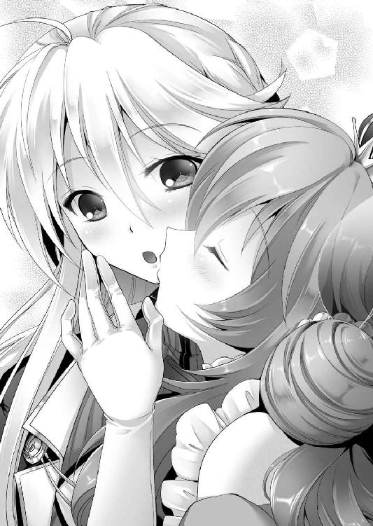

| 百合の騎士と薔薇の姫 (二次元ドリーム文庫) | |
| 上田ながの | |
| (2015) | |
※本作品の全部あるいは一部を無断で複製・転載・配信・送信したり、ホームページ上に転載することを禁止します。本作品の内容を無断で改変、改ざん等行うことも禁止します。また、有償・無償にかかわらず本作品を第三者に譲渡することはできません。
※本作品は電子書籍配信用に再編集しております。

序章 百合の騎士と薔薇の姫
「レイナよ......お前は女だ。しかし、グランフィール家の跡継ぎである。我がグランフィールは代々ローゼン王家の近衛を務めてきた誇り高き騎士の家だ。だからお前も騎士となるのだ。次に生まれてくる王子......もしくは王女を守る騎士に」
レイナ＝グランフィールが生まれて初めて父、レイゾード＝グランフィールから投げかけられた言葉がそれである。以後、その言葉通りにレイナは育てられることとなった。一人前の騎士になるため、まるで男のように......。
最初に与えられたオモチャは木製の剣であり、最初に教えられたものは騎士としての心得だった。
「自分を棄てるのだレイナ。お前は人ではない。剣であり、盾なのだ」
騎士とは王国の、王家の敵を屠る剣であり、王国を、王家を守る盾である。自分のことなど考えてはならない。自分の命は王家と国のためだけに存在している。主や国を守るためならば命を投げ捨てよ──それが父の教えだった。
教えられたものは言葉だけではない。
立ち上がれるようになったその日から、剣技の修業も始まった。まだまともに歩くことさえできないというのに、容赦なく木剣で叩かれ、幾つもの痣を身体に刻まれた。しかも、教え込まれたものは剣技だけに留まらない。
「グランフィールはただの騎士ではない。王家直属の近衛騎士なのだ。どのような席においても主を守らねばならない。式典や晩餐会などの席であったとしてもだ」
宮廷での礼儀作法も当然のようにみっちりと仕込まれた。
遊ぶ暇など存在しない。起きている時間すべてが騎士となるための勉強の時間だった。
正直言って最悪な子供時代だったと思う。僅か三歳にして幾度となく家を飛び出すほどに耐えがたい日常だった。
そんな日々である。四つになる頃には、騎士などという存在はいなくなればいいのだと思うようになっていた。王族もいなくなればいい。国など滅びてしまえばいいのだ──などということさえ考えてしまっていた。
しかし、五つの誕生日の日、レイナの心は一変することとなった。
その日、レイナは初めて父によって連れて行かれた宮廷の庭園にて、一人の少女に出会った。自分よりも二つ年下の、三つになったばかりの少女に......。
レイナの、儚さを感じさせるような金──というよりも銀に近いロングストレートの髪とは対照的なほどに目立つ、燃えるようなウェーブがかった薔薇を思わせる紅い髪が印象的な少女だった。
クリクリとした翡翠色の瞳。丸みを帯びた顔立ち。ピンク色のドレス──人形なのではないだろうか？ とさえ思えるくらいに可愛らしい少女。
思わず見とれ、呆然とレイナは立ち尽くした。
そんなレイナに対して少女はニッコリと微笑むと、三つになったばかりとは思えないほどはっきりとした意思を感じさせる口調で、
「私はアスハ＝ロレンス＝ド＝ローゼン。ローゼン王国第一王女よ。そして......貴女はレイナ＝グランフィールね」
と尋ねてきた。
「え？ あ......なぜ私の名を？」
初めて会った少女である。なのにどうして？
わけが分からず首を傾げる。
そんなレイナに対し、アスハはクスッと笑みを浮かべると、
「知っていて当然よ。だってレイナ......貴女は私の騎士なのだから。貴女の命は私の......ローゼン王国のもの。だから励みなさい。終生、私に忠誠を誓いなさい」
そう言って右手を差し出してきた。
子供とは思えないほどに、一つ一つの所作が美しい。まるで芝居でもしているかのようにさえ見えた。
けれど、それは決して芝居ではない。そのことは、やはり子供であるレイナにもすぐに理解できた。行動の一つ一つがその身に染みついているとでも言うべきだろうか。意識せずともそう動いてしまうほどに......。
刹那、レイナには分かった。
（同じです。この子は私と......）
騎士として生きることを義務づけられてきた自分と同じ。アスハも王女として生きることを義務づけられているのだと......。
気がつけばレイナはアスハに対して「辛くはないのですか？」と口にしてしまっていた。自分と同じように辛いと思っているのかも知れない。自分の思いをこの子ならば分かってくれるかも知れない。そんなことを考えて......。
この問いに対し、王女は一瞬ポカンとした表情を浮かべた後、すぐに泰然とした表情となると「私は王女として生まれた。国のために、王家のために生きる──それが私の義務よ」と伝えてきた。
無理をしているようには見えない。心の底からの言葉だったと思う。
しかし、アスハの言葉はそれだけではなかった。
「でも、それはきっと一人では無理。だから......私を支えてちょうだいね」
そう言って微笑みまで浮かべてみせてくれた。
（......この子を守る。私が......）
王女の笑みが強く心に刻み込まれる。
気がつけば、レイナは自然とアスハの前に膝をついていた。
「レイナ＝グランフィール......姫様と王国に終生の忠誠を誓います」
そう口にし、彼女の手に口付けをした。
＊
それから十三年──レイナはアスハと共に、ローゼン王国貴族フィリッポ伯爵の館へとやって来ていた。
現在この館の大広間では豪勢な晩餐会が開かれている。大勢の貴族達が集まり、舞を舞いながら食事をしていた。
当然アスハも食事に交ざっている。テーブルの上に並べられた色とりどりの食事を、ナイフとフォークを優雅に使い、口に運んでいた。
初めて出会った頃と変わりない紅い髪をフワフワとなびかせつつピンク色のドレスを見事に着こなすその姿は、立派なレディーといっても過言ではないだろう。
（身長の方はあまり伸びていないし、クリクリした瞳や丸い顔はそのままだからその、ちょっと子供っぽくも見えますが......。いや、まぁそこがまた可愛らしい）
ちょっと不敬なことを考える。
するとこちらの考えを読んだかのように、いきなり視線を向けてきた。
「なんか失礼なこと考えてるでしょ」
とでも言いたげな目つきである。
（本当に鋭い）
ちょっと苦笑してしまう。
するとアスハもクスッと笑ってくれた。
が、そうして主従が目を合わせていた時間は一瞬だけでしかない。すぐさまアスハはテーブルへと視線を戻す。
「しかし、本当に姫様はご立派になられた。陛下もさぞや安心されていることでしょう」
そんなアスハに、晩餐会の主催者であるフィリッポ伯爵が贅肉まみれのでっぷりとした身体を揺らしつつ声をかけた。
「いえ、わたくしなんてまだまだですわ」
優しげな笑みを浮かべつつ、アスハは謙遜してみせる。
「まだまだなどということはありません。私の言葉は心の底からのものですよ。姫様のような王女をいただくことができるなんて、我が国の人間は本当に幸せ者でございます」
歯の浮くような言葉である。
「そんな姫様をこの新しい館の完成披露会に主賓としてお呼びすることができた。陛下の臣下として──貴族として生まれた喜びを今日ほど感じたことはありません」
いや、言葉だけではない。ポロポロと涙まで零してみせてきた。
（貴族というものは本当に凄いですね。自分まで騙している）
レイナだって貴族の端くれではある。が、自分が貴族とはほとんど思ってはいない。自分は騎士だ。アスハと王国に仕える剣であり、盾である。それ以上でもそれ以下でもない。
（大体、今の我が国で貴族がどうのこうのなんて口にすること自体ナンセンスです）
ローゼン王国は確かに王制、貴族制国家である。
しかし、今や国の政治は王ではなく議会が執り行っている。しかも、議会に所属している人間の大半は平民だ。貴族や王などといった存在は、最早名ばかりのものと化しているのである。それでも貴族は領地を有し、領民から税を徴収する権利などは未だに保持し続けているのだが......（王家はそうして貴族が得た税収を上納させることで軍を養い、貴族達の領有権を保障しているのである）。
ここ数年でそのような特権も徐々になくなりつつある。
（陛下や一部の貴族はそのことを苦々しく思ってはいるようではありますが......。それこそが時代の流れというもので、陛下達の考えは古い......）
などということを考え──
（い、いけません！ 駄目です！ 陛下に対して不敬なことを考えてはなりません!!）
慌てて自分自身に言い聞かせる。
『どのような間違いを犯そうと、主に尽くす。国に尽くす。それがグランフィールだ。それを忘れるな』
父の言葉が脳裏をよぎった。
そんなレイナの前で、フィリッポは延々と自分の話をアスハに対して続ける。実に大仰な身振り手振りを加えながら......。
これをアスハは笑顔で聞き続ける。
浮かべているのは本当に穏やかな表情だ。けれど、付き合いが長いレイナには、明らかにアスハが不機嫌になっていることが理解できた。
「あの給仕は顔が気に入らん。姫様の前に出していい顔ではない。我が館から追放しろ」
「あの辛気臭い曲はやめさせろ。姫様の御前だぞ。あいつは首だ」
フィリッポはアスハに対しては恭しく接しつつも、城で働く者達に対してはまるで自分が王であるかのように振る舞っていた。平民など自分に傅いて当然というような態度だ。
はっきり言ってアスハが一番嫌うタイプである。
それでもイヤだという気配なんか微塵も感じさせない。
（ご立派に成長された）
ちょっと誇らしささえ感じた。
「あの、少し宜しいでしょうか？」
そんな時、声をかけられる。
「はい。なんでしょうか？」
顔を向けるとそこには一人の貴族の男が立っていた。年齢は自分よりも一つか二つほど年上のように見える。
「もし宜しければ私と一曲」
そっと手を差し出してきた。
（ふむ......。これは......）
どうするべきだろうか？ 相手は貴族だ。今やほとんど形ばかりの存在とはいえ、プライドが高い。確かにレイナは王女であるアスハの近衛騎士である。だが、グランフィール家の家格はそれほど高いわけではない。そのような存在に公衆の面前で断られればメンツを潰されたと思うかも知れない。となると後でやっかいなことにもなりかねなかった。
それならば一曲くらい──そうレイナは考える。
「わかりま──」
だから手を取ろうとした。
「お待ちなさい」
だが、途中で止められる。
「姫様？」
止めてきたのはアスハだった。
彼女は座っていた椅子から立ち上がると、伸ばしかけていたレイナの手を取る。
「貴方には申し訳ありませんが、わたくしも一曲踊りたくなりましたの。ですから......ごめんなさいね」
ニコニコと笑みを浮かべつつ、丁寧な口調で貴族に対してそう告げる。その物腰は実に柔らかいものだった。それなのになんだか有無を言わせない迫力がある。
「あ、は......はい。失礼致しました」
敏感にそれを感じたのだろうか？ 貴族はすぐさま引き下がった。
「それじゃあレイナ、踊りましょうか」
「しかし姫様」
チラッとテーブルに座り呆然としているフィリッポへと視線を向ける。
実を言うと彼はまだアスハに対してペラペラと自分がどれほど苦労して新しい館を建てたのか──ということを語っている最中だったのだ。その会話をいきなり有無を言わせずに中断されてしまったのだから、この反応も当たり前といえば当たり前だろう。
いくら王女とは言え、さすがに非礼がすぎる。そのことを無言でアスハに伝えた。
するとアスハは笑みを浮かべつつ「申し訳ありません公爵。少しだけ我が侭をさせてもらっても宜しいでしょうか？」などとフィリッポに告げる。
「は......はぁ。その......姫様の御心のままに」
駄目だなどと言えるはずがない。フィリッポは当然のように頷いてみせた。
「それじゃあ......行きますわよ」
アスハによって手を引かれる。
二人で広間の中央に立った。
周囲で踊っていた貴族達が動きを止める。フィリッポが用意した楽士達も一旦曲を停止する。広間の真ん中に、円形のスペースが作り出された。姫君のダンスがどんなものか？ それを誰もが見たいらしい。皆の視線が一斉に自分達に集まってくるのを感じた。
さすがに少し気恥ずかしさを覚えつつも、自分が怯んでしまっていては主であるアスハの恥となる。堂々と胸を張りつつ、アスハと組んだ。
（こういう時に騎士服というのはなかなか役に立つ）
ドレス姿のアスハに対し、レイナが身に着けているものは白銀を基調としたスラッとしたスレンダーな身体のラインを浮かび上がらせるような騎士服である。女が着るような服ではない。男性用の礼服とほとんど変わりがないものだった。
正直なことを言えばあまり身に着けたいタイプの服ではない。
アスハと出会ってから騎士として生きることを受け入れてはいるけれど、それでもレイナだって女なのだ。可愛らしいドレスを身に着けてみたかった。
（例えば姫様が今着ているような......）
可愛いドレスを見つめる。
ピンクを基調とした美しいシルクのドレスだ。アスハが少し動くたびに生地がフワッと浮かび上がる様がなんだかとても綺麗である。膨らんだ胸元から花のように広がるスカートが実にキュートだ。どちらかというと小柄なアスハにはよく似合っている。こんな可愛い服を一度でいいから着てみたい。
（まぁ、私には似合わないでしょうが）
そこまで考え、自嘲した。
騎士として男のように育てられてきた。今更女らしくしたいなんて考えても手遅れとしか言いようがない。ドレス姿なんかを披露した日には、きっとアスハに笑われてしまうだろう。
などということをゴチャゴチャと考えている間に、楽士達が曲を再開してきた。ゆったりとしたスローテンポの綺麗な旋律の曲だ。
その音色に合わせてゆっくりとレイナは動き始める。宮廷での作法を叩き込まれた際、しっかりダンスも覚え込まされていた。こういった席で主の相手を務めるのも仕事なのだ。
アスハもこれに合わせてステップを踏み始める。さすが王宮仕込みと言うべきか──まだ少女と言ってもいい年齢のアスハだけれど、その動きは実に堂に入ったものだった。
（まぁ、こうして姫様と踊ること自体初めてではないですし）
晩餐会や舞踏会に呼ばれるたび、こうして共に踊っている。そのお陰だか、二人の動きは実に息の合ったものだった。
曲に合わせて舞う。ステップしながらターンする。時折目と目が合った。そのたびにアスハは楽しそうな笑みを浮かべてみせてくる。そんな顔を見ていると、自然とレイナの口元にも笑みが浮かんだ。
「ちょっといいかしらレイナ」
アスハ声をかけてきたのは、そのようなダンスの最中のことである。
「えっと......な、なんでしょうか？」
これに対してレイナは少し警戒しつつ応じた。
理由は単純だ。
確かにアスハは微笑んでいる。遠目には楽しそうに見えていることだろう。しかし、口ぶりや瞳の色は明らかに不機嫌時のものだったから......。
先程までフィリッポに対してニコニコ応じていたのが嘘のように、言葉には険が混ざっていた。お姫様らしい「～ですわ」とかいう口調も完全に消えている。
「なんでしょうかじゃないわよ。まったく。貴女は隙を見せすぎだって、こういう舞踏会があるたびに言ってるでしょ」
ダンスのステップを踏み続けながら、怒りの言葉を向けてきた。
「隙って......私は隙など見せては。どんな不測の事態にも対応できるように常に気を張っていますし」
騎士なのだから当然のことである。
「それは私だって分かってるわよ」
一人称も「わたくし」から「私」に変わっている。
一体いつからこうなったのか？ 正直よくは覚えていない。けれど、気がついた時には二人でいる時はいつもこんな調子でアスハはレイナに対して話すようになっていた。
「でもね、私が言いたいのはそういうことじゃないの」
「じゃ......じゃあどういう？」
「何度も言ってるでしょ。いい？ レイナ。貴女は綺麗なの。貴女が自分で思っているよりもずっと。だからね、その辺の男が虎視眈々と貴女を狙っているのよ」
「ま......またその話ですか」
これまでも舞踏会で男に声をかけられるたび、幾度となく聞かされてきた話である。
「いつも言っていますが、私のような男女を狙う男性など......」
ターンを決めながら反論する。
「貴女は男女なんかじゃない！ 立派なレディーよ！」
「あ......その、あ、ありがとうございます」
さすがにちょっと恥ずかしく、誤魔化すように礼の言葉を口にする。
するとアスハも僅かに頬を赤く染めた。
「う......だ、だからね、その、貴女は男に狙われるような女なの！ そういうわけだから、刺客とかを気にするだけじゃなくて、男に対しても『私に近づくなっ!!』みたいな鋭いオーラを出しておかなくちゃ駄目なのよ!! って、いつも言ってるでしょ。まさか、忘れたわけ？ 主の言葉を」
優雅なステップを踏みながら、プリプリ怒ってきた。
「な......そんなことありませんよ。私が姫様の言葉を忘れることなどあり得ません！」
「だったらなんで男に声をかけられるのよ？」
曲に合わせて大きく背筋をのけぞらせつつ、器用に首を傾げてくる。
「それは......そんなこと言われても......」
そればかりは自分でどうすることもできない。
それくらいのことが分からないアスハではないのだけれど──。
「毎回言ってるけど、次からは男に声をかけられたりなんかしたら駄目よ。絶対に！」
無茶なことを言ってくるものである。
（姫様は本当にしっかりした御方です。こんな方に仕えることができている自分を誇りたくなるほどに。でも、どうしてなのでしょうか？ なぜ私にだけこんな我が侭を......）
初めて会った頃はそんなこともなかったのだけれど、ずっと一緒にいるうちに、気がつけばアスハはレイナに対してだけは今回のように結構無茶な我が侭を言うようになっていた。こういうところはさすがに困ってしまう。
「努力致します」
しかし、我が侭とは言え主命である。アスハの言葉にレイナは頷いた。
「分かればいいのよ。にしても......ホント趣味が悪いパーティーね」
ターンを決めながら満足そうに頷きつつ、コロッとアスハは話題を変えてきた。
「領民から巻き上げた税を使って金箔とかバリバリ使った悪趣味な館を建てた上で、絢爛豪華な晩餐会って......。センスが最悪よ」
が、口にする言葉は毒ばかりだった。笑いながらの毒舌とは、実に器用である。
「あまりそういうことを口にするのは......。誰かに聞かれたら」
「そんなヘマはしないわよ」
その口調はフフンッという自信に満ちたものだった。
「まぁ確かに姫様ならば大丈夫でしょうね。それでも、注意して下さい。まぁその......悪趣味という姫様の言葉には同意ですが」
このパーティーの裏には大勢の人々の苦しみがあるということをフィリッポ達は完全に失念している。そこまで厚かましくなれることが、レイナには理解できなかった。
「でしょ」
同意を得られたことが余程嬉しかったのか、踊りながらレイナだけに分かる程度に胸を張ってくる。
「まぁそんな見た目以外にも、料理とかもお金を無駄にかけてあるだけって感じで口に合わないし......ホント来たことを後悔するレベルよ。王族の仕事だから仕方ないけど......」
優雅にステップを踏みつつ、レイナだけに分かる程度にため息をつく。笑顔のままで。
悪趣味とか最悪とか口にしつつも、王家と貴族の絆を深めるためにそのパーティーに参加するしかない。そんな自分自身を嫌悪しているかのように見える態度だった。
「......では、料理は取り替えさせますか？」
主にそのような表情をさせてしまっていることに情けなさを感じつつ、話を進める。
「それは駄目」
これに対してアスハは首を横に振ってきた。
「その......確かに私がこの料理が気に入らないって言えば、フィリッポはすぐに新しい食事を用意してくれるでしょうけど、そんなことになれば料理の責任者がどんな目に遭わされるか分かったものじゃないわ。私はあいつと同じような人間にはなりたくない。だから......絶対にそんなこと言ったら駄目」
「分かりました」
どんな時でも人のことを考えられる──本当に心から自慢することができる主だった。
ちょうどそのタイミングで曲が終わる。二人はそれに合わせてダンスを終えた。
途端に広間中に拍手が響き渡る。貴族達が感激した様子で手を叩いていた。
「素晴らしい。さすがです姫様。本当に素晴らしいダンスでした」
フィリッポも手を叩きながら近づいてくる。
「いえ、拙いものをお見せしてしまいましたわ」
「それは謙遜というものです。本当に素晴らしいダンスでした。さすがは姫様。それに......百合の騎士レイナ様です」
フィリッポが話を振ってくる。
百合の騎士というのはレイナの異名である。
白銀の騎士服に身を包みながらの立ち振る舞いが白百合のように美しい──というところから呼ばれるようになった二つ名である。個人的には恥ずかしい呼び名だ。
「百合の騎士というのは、その......」
だからその渾名で呼ばないでくれと頼もうとするのだけれど──。
「いいじゃない。いつも言っていますけどレイナ、貴女にぴったりな名前ですよ」
などということをアスハに言われてしまっては、これ以上フィリッポを止めることもできなかった。
（本当に私を困らせるお姫様です）
こういうところは本当に困る。
けれど、同時に嬉しくも思う自分がいた。
何故ならば、アスハがこのような姿を見せてくれるのは自分だけなのだから......。
＊
翌日、レイナはアスハと共に馬車にて王都への帰路についていた。
「ようやく解放された！ ホント肩が凝っちゃったわ」
そんなことを言いつつ、グデッと姿勢をだらしなく崩す。
「姫様がそのようにはしたない格好をしては駄目ですよ」
正直アスハの気持ちは分かる。一晩あの悪趣味な貴族の館で過ごしたのだ。レイナだってできることならばアスハのようにだらしなく姿勢を崩したかった。が、レイナは騎士である。いついかなる時も気を抜くわけにはいかないのだ。それに、アスハだって王女である。万が一にでもだらしない姿を誰かに見られるわけにはいかない。だから一応レイナは主に対して注意をした。
「そんなこと言われても無理。ホント疲れたんだから」
しかし、アスハは言うことを聞いてくれない。子供みたいな言葉を口にしつつ、一旦立ち上がると向かい合って座っていたレイナの隣に腰を下ろしてきた。その上で上半身を倒すと、こちらの膝の上に頭を預けてきた。いわゆる膝枕の体勢である。
「ひ、姫様っ!!」
さすがに慌ててしまう。
が、アスハはまるで動じる様子も見せず「ナデナデして」などと口にしてきた。
「ナデナデって......」
「いいでしょ。疲れたんだもん」
まるっきり子供のような口調である。
「しかし......いやしくも姫様の頭を撫でるなど」
「......私がしろって言ってるの。これは命令よ。大体、これが初めてってわけでもないでしょ。いつもしてるんだからしなさい」
確かにアスハが言う通りだ。
こんな我が侭に付き合うのはこれが初めてというわけではない。
実際、公務で遠出をするたびにこのようなやり取りをしてきている。
ただ、それでも躊躇うのは、やはりアスハが主だからだ。
それでも、命令と言われた以上拒絶はできない。
「......分かりました。まったく、仕方がない姫様ですね」
「仕方がないのは融通が利かないレイナの方よ」
「フフッ」
主従というよりもまるで姉妹のようなやり取りだった。
なんだか心の中が温かくなっていくのを感じつつ、そっとレイナはアスハの頭を撫でた。
「気持ちいい」
そう言ってアスハは目を細める。その表情は、飼い主に頭を撫でられる子猫のように心地よさそうなものだった。
そんな顔を見ていると、自然とレイナも笑みを浮かべてしまう。
微笑みながらアスハが寝息を立て始めるまで、レイナはひたすら可愛らしい頭を撫で続けるのだった。
「何があろうとずっと一緒です、姫様」
こんな日常がずっと続く──レイナはそんなことを考えながら、眠るアスハにそっと囁くのだった。
しかし、この世には永遠なんてものは存在しない。
ずっと続くと思っていた日常──そんなものはある日突然、あっさりと崩れてしまう。
「アスハ......お前の結婚が決まった」
国王ガレリアが娘に対してそう告げてきたのは、王都に帰還した翌日のことだった。
一章 姫のお願い
「結婚......ですか？ わたくしが？」
王の書斎にて、呆然とアスハは呟く。
（姫様が結婚？ 一体誰と？）
近衛騎士はどのような時でも主と共にいることを許されている。アスハに従い、共に書斎へとやって来ていたレイナも、王女同様驚きの表情を浮かべた。
確かにアスハの年齢からすれば結婚話が出てもおかしくはないことである。それでも、さすがに不意打ちすぎた。
思わずレイナは王の背後に影のように付き従っている近衛騎士レイゾード＝グランフィール──即ち自分の父を見つめる。
が、父は視線を合わせてもくれなかった。無表情でそこに立ち続けている。
「そうだ。お前ももうそういう歳だからな」
そんなレイナの耳に、アスハの驚きに対するガレリア王の答えが飛び込んでくる。
「......確かにそれはその通りですが......。しかし、一体誰と？ どのような方がわたくしの相手なのですか？」
当然の疑問である。
アスハは王女だ。相手もそれなりの人物であるはずである。
「お前の相手はオウドール卿だ。オウドール＝ガウェイン＝アウドール──彼と、一ヶ月後に結婚してもらう」
あっさりと答えが返ってくる。
（オウドール卿？ あのオウドールですか）
オウドール──その名を聞いた瞬間、レイナはすぐに相手の姿まで思い浮かべることができた。常に黄金をちりばめた悪趣味な礼服に身を包んだ、でっぷりと太った禿げ頭の醜い顔の男の姿を......。
オウドール＝ガウェイン＝アウドール──ローゼン王国にてその名を知らない人間は存在していないだろう。
貴族にしてローゼン王国議会議員も務めている男だ。しかも、議会における力は現在のところ、どの議員よりも勝っている。オウドールが提出する議案であれば、ほぼ可決されることは間違いないほどだ。
なぜそれだけの力をオウドールが有しているのか？ その理由は簡単なことである。オウドールが熱心な王党派達をとりまとめ、一大勢力を築いているからだ。
現在ローゼン王国議会には王党派と共和派の二大勢力が存在している。王党派が求めるものは王権の拡大。即ち貴族の利権死守だ。
対する共和派の目的はローゼン王国の完全なる共和制への移行である。貴族の特権をなくし、貴族や平民など関係なしにすべての人間が平等に権利を有する国に......。それが共和派の悲願だ。
王党派が到底受け入れられるはずのない目的といっても過言ではないだろう。
それでも、貴族に対して平民の数はあまりに多い。故に、共和派──つまりは平民出身議員が増え続けているのが現状だった。今のところ平民議員はある一定以上の資産を有している人間に限られてはいる。そのため、貴族議員の方が数の上では勝っていた。けれど、このまま平民議員が増え続ければいずれその条件も撤廃されることになるだろう。そうなれば本当の意味でこの国は共和制に移行することになるのかも知れない。
（それを阻んでいるのがオウドールだ）
王党派の議員──即ち貴族達をまとめ上げ、共和派が上げてくる議題を悉く否決し、逆に貴族が優位となるような法案を次々と可決させている。
（かつてローゼン王国の政治を行っていたのは王や貴族だけでした。しかし、同じ国で生きているのに国政に何も口を出せないというのは間違っていると平民達が立ち上がった。一部の心ある貴族の協力も得て、人々は今の議会制度を勝ち取った。ですが、オウドールはその時計の針を逆戻りさせようとしている）
貴族の裁量による税の徴収や、貴族による平民の徴用を自由に行えるようにする──などという現状を作り出したのもオウドールなのである。
（証拠こそないものの、オウドールは多くの金を使って議員達を買収しているという話も聞いています）
現在の議会が成り立った経緯もあり、実は貴族議員の中にも共和派議員の数はかなり多かった。しかし、オウドールが議員になって以来、共和派から王党派に転向する議員の数が増えている。裏で多額の金が動いているのではないか？ というのがもっぱらの噂だった。
ローゼン王国において贈収賄は犯罪である。最初期の議会で制定された法だ。しかし、証拠がない。となると犯罪として立件することも不可能だった。
（オウドールの贈収賄について調べていた議員が急死したなんてこともあった）
実際にオウドールが手を下したのか？ オウドールが本当に贈収賄を行っているのか？ それは分からない。あくまでも噂にすぎないから......。それでも、闇が深い男であることは間違いないだろう。
（そのような男と姫様を結婚させる？）
脳裏にオウドールとアスハが並んで立つ姿を思い浮かべる。
途端に、ブツブツと鳥肌が立つのを感じた。同時に頭がクラクラして、吐き気まで催してしまう。それほどまでにおぞましい想像だった。
王は正気なのだろうか？ などということさえも一瞬ではあるが考えてしまう。オウドールのような男とアスハが結婚するなど、絶対に認められるはずなど──。
（って、馬鹿者！ 何を考えているのですか!!）
生まれてしまった思考。レイナはそれをすぐに打ち消した。
主が間違っていても最後まで忠を尽くす。それが近衛騎士なのだから......。
（とはいえ、それでもやはり引っかかりを覚えずにはいられない。何を考えて王はオウドールと姫様との結婚などというものを考えたのだろうか）
と、そこまで思考したところで、
（いや......考えるまでもありませんね）
すぐにレイナはガレリア王の思惑に気付くことができた。
（陛下の目的はかつてのような絶対的王権を取り戻すことにある。しかし、王家の力だけではその目的を達することは不可能です。当然、力ある味方を得なければならない）
そう考えると、オウドールはまさにうってつけの人材といえるだろう。
ただでさえ貴族権威拡大のためだけに動いているような男だ。そのような男をさらに自分のために働かせる──そのために娘を。
実に分かりやすい政略結婚である。
（......姫様）
ズキッと胸が痛むのを感じた。
アスハは王族として生まれた人間である。当然ただの人のように普通に恋をして、好きあった相手と普通に結婚をすることなど不可能だ。いずれ政略結婚の道具にされるということは分かっていたことである。
それでも、不憫さを感じずにはいられなかった。
胸を締めつけられるような感覚を覚えつつ、レイナはアスハの後ろ姿を見つめる。一体彼女は今、何を考えているのだろうか？
そんなレイナの視線に促されるかのように──。
「オウドール卿ですか」
噛み締めるようにアスハはその名を口にした。
「そうだ」
静かにガレリア王は頷く。
「..................」
この答えにアスハは沈黙する。
「不満か？」
王が王女に問う。
この父に対して娘は僅かの間を置いた後──、
「不満などありませんわ。謹んでお受け致します」
そうはっきりと口にした。
＊
「......本当に宜しかったのですか？」
アスハの自室にて、レイナは主にそう尋ねた。
王女が決めたことである。家臣である自分が口を挟むことではない。それはレイナ自身だって理解はしている。それでも問わずにはいられなかった。
「もちろんよレイナ」
これに対し、アスハはそんな答えを返してきた。笑顔さえ浮かべながら......。
これまでも幾度となく見てきた笑顔。いつもと同じだ。普段と何ら変わることのない表情である。
だというのにどうしてだろうか？ なんだかその顔がレイナにはとても痛々しいものに見えてしまった。
「......本当に？」
だからこそ、不敬だということは承知しつつも重ねて問うてしまう。
「しつこいわね。もちろんって私は答えたんだけど」
「はい。ですが......」
本当のことを言っているようには見えなかったから──というところまでは口に出さないけれど、視線で問う。
「その顔......私が嘘を言ってると思ってるんでしょ」
アスハは当然のように気がついてくれた。
「いえ、そんなことは」
「別に取り繕う必要なんかないわよ。レイナが言いたいことくらい分かってるつもりだから」
「私が言いたいこと？」
「そうよ。どうせあれでしょ。オウドールみたいに評判の悪い男との結婚をなんで受け入れたのかって......そう言いたいんでしょ？ レイナは私をあんな男と結婚なんかさせたくないって思ったんでしょ？」
翡翠の瞳でレイナの金色の瞳を真っ直ぐ見つめつつ、そのようなことを問うてくる。
「そ......それは......」
言葉に詰まってしまう。
「ほら、図星だった」
悪戯っ子みたいにそう呟くと、アスハは勝ち誇るような表情を浮かべてみせてきた。
こんな表情で見つめられてしまっては、負けを認めざるを得ない。
「......姫様が決めたことです。私が口を挟むようなことではない、ということは理解しているんです。それでも......。申し訳ありません」
素直に謝罪の言葉を口にする。
「別にいいわよ。謝る必要なんかない。まぁオウドールのことを知っていれば、そんな風に考えちゃうのも当然だろうしね」
こんな状況だというのにどこか楽しげにそう口にしてくる。
が、すぐに楽しげな表情を消すと、
「でもさ......それって、相手がオウドールだから？ それとも、誰が相手でもそんな疑問を持ってくれた？ 結婚させたくないって思ってくれた？」
なぜか少し緊張しているような面持ちで、そのようなことを尋ねてきた。
「は？」
一瞬頭の中が真っ白になる。
「その......それはどういう意味でしょうか？」
理由は簡単だ。アスハが言いたいことがよく理解できなかったからである。
だから質問に対して質問を返す。
「ん......別に......。なんでもない。今の質問は忘れてちょうだい」
これに対してアスハはなぜかレイナから顔を背け、そう口にしてきた。
その上で、まるで何かを誤魔化すように──、
「で、レイナに対する答えだけど......私が結婚を受け入れた理由は簡単なものよ」
そう言って改めてレイナを見つめてきた。
「私がローゼン......つまり、王族だからよ」
きわめて簡潔な言葉を伝えてくる。
「王族だから......」
王女としての強い覚悟を感じさせる言葉に、一瞬レイナは強く引き込まれた。
「そう。私は王族。ローゼン王国国王ガレリア＝スーサイド＝ド＝ローゼンの娘なの。私の命は王家......そして国のためだけに存在している。それが王家に生まれた者の宿命だから。だからね、私にはお父様の命令を拒絶する権利なんかないの」
極当たり前のことのように、アスハは言う。
刹那──、
『私は王女として生まれた。国のために、王家のために生きる──それが私の義務よ』
初めてアスハと出会った時の言葉が脳裏に蘇ってくる。
（姫様は何も変わってはいない。あの頃のままです。誇り高いローゼン王国王女です）
アスハは自分の立場というものを痛いほどに理解しているのだろう。王の命令を拒絶するなどという選択肢なんて、最初から存在してはいなかったのだ。
とはいえ、さすがはアスハと言うべきだろうか？
「まぁ、オウドールが相手っていうのにはがっかりもいいところだったけどね」
全肯定するだけではなく、不満も当たり前のように口にしてくれた。
「何しろセンスがないじゃないアイツって。ほら、いつも着てる金ぴかの服とかさぁ」
「それはその......確かに」
金ぴか──実に的確な表現だと感じ、思わず笑ってしまう。
「それにさ、でっぷりとしたあの身体。体調管理ってものができてないのよね。家臣や領民には酷い労働を強いてるくせに、自分だけは肥えちゃって......。最低もいいところよ」
「動くのすら辛そうですからね」
これにも同意する。
「でしょでしょ！ それにさぁ、何よりセンスを感じないのは......」
と、そこまで言ったところで、一度アスハは言葉を切ってきた。
一体どうしたのだろう？ 思わずレイナは首を傾げる。
するとこれに答えるようにアスハは意を決したような表情を浮かべると、大きく息を吸うと共に──、
「今更この国を貴族や──王家のものに戻そうとしているってところね」
聞きようによっては王制批判にもなりかねない言葉を、はっきりと伝えてきた。
「......そのようなことを言っては......」
レイナだって同じようなことを考えてはいたが、慌てて窘める。
「フフッ」
アスハはそんなレイナの窘めに対し、自嘲するような笑みを浮かべてみせてきた。
「だってそうでしょ？ ローゼン王国議会が動きだしたのは三十年も前のことなのよ。今やこの国に根付いてるシステムといっても過言ではないわ。なのに、それを今更なくそうとしている。一度流れ始めた水を止めることなんかできないのにね。ホントに......」
そこでアスハは一旦言葉を切った後、
「センスがないわ」
噛み締めるようにそう呟く。
「でも、そんな風に思ったところでどうすることもできない。私はお父様の娘。ローゼンの人間なのだから。王女なんていうと凄く権力があるように聞こえるかも知れない。でも、本当に無力。私にできることなんか何もない。もしかしたら......何もできないくせに文句ばっかり一人前にしてる私こそが、一番センスがないのかもね」
自分ではどうすることもできない、無力な自分を悔しがっている──そんな表情、態度のようにレイナには感じられた。
「......姫様」
なんだか思い詰めているようなレイナの姿に、ズキッとアスハの胸も痛む。
「あ、ごめんごめん。湿っぽくしちゃったわね」
レイナの感情を敏感に察したのか、少しだけ茶化すような言葉を口にしてきた。
「決まったことをグチグチ言うなんて、なんか私らしくないわよね。その......私が言ったことは忘れてちょうだい」
こんな状況だというのに、自分のことよりもレイナのことを気にかけてくれていることがよく分かる表情と言葉だった。
本当に自慢の主だと思う。だからこそ、自分ができることであればアスハのためになんだってしてやりたい──心の底からそう思った。
「......姫様。なんでも構いません。私にどのようなことでもお命じ下さい。私にできることであればなんでも致します。姫様のために！」
心の中で思うだけではなく、はっきりと口にして伝えてもみせる。
「......なんでも？」
「はい。なんでもです！」
オウム返ししてくるアスハに対し、力強く頷いた。
「そっか、なんでもかぁ」
するとニヤッとアスハは何かを企むような笑みを浮かべてみせてきた。
（う......これは少し早まってしまいましたか!?）
などということを考えてしまうような表情である。
（し、しかし騎士に二言はありません！）
とはいえ、今更撤回もできないのでアスハが何を言ってくるつもりなのかと身構えた。
これに対し王女は何かを考えるような表情を浮かべてみせてくる。しばらくそうし続けた後、なぜかアスハは急激に頬を赤らめ始めた。自分が思いついてしまったことに羞恥を覚えているような表情である。
どんなことを思いついたのだろうか？
そんな疑問を抱くレイナの瞳を、アスハは表情を赤らめたまま再び見つめてきた。
「早速なんだけど、お願いしてもいいかしら？」
少しモジモジしつつ、上目遣いで問うてくる。
（う、か......可愛い......）
しっかりと自立し、己の意思も強く持っているアスハは普段、常に凛とした佇まいである。けれど、今の姿はそうじゃない。年相応の女の子らしいものに見えた。普段とはあまりに違う態度に、同性であるレイナであっても、キュンッと胸を高鳴らせてしまうほどの愛らしさを感じてしまう。
「え......えっと......なんでしょうか？ 先程も言った通り、私にできることであれば」
アスハに釣られるように頬が赤くなっていくのを感じつつ、頷く。
「......ありがと。で、私のお願いなんだけどね。実はその......結婚前に一つだけどうしてもしておきたいことがあるのよ」
「しておきたいこと......ですか？ 一体どのようなことです？」
「簡単なことよ。えっとさ、市井の人って、私みたいに決められた相手と結婚するわけじゃないんでしょ？ 互いに好きあった相手......つまり恋人と結婚するんでしょ？」
「へ？ それはその......」
質問の意図がよく分からず、戸惑ってしまう。
が、問われたことには家臣として答えなければならないので「そうらしいですね」という返事をした。
そう〝らしい〟という言い方をした理由は単純である。騎士修業しかしてこなかったレイナはそういう方面の話にはとんと疎いのである。まぁ興味がないわけではないが......。
いや、どちらかというと興味は津々な方かも知れない。実際、ローゼン城内に用意されたレイナの私室の本棚に並んでいる本の大半は恋愛関係の小説だった。そう考えるとそういう方面の話には本当は疎くないのかも......。父にそのような事実を知られてしまったら、怒られるどころでは済まないかも知れない。
（だって気になってしまうのだから仕方がないでしょ！ わ......私だって......その、お、女の子ですし......。って、自分を女の子って！ 何を考えて！ 馬鹿っ！ 愚か者!!）
心の中で一人突っ込みをした。
「で、その......市井の人間の結婚を知ることに何の意味が？」
動揺を誤魔化すように主に問う。
それに対して返ってきた答えは──、
「簡単なことよ。結婚までまだ一ヶ月も間がある。だからね......その間に私も体験してみたいのよ。市井の人と同じような恋ってものを」
というものだった。
「──へ？」
あまりに予想外すぎる答えである。一瞬頭の中が真っ白になり、反射的に間の抜けた声を漏らしてしまった。
「い、今なんと？」
聞き間違いでもしてしまったのだろうか？
「なんとって......だから、その......こ、恋をしてみたいのよ」
いや、間違ってはいないらしい。
「恋......ですか。しかしさすがにそれは......」
しかし、恋をしたいなどと言われても、さすがにどう叶えればよいのかレイナにはまるで分からず、戸惑ってしまう。自分が読んできた小説の知識だけしかないけれど、恋というものは気付かぬうちに陥ってしまうもので、誰かにお膳立てされてするものではないからだ。
それくらいのことはアスハだって──。
「......レイナの戸惑いは分かるわよ。それくらいは私だって分かってる」
やはり理解しているらしい。
でも、だとしたらどうして──。
「恋なんて口にしてきたのか？ とでも言いたげな顔ね」
思考を読まれてしまう。
「はい。その通りです」
否定する必要もないので肯定した。
「レイナの考え方も分かるわ。その通りよ。だからね、本当の恋をしようとは思わない。だけどね、擬似的なものでもいいの。恋人を持つということがどういうことなのか。私はそれを知りたい。仮初めでもいい。恋人が欲しいの」
仮初めの恋人......。
なんだか寂しい響きのする言葉だった。
しかし、それがアスハの限界だということをレイナは痛いほどに認識する。
「どうかしら？」
王女がジッと見つめてくる。
頬を紅潮させつつも、笑顔を浮かべた表情──一見すると普段通りにも見える。だが、アスハの願いが心からのものだということを、付き合いが長いからこそレイナは理解することができた。
笑ってはいる。でも、今にも泣きだしそうな顔......。
叶えてあげたい。アスハの願いを──心の底からそう思った。
しかし、問題がある。
「確かに......仮初めで構わないのであれば恋人候補を見つけ出すことは可能かも知れません。ですが、姫様は一ヶ月後に婚姻を控えた身です。そんな姫様が男と恋人同士になるというのは些か......」
例えば恋人同士の逢瀬をしている際に、もし誰かに見られてしまったら──下手したら大問題になりかねない。
王族の不倫と捉えられるかも知れない。そうなれば王室の権威に傷がつく。それに、相手の男の方がどうなってしまうか......。場合によっては首を刎ねられかねない。
「言いたいことは分かるわ。だからね、別に男でなくてもいいの」
「......男でなくてもいい？」
それはどういう意味だろうか？
「だからね」
するとアスハは「鈍いわね」とでも言いたげな表情を浮かべた。
「女でもいいってことよ。ほら、女同士なら例えば誰かに見られても友人同士だって誤魔化せるでしょ」
「なるほど。確かに......。しかし、女同士ですか？」
「何かおかしいことでも？ 好きになる相手が同性ってことくらい、普通にあることなんじゃないの？」
「それは......」
そうかも知れない。
「分かりました。では、後は人選ですが......」
誰をアスハの恋人に選ぶべきか？
フムッとレイナは考える。
「あ、それなら心当たりがあるわ」
これに対し、アスハがそんなことを言ってきた。
「......誰ですか？」
首を傾げる。
「簡単なことよ。いい、仮初めとはいえ恋人同士。それなりに気心が知れた相手じゃないといけない。でないと恋人っぽいことをしても面白くないでしょ？ それに......秘密を絶対隠し通せる相手でないといけない。それほどに私が信頼できる人間でないと」
確かにその通りである。しかし、そんな相手がいただろうか？ 一体どんな人間にアスハは心当たりがあるのだろう？
「どなたですか？」
思い当たらないので直接問う。
するとアスハは──、
「貴女よ」
事も無げにそう言ってきた。
「................................................は？」
ポカンッとレイナは口を開く。間抜けそのもの──としか言えないような表情だ。
「なによその顔」
クスクスとアスハが笑いだす。
「え......あ......そ......その......」
どうすべきだろうか？ 自分はなんと答えるべきなのだろうか？
困ってしまう。戸惑ってしまう。
「で、答えは？」
そんなレイナに容赦ない問いが飛ぶ。
「それは......その......」
仮初めとはいえアスハと恋人同士になる？
あり得ないことだ。あってはならないことである。何故ならばアスハは自分の主なのだ。身分が違う。たとえ仮初めでも......。
「答えてレイナ」
ジッとアスハが見つめてくる。
一見すると普段とは変わらない顔だ──でも、どうしてだろう？ なんだか怯えている小動物のようにも見える顔だった。
断られたらどうしよう──とでも訴えてくるような表情である。
（こんな顔を見せられてしまったら......）
導き出せる答えなど一つしか思い浮かばない。
（恐れ多いことです。でも......私は姫様を苦しめたくはない。姫様には笑っていて欲しい。だから......）
百合の騎士は覚悟を決める。
「分かりました」
それがレイナの答えだった。
二章 恋人って何をする？
「で......姫様と恋人同士になったと。また随分と思いきったもんだなぁ」
城で働くレイナと唯一同い年の侍女──ただ一人の友人であるナノが驚いたような表情を浮かべてみせてくる。
「レイナにとって姫様って守るべき──忠を尽くすべき相手なんだろ？ そんな相手と恋人って......大丈夫なのか？」
メイド姿の黒髪の友人が、目つきの悪い三白眼をこちらに向けつつ、首を傾げてきた。
「......あくまでも疑似です」
「それでも恋人なんだろ？」
「それは......その、確かにその通りではあるのですけど......」
改めてそう聞かれてもピンとは来ない。確かに恋人になると言葉では口にした。しかし、アスハが自分の恋人に、自分がアスハの恋人になったとはやはり思えない。実感というものがまるでなかった。
そのことを素直にナノには伝える。
ナノとは知り合ってから既に十年の付き合いだ。そのお陰か、彼女にだけは何もかも包み隠さずすべて話すことができた。
「なるほどな。まぁ、レイナの気持ちも分からないでもないな。例えばいきなりお前に恋人になって欲しいとか頼まれて、それをやむにやまれずあたしが引き受けたとしても......やっぱり恋人になったなんて実感は湧かないだろうしな」
「でしょう」
理解を得られたことで少しだけホッとする。
「だけどな。でも、それじゃまずいんじゃないか？」
「まずい......ですか？」
どういうことだろうか？
「だってそうだろ？ 言葉の上では疑似とはいえ恋人になることを引き受けた。でも、心の中では恋人とは思えない。それじゃあ姫様の願いを叶えられてるとは言えないんじゃないのか？」
「それは......」
確かにその通りだ。
実際、レイナ自身指摘されるまでもなくそのことに気付いている。
「......ナノが言いたいことは分かります。分かっています。だからこそ......力を貸してもらいたくて貴女を呼んだわけです」
「なるほどな。で、どんなことに力を貸せばいいんだ？」
「簡単なことです。確かに私は姫様と恋人同士になれたとは思えていない。というよりも、そのようなことあってはならないと今でも思っています。姫様は恋人ではない。私の主なのですから。ですが、疑似恋人を引き受けてしまったことは事実です」
であるのであれば、心の中は別として表面上はできる限り恋人として振る舞えるようにしたい。それが家臣として主のためにせねばならないことだからだ。
それに、アスハの願いを聞き入れた後、彼女から『それじゃあ、恋人同士として何をすべきか、考えてね。私も考えるけど、当然レイナもね』と厳命されてしまっている。家臣として命令された以上答えなければならない。
しかし、それには大きな問題が一つあった。
「問題？」
「そうです。即ち──私は今まで恋人というものを持ったことがないということです」
「ああ、なるほど。お前......剣ばかりだったもんな。ふむ、分かった。お前があたしに頼みたいこと......理解できたぞ」
昔からナノは察しがいい。すぐにレイナの意図を理解してくれた。
「つまり、恋人同士が何をするのか？ どんなことをすればいいのか？ それをあたしに教えてもらいたい──というわけか」
ズバリ正解だった。
「さすがナノです」
自然と賞賛の言葉を口にする。
「お前との付き合いを伊達に十年もしてるわけじゃねえからな。しかし......」
ナノがそこで言葉を一旦切った。
元々悪い目つきがさらに悪くなっていく。この表情──不機嫌になった時のものだ。
「しかし？」
一体なぜこんな顔をしているのだろうか？
「ホントにそれ、あたしに答えられると思ったのか？」
首を傾げて問うレイナに対して、ナノはそんな答えを返してきた。
「──あ」
瞬間──。
『なんであたしってモテないんだろうな？ 自分で言うのもなんだけど、目つきは悪いが顔立ちは結構いい方だって言うのに......。実際、周りの奴等だって最初はあたしにちやほやしてくるんだぜ。なのにさ、なんか仲がよくなっていくにつれて「ナノさんって一人でも全然生きていけそうだよね」「なんか俺とか近くにいると逆に邪魔になっちゃってる」とかなんだかんだ言い始めて......みんないなくなっちまうんだよ。どういうことなんだよ、これはさぁ！』
などというナノの愚痴がレイナの脳裏に蘇ってきた。
「......恋人がいない。友達くらいにはなれるけど、それ以上はなし！ 結果、この歳までお前と同じで誰とも付き合ったことのないあたしに恋人同士のことを聞くって......それ、嫌がらせかなにかなんですかねぇ？」
「あ......いや、べべべ......別にそういうことでは......」
ダラダラと脂汗が溢れ出す。
ギロッと向けられるナノの三白眼──ナイフのようだ。はっきり言って怖い。どんな男や怪物を前にしても怯む気はないが、この友人にだけはなぜか勝てる気がしなかった。
「大体さぁ、誰とも付き合ったことのないあたしなんかより、男女──いや、女同士ではあるんだけど──交際についてはレイナの方が詳しいだろ？」
「は？ なぜですか？」
「なぜって......本棚見れば一目瞭然なんだが」
友人は本棚に並べられた恋愛系小説を見つめつつ、そのように呟いてきた。因みに、現在ナノと話をしているのはレイナの自室である。
「昔っからお前ってこの手の本が好きだったよな。だったら本に書いてあるようなことを実行すればいいんじゃないのか？」
本棚から一冊本を取り出すと、ペラペラ捲りながらそんなことを言ってくる。
「本に書いてあることを実行......なるほど、確かに」
言われてみればその通りだ。
「もしかして、思いついてなかったのか？」
「え......あ......その......はい」
「お前ってしっかりしてるけど、妙に抜けたところがあるよな」
カラカラとナノが笑ってくる。
「う......ううう......」
なんだか恥ずかしさを感じ、カアッとレイナは顔を赤く染めた。
とはいえだ。恥をかいてしまったとはいえ、恋人同士がどのようにすべきかという指南書を発見することはできた。
が、問題はまだある。
「問題ありって顔だな......なんだよ？」
「何って簡単なことです。確かに本に書いてあることを実行すればいいという答えには辿り着けました。しかし、ではどれを実行すべきかというのが非常に難しいのです。何しろシチュエーションというものは本の数ほどあるわけですから。ですので......その、えっと......なんと言いますか......」
上目遣いでナノを見つめる。
「普段はキリッとした騎士のくせに、あたしにだけはホントお前って......」
呆れたように友人はため息を漏らした。
こんな態度をとられるのも仕方がない。騎士として普段は常に張っている気が、ナノの前でだけはどうしても剥がれてしまう自分がいたから......。唯一同い年の友人。だからこそ、どこか甘えてしまう。
「すみません」
謝罪しつつも、子猫が飼い主を見つめる時のような、縋り付くような視線を向けてしまっていた。
「まったくしゃーないな。今度おごりだぞ」
結局、ナノは折れてくれる。
「ありがとうございます！」
そんなわけで、ナノと共に恋人同士として何をすべきか？ 探しをレイナは開始した。
＊
「ティーパーティー？」
「はい。その......いかがでしょうか？」
ナノと共に色々考えた結果、取り敢えずまずはティーパーティー的なものを開いてアスハをもてなしてみよう！ という結論に至ったので、その日の晩に、レイナはそれをアスハへと伝える。
「......ふむ、悪い案ではないわね。よし。いいわ、私達が恋人同士として最初にすることはそれで決定ね」
この提案をアスハは少し考えた後、素直に受け入れてくれた。
「ありがとうございます」
ちょっとホッとする。
これでアスハが言った通り、恋人──疑似恋人として二人でする最初の行動は決まった。
（後はこれを成功させるだけです。やるからには全力で姫様を楽しませてみせます）
恋人云々は別としても、アスハを楽しませたいという想いは本物である。結婚までの間、できるだけアスハには笑っていて欲しかったから......。辛そうな顔なんか見たくはない。
因みに結婚までの日取りが一ヶ月と迫っているので、パーティーは間を空けることなく翌日に行うことに決定した。場所は城の中庭。二人で気持ちのいい日の光を浴びながら、一緒に手作りお菓子なんかを食べるという予定である。
というわけで、翌朝、早起きしたレイナは早速アスハを全力でもてなすための準備を開始しようとした。
だが、そこでレイナは最大の問題に直面することとなる。
「......菓子の作り方なんか知りませんよ！」
いきなりの大ピンチだった。
結果──、
「お願いです。助けて下さい。ナノ～」
ということになった。
「またかよ。ったく、あたしにだって仕事があるんだけどなぁ」
「それはもちろん重々承知しています。ですが、お願いします。貴女しか頼れる人がいないのですぅ！」
「はぁ......仕方ねぇ奴だなぁ。昨日に続いて貸しだからな」
「もちろん分かっています」
こんなことを頼まざるを得ない自分が情けない。しかし、これもすべてアスハのためである。
（......またおごりですかね。財布は厳しいですが......背に腹は替えられません）
近衛騎士は名誉ある職である。が、意外にも給料は低いのだ！ それに貴族なので領地は持っているけれど、税の徴収はインフラ整備などに必要な最低限しか行っていない。結果、レイナの生活はかなり厳しいことになっているのである。
それでも、アスハのために!!
「あたしは教えるのとかあんまり上手くねえからな。しっかり見て覚えろよ」
「分かっています！」
物覚えには自信がある。
城に幾つも存在している厨房の一つに立ったナノの姿を、瞳をクワッと見開いてレイナは見据えた。
「で......これがその結果というわけ？」
午後──ちょうどティータイムの時間、中庭にレイナが用意したテーブル上の皿に広げられたクッキーを見て、ちょっとため息混じりにアスハは呟く。
「......それはその......」
彼女がそんな態度を見せてくるのも仕方がないといえば仕方がないことだ。何故ならば、テーブルの上に置かれたクッキーの一枚一枚、そのすべてが黒焦げの消し炭みたいになっていたからである。
「......はい。申し訳ありません」
穴があったら入りたい──とさえ思えてしまうような事態だった。
「ナノに教えてもらったんじゃないの？」
「それはその......はい。確かにその通りなのですが......」
「それなのにどうしてこの結果に？」
「それはその......実は......ナノも料理がからっきしで......」
尋ねてくるアスハに対する答えは、実に単純なものだった。
「はぁ？ 料理がからっきしって......侍女なのに!?」
「確かにその通りではあるのですが、よくよく考えればナノの仕事って配膳や掃除、城で働く貴族の皆様の身の回りの世話などでして......」
料理は専門のシェフが行っているのである。つまり、侍女であっても料理ができないということは十分あり得るのだ。
貸しだとか言っておいてこの結果とは......。
「それで、結局レイナが自分一人でこれを作ることになった。というワケ？」
消し炭みたいなクッキーを手に取ってマジマジとアスハは見つめる。
「......あ、いえ、そんなことは。そこは安心して下さい。一応ナノと試行錯誤してですが、二人で作りましたから。多分、私が一人で作るよりは全然完成度が高いと思います」
「......この状態で完成度って言われても、全然安心できる要素がないんだけど」
「うぐっ」
確かにその通りである。グサッと胸に突き刺さる言葉だった。
「大体......二人でってのが気に入らないわ。ナノもできなかったのなら、一人で作ってくれたって変わらないじゃない」
続けてなにやらボソボソと呟いてくる。
その声はかなり小さかったので正直聞き取りづらかった。
「な......何か？」
反射的に問い返してしまう。
「別に......なんでもないわよ」
が、答えを教えてはもらえなかった。
プクッと頬を膨らませ、ふんっとこちらから顔を背けてくる。これは不機嫌な時によく見せてくる反応だ。
（やはり怒らせてしまいました）
失敗したクッキーを並べざるを得なかった時点で、こうなることは覚悟していた。が、やはり辛い。申し訳ないし、情けなかった。
「すみません姫様」
謝罪せざるを得ない。
「まったくよ」
プリプリしながらアスハはそう呟いてきた。
その上で、用意された椅子に座り、チラッとこちらを見つめてくる。
「姫様？」
てっきりこのままアスハは部屋に戻ってしまうのかと思っていた。それなのにこの反応である。これはどういうことなのだろうかと、首を傾げざるを得なかった。
「姫様？ じゃないわよ。ほら、早く用意しなさい」
「用意？」
「......だから、お茶よお茶。ティーパーティーなんでしょ？ だったらお茶がないと始まらないじゃない」
それは確かにその通りである。
しかし──、
「宜しいのですか？」
「何がよ」
「ですからその......パーティーをしてしまって」
自分は失敗してしまったのに......。
「もちろん、いいに決まってるでしょ」
自分のミスを気にするレイナに対し、アスハはそうはっきりと言ってくれた。
「そりゃ......確かに見た目は悪いわよ。でも、レイナが折角作ってくれたものでしょ。その......えっと......こ、恋人が作ってくれたものを食べたいって思うのは普通のことじゃないかしら？」
顔を僅かに赤らめつつ、そのような言葉を続けてもくれる。
恋人とはいってもあくまでも疑似でしかないというのに......。
「それにさ、見た目は悪いけど実は美味しい──なんて、物語には結構ありそうなパターンじゃない？ そ、そういうわけだから、早くお茶を淹れてちょうだい」
なんだか少し恥ずかしそうにも見える。
「......姫様。ありがとうございます」
主の心遣いに胸がジンと熱くなるのを感じた。
改めてこの人に仕えてよかったとレイナは思う。思いつつ、主の命に従って紅茶を淹れた。
「ありがとう。それじゃあ、いただくわね」
「はい。お召し上がり下さい」
比較的焦げが目立たないクッキーをアスハへと寄せる。アスハはその中から一枚手に取ると、それを口に運び、サクッと一口食べた。
瞬間──。
「..............................」
アスハは硬直する。
クッキーを一口口にした状態のまま、まるで時間停止の魔法でもかけられたかのように、完全に静止したのだった。
「ひ、姫様！ 姫様ぁああああっ!!」
レイナの絶叫が周囲に響き渡る。
＊
翌日の午後──レイナは再び城の中庭にやって来ていた。
中庭に置かれたテーブルの上には、美しく装飾されたケーキが載せられている。
「どう、私が作ったケーキは。美味しそうでしょ？」
ドレスにエプロンという妙な姿のアスハがエッヘンと胸を張ってみせてきた。
「は......はい。美味しそうです。これ......本当に姫様が？」
「もちろんよ」
自信たっぷりに頷いてくる。その態度を見れば、アスハの言っていることが本当だということはすぐに理解することができた。
昨日、あの後正気を取り戻したアスハが「予定変更！ 本当に美味しいお菓子というものを私がレイナに教えてあげるわ！ そういうわけだから、明日、ここでもう一度ティーパーティーを開くわよ！」などと言ってきた。そういう経緯を経ての現状である。
（正直なことを言うと驚いた。だって......）
相手はアスハ──一国の王女である。まさか......。
「料理なんてできるとは思ってもみなかったって顔ね」
「うっ」
本当に的確に図星を突いてくる人である。
「残念だけど、私はレイナが思っている以上にハイスペックなのよ。菓子作りや料理だって料理長達にしっかり教えてもらってるんだから」
「な、なぜそんなことを......」
王女であれば必要ない知識のはずである。
「なぜって、そりゃもちろんいつか大切な人──って、そんなことはどうでもいいでしょ。大事なのは昨日失敗したティーパーティーのやり直しなんだからね。というワケだから、ほら、食べてみなさい」
少し早口で捲し立てつつ、アスハは自らケーキをカットし始める。
「あ、そのようなことは私が！」
主にさせるような仕事ではない。慌ててレイナは立ち上がろうとするのだけれど、アスハは「今回は貴女が客なんだから見ていなさい」とナイフを放してはくれなかった。
「はい、それじゃあどうぞ」
カットされたケーキが置かれる。
「食べてご覧なさい。凄く美味しいから」
「は......はい」
分厚いクリーム。上に載せられたイチゴ──実に分かりやすいショートケーキである。確かに美味しそうだ。それに、日の光を受けてキラキラ輝く様がとても美しい。
（でも、物語とかだと逆に美味しくないというパターンだって）
前日に失敗してしまったせいか、ちょっとだけひねくれたことも考えたりしつつ、ケーキを口に運ぶと、パクッとこれを食べた。
「お......美味しい♥」
途端に、条件反射のみたいにそう呟いてしまう。

ほっぺが落ちてしまいそうな甘さだ。口の中にフワフワが広がっていく。いや、それだけじゃない。なんだか幸福感のようなものさえ感じ、うっとりとレイナは目を細めた。
「でしょ！ 美味しいでしょ。クリーム泡立てたり、スポンジしっかり作り込んだり......ホント大変だったんだから！ 美味しくないはずがナイってね！」
再びアスハが胸を張ってくる。
「はい。姫様の仰る通りです。美味しい。凄く......美味しいです。こんなに美味しいケーキを食べたの、私......初めてです！ 凄いです姫様っ!!」
煽てなんかでは決してない。本当に心の底から思ったことを口にしつつ、ケーキを食べた感動のままにガシッとレイナはアスハの両手を掴んだ。
「へっ!?」
予想もしていなかった反応だったのか、アスハが素っ頓狂な声を上げる。表情にも驚きの色を浮かべつつ、マジマジと手を見つめてきた。
「ありがとうございます姫様。こんなに美味しいものを、ありがとうございます」
そのような主の反応に気付くこともできぬままに、レイナは礼の言葉を繰り返した。
「う......そ、そこまで喜んでもらえるなんて......。その、べ、別に礼なんかいらないわよ。だけどその......は、恥ずかしいから手は離しなさい」
「へ？」
そこで気付く。
自分が主に何をしてしまっているのかということに......。
「あ、す......すみません！ 申し訳ありません」
慌てて両手を離した。
「これはとんだご無礼を......。姫様に対してなんという不敬を......」
それと共に謝罪の言葉を口にする。
「不敬って......。謝る必要なんかないわよ。その、正直......そんなにまで美味しいって言ってもらえて私......嬉しいし。だから謝ったりなんかしないでよ」
「あ......その......はい」
姫の言葉に頷き、興奮を静めながら、改めて皿の上に置かれたケーキへと視線を移した。
「それにしても、本当に美味しいです。こんなものを姫様が作れるなんて......。それも、私のために......。なんと御礼を言えばいいか」
「だから、さっきも言った通り御礼なんていらないの。好きでやったことなんだから」
などということを口にしつつ、指先でクルクルと癖毛を弄り始める。これはアスハが恥ずかしがる時によくやる癖だ。どうやら過剰に褒められたことに羞恥を覚えているらしい。そのような姿が、いつも以上になんだか可愛らしいものに見えた。
そんなアスハを見つめてクスッとレイナも口元に笑みを浮かべつつ、
「それでも、礼を言わせて下さい。私は失敗してしまったのに、姫様はこんなに美味しいものを......。何かこれに報いることができれば」
そう告げる。
報いたい──昨日の自分に恥ずかしさを感じつつ、そう呟く。
「もちろん、報いはしてもらうわよ」
するとそれに対し、ニタアッと姫は口元を歪めて笑みを浮かべてみせてきた。恋人同士になるなどという提案をしてきた時と同じ微笑みを......。
「へ？ あ......あの......えっと......私は何をすれば？」
さすがに多少警戒しつつ問う。
するとそれに対してアスハが返してきた答えは──、
「なぁに、簡単なことよ。明日......またしてもらうわよ。貴女が主催のティーパーティーを。その上で貴女の......そうね、手作りケーキで私をもてなしなさい。今度は私に美味しいと言わせるのよ」
などというものだった。
「は？ わ......私がケーキ......ですか？ しかも、姫様に美味しいと言わせるほどの？」
「その通りよ」
「その通りってそんなこと......」
無理だ。できるはずがない。
ケーキ？ 料理ができないレイナに実際のところは分からないが、クッキーよりも難易度が高そうに感じた。
そのようなものを作る、しかもただ作るだけではない。これほどのケーキを作れるアスハを満足させるだけのものをだ。
「自信がないの？」
「それは......は......はい」
否定できない。
（だってそうでしょ？ どうやってケーキを作れと？ 私は作り方すら知らないんですよ。クッキーの時のことを考えると、ナノだって信頼できません。となると、私にできることなんか......）
シェフ達に作り方のレクチャーを頼むという手もないことはない。
けれど、正直彼らの仕事の邪魔はしたくなかった。
「あたしはいいのかよ？」
などというナノの突っ込みが心の中で響き渡ったけれど、聞かなかったことにする。大体、そんなことよりもアスハの命に対してどう答えるべきかを考えなければならない。
しかし、どうすればいいのか？ 仕事の邪魔をしてでもシェフ達に......。いや、ここは素直に無理ですと言うべきか......。
「ううううっ」
頭を抱える。
「ず、随分悩んでるみたいね。まぁそうなっちゃうのも無理ないか。だから......私が助け船を出してあげる」
すると、アスハが手を差し伸べてくれた。
「助け船？ それは一体？」
「簡単なことよ。貴女がケーキを作れないのは作り方を知らないからでしょ？」
「それは......はい。その通りです」
否定する必要もないので素直に認める。
「だったら......私が教えてあげるわ」
これに対し、アスハはニッコリと微笑んでくれた。
＊
「やはり恐れ多いです。姫様にこんな......」
翌日、城の厨房にて騎士服にエプロンという滑稽この上ない格好をしながら、レイナは恐縮する。
「恐れ多いなんてことはないわよ。私が教えるって言ってるんだから。それとも、やめる？ 私にはケーキを作ってくれないの？」
「そ......それは......」
それを言われるときつい。
「卑怯です」
「卑怯でもなんでも結構。私はレイナの手作りケーキが食べたいの。それに、こうやって一緒に料理をするって、なんか恋人っぽくない？」
「それは......」
どっちかというと恋人というよりも親子や友人同士のような気がする。それでもニコニコと楽しそうなアスハを見つめていると「違います」と答える気にもなれず、「そうかも知れませんね」と頷いてみせた。
「だから始めるわよ。さぁ」
「......分かりました」
こうなった以上、覚悟を決めるしかないだろう。
よしっと一つ決意すると共に、レイナはアスハと並んで調理台の前に立った。
「ふふ、えっとね、それじゃあまずは、卵を割ってかき混ぜるのよ」
嬉しそうな表情を浮かべつつ、ボウルを取り出し、台の上に置いてくる。
「卵ですね。えっと......」
用意されていた卵を手に取ると、これを割ろうとした。
途端にグシャッと卵が潰れる。手が黄身や白身でベトベトになった。
「も、申し訳ありません。やり直します」
慌てて新たな卵を手に取り、再び割ろうとする。
が、結果は同じ。
「......レイナって礼儀作法は完璧だし、剣技も超一流だけど......もしかして、意外と不器用だったりする？」
「う......うぐっ！」
グサッと心臓に突き刺さるような言葉だった。
（穴があったら入りたいほど恥ずかしいです）
羞恥で頭がクラクラする。
けれど、卵割りの失敗なんて、恥ずかしさの序章にしかすぎなかった。
実際、レイナはその後も失敗ばかりを繰り返した。
ようやくボウルに入れた卵をかき混ぜている最中に零したり、湯煎の最中に卵を温めすぎてオムレツみたいにもしてしまった。ようやく湯煎までできた卵にバターを加えてかき混ぜはしたものの、薄力粉を袋ごとボウルの中に落としてしまい、結果また一から作り直しなんてことまで......。
それでもなんとかスポンジを作るところまでは成功したけれど、今度はクリームを塗る際に力加減に失敗し、スポンジをグシャッと潰してしまったりも......。
「すみません。本当に申し訳ありません」
結局、作っている最中、レイナはアスハに対して謝ってばかりだったと思う。
「ホント......仕方ない騎士様ね」
これに主は何度も呆れるように呟いていた。
ただ、仕方ない──そう言いつつも、なんだかとても楽しげに見えたのは、多分レイナの気のせいではないと思う。
お陰で申し訳なさを感じつつも、これまでにないほど楽しい時間を過ごすことができた。
「ようやく完成ね」
「はい」
やがて、遂にケーキができあがる。
「......見た目は......歪ですね」
「ホントにね」
クリームの塗りが厚い部分と薄い部分でかなり差がある。ケーキの上に置かれたフルーツの並びもとても均等とは言えないものだった。
それでも嬉しい。これをアスハと一緒に作りあげたのだと考えると、ジーンと胸が詰まるような感じがした。
「だけど、美味しそう」
アスハもそう言ってくれる。
「早く食べましょう」
「はい」
頷きつつ、二人でケーキを一昨日、昨日と使った中庭のテーブルへと移動させた。
「では、切り分けますね」
後はこれを二人でいただくだけである。
「......切り分けって、レイナにできるの？」
ニヤニヤと悪戯っ子みたいな視線をアスハが向けてきた。
「その点に関しては問題ありませんよ。斬ることには自信がありますから」
何しろ自分は騎士だ。
「見ていて下さいね」
そう告げると同時に──、
「はぁああああっ!!」
どんな時でも危機に対応できるよう常に腰に下げている剣を引き抜く。日の光を刃に反射させつつ、ヒュッと風斬り音を響かせた。
瞬間、ケーキが綺麗に切り分けられる。普通の人間の目では多分一振りにしか見えなかっただろう。しかし、ケーキは六等分になっていた。
「どうですか姫様」
ドヤ顔で胸を張ってみせる。
「それ、ケーキの切り分け方じゃないわよね」
返ってきたのは実に冷静な突っ込みだった。
「うっ！ そ......それはその......確かにその通りですが、でも、綺麗に〝斬〟れましたし」
「切るの字が違うわよ。でも、上手く切れてるから別にいいと言えばいいんだけどさ。それにしても、こんなことができるのに、なんで料理はあんなに不器用だったのかしらね？」
「そ......そのことは言わないで下さい」
厨房で見せてしまった失態を思い出して顔を真っ赤に染める。
染めつつ、誤魔化すように切り分けたケーキを皿に載せると、それをアスハの前に置いた。
「......見た目はなかなか美味しそうね」
クリームの塗りがまちまちなので不格好ではある。それでもケーキはケーキだ。確かに見た目は美味しそうに見える。先日のクッキーとは雲泥の差だ。
「ただ、問題は味よね」
そう。アスハの言う通りだ。
見た目で及第点を取ることができたとしても味が駄目だったら元も子もないのである。
因みに、アスハはケーキ作りのための指導はしてくれたけれど、味見自体はしていない。最大の愉しみは最後に取っておく──という主義だからだ。
「それじゃあいただくわね」
「ど......どうぞ」
バクバクと心臓が高鳴る。
はっきり言ってこれまで感じたこともないほどの緊張をレイナは覚えていた。
（一応自分で味見はしています。その結果ではまずまずの味でした。というか、クリーム自体はシェフが作ってくれたものを使ってるわけですし、フルーツだって美味しくないワケがない。普通に考えれば美味しくできているはずなのです。しかも、今回はナノではなく、姫様に指導いただいた。つまり、自信はあります。ですが......）
実を言うとクッキーの時も味見はしていたのである。だというのに結果はあれだ。もしかしたら自分は味音痴なのかも知れない。そう考えると、安心はできない。
（頼みます。姫様のためにも美味しくできていますように！）
手を合わせ、レイナは願う。
そんな騎士の前で、王女はフォークで切り取ったケーキを頬張り──、
「......うん。美味しい」
そう言ってニッコリと微笑んでくれた。
「は......はぁあああああ......」
この反応を見た途端、レイナの全身からは力が抜けていく。この場にへたり込んでしまいそうなほどの安心感を覚える自分がいた。
「これ、本当に美味しいわ」
「そうですか......よ、よかったあぁああ」
心の底から安堵する。
「ふふふ」
レイナが見せるそのような反応に嬉しそうな表情を浮かべつつ、主はパクパクと本当に美味しそうにケーキを食べ続けてくれた。
「ありがとうね」
その上で、礼の言葉を口にしてくる。
「あ......ありがとうですか？ その、それは私のセリフな気がしますが」
「どうしてよ」
「どうしてって、姫様のお陰でケーキを完成させることができたわけですから」
アスハがいなければクッキーの二の舞になっていたことは間違いないだろう。
「なるほどね。でも、それでも......礼を言うのは私の方よ。だって、確かに指導はしたけど、本当にケーキを作りあげたのはレイナなんだから。だから、ありがとう。私のために頑張ってくれて本当にありがとうね」
ありがとう──その言葉が胸に染み込んでくる。
「はい。どう致しまして」
レイナも最高の笑みを浮かべてみせた。
「よし、それじゃあ......残りは一緒に食べましょう」
「ですね」
切り分けたケーキを今度は二つの皿に置く。テーブルに向かい合うように──。
「隣」
「......ですが」
「恋人同士なのよ」
「わ......分かりました」
隣同士、並ぶように座る。
そのまま二人で一緒にケーキにフォークを差し、これを食べた。
「あ、そういえばさ......この間執事長のカナックがね」
「え？ その話......本当ですか？」
などという世間話なんかをしつつ、二人で一緒に作ったケーキを楽しみながら......。
「うっぷ......さすがにケーキ一ホールを二人で食べるのはちょっと苦しかったですね」
「そうね。しかも、昨日も食べてるわけだし......。だからって、うっぷはなしよ、女の子らしくないわ」
「あ......これは失礼を......」
「まぁ私も気持ちは分かるわよ。結構苦しい、正直無茶したとも思う。食べ過ぎ......でも、折角レイナ......恋人が作ってくれたものを残すわけにもいかないし。誰かにあげたくもなかったからね」
「別にそんなこと気にされなくても」
恋人とはいってもあくまでも疑似の関係でしかない。大体、ケーキを一緒に作って食べるというのが恋人らしいのかと言われると、それも疑問である。
「実際私達は──」
そのことを伝えようとする。
が、その言葉を遮るように──、
「レイナ」
唐突にアスハがこちらに顔を寄せてきた。
「へ？」
もしこれが突然現れた刺客などであれば、条件反射のように反応していただろう。
しかし、相手はアスハである。主──大切な王女に襲われるなどということはまるで想定していない。だからこそ、反応することができなかった。
驚きで意識に空白が生まれる。
その隙を突くように──、
「んっ」
チュッとアスハは可愛らしい唇を、レイナの唇に重ねてきた。

思考が吹き飛ぶ。
全身が彫像のように固まるのを感じた。
そのまま数秒間、二人は唇を重ね続けた。
やがて、アスハがそっと顔を離す。
「ひ......姫様？」
唇に指を添え、呆然と呟いた。
「......唇にクリームがついてたわよ」
レイナにアスハは悪戯っぽく呟くと、頬を僅かに赤く染めつつ微笑んでみせてきた。
三章 姫様とデート
（キスをしてしまいました。姫様と......。仕えるべき主と）
そっと唇に指で触れつつ、アスハの口唇の感触を思い出す。とても柔らかく、温かな感触だった。
（どうしてでしょうか？ 胸がドキドキします。なぜ？ 私と姫様は擬似的な恋人でしかないというのにどうして？）
キスの後、悪戯っ子みたいに微笑んできたアスハ──あれから既に一晩が過ぎているけれど、あの時の表情を忘れられない自分がいる。あの後アスハは「クリームを取っただけじゃない」などと口にして動揺するレイナを笑ってきた。その言葉通り、アスハにとっては本当に、あくまでもクリームを取っただけにすぎないのかも知れない。ただ、そんな風に思いつつも、なんだか動揺してしまっている自分がいた。
口付けを思い出すだけで全身が燃え上がりそうなほどに火照ってしまう。
「思ったより重症みたいだな。もしかして、疑似だのなんだのって言ってたけど、結構本気になってきたのか？」
ぼんやりとするレイナに、ニヤニヤと笑いながらナノが語りかけてくる。
「な......ナノっ!? い、いつから私の部屋に!!」
唐突な事態に、思わず驚きの声を漏らしてしまった。
「いつからって、最初からいたっつうの。自分から呼び出しといてそれはないんじゃないか？」
「う......そ、そういえば」
確かに呼び出したのはレイナ自身である。
「あたしの存在も忘れるくらいか......。やっぱりマジになってるのか？」
「マジって......そのようなことあるわけがないでしょ。姫様は私の主です。そして私は主に仕える剣。今のような関係に本気になるなどということ......あるはずがありません」
あるはずがない。そう、あってはならないことなのだ──まるで自分自身に言い聞かせるみたいに、ナノに対してはっきりと告げた。
「あるはずがない......か。まぁお前がそう言うならそういうことにしておいてやるよ。それより、今日はなんであたしを呼び出したんだ？」
「なんでってそれはもちろん決まっています。ティーパーティーの次は何をすべきか？ ということを一緒に考えてもらうためですよ」
三日連続でティーパーティーを行っている。さすがにまた同じことをするというわけにはいかないだろう。
「疑似恋人を引き受けてしまった以上、姫様を喜ばせるのは私の義務です。結婚までの間に、姫様にはできるだけ笑顔でいてもらいたい。ですから、何かいい知恵があったら力を貸して欲しいのです」
「......ホント、見上げた忠誠心だな。とはいえ、やっぱり相談相手を間違えてないか？ 恋人と何すればいいのか？ なんて彼氏いない歴＝年齢のあたしにはまったく聞いて欲しくないんだけど」
ギロッと睨んでくる。
「うぐっ！ それはその......申し訳ないと思っています。ですが、お願いします。ナノしか頼る相手がいないんです！ 頼みますぅっ!!」
「普段はキリッとしてるくせに、ちょっと気を抜くとすぐこれだ。ホントお前って面白い奴だよな。そういう姿をもっと表に出せば、あたし以外の友達だってすぐにできると割と本気で思うぞ」
「このような姿......ナノ以外に見せられるわけがないでしょ！ 馬鹿なこと言わないで下さい」
自分はアスハの騎士だ。自分の恥はアスハの恥になる。だからこそ、情けない姿を晒すわけにはいかないのだ。
「へいへい。ま......ちょっと嬉しいけどな」
「なにか言いましたか？」
「別になんでもねぇよ。そんなことより大事なことは、姫様と次に何をすべきかってことなんだろ？」
「......はい」
素直に頷く。
「どうするべきでしょう？」
ジッとナノを見つめた。縋るような瞳で真っ直ぐ。
「うっ...」
この視線にナノは一瞬口籠もると、なぜか視線を逸らしてきた。僅かに頬を赤く染めながら......。
「どうかしたんですかナノ？」
「......どうもしてねえよ。んなことより、次にすべきことなんて考えるまでもないんじゃないか？」
「考えるまでもない？ どういうことです？」
ナノは何か答えを思いついているのだろうか？
「どういうことも何もねぇ。恋人同士がすべきことなんて一つしかないってことだよ。つまりな......デートだ。デート！」
疑問に対して返ってきた答えは、実に分かりやすいものだった。
なるほど。確かにナノが言う通りである。
恋人同士とすること──ゴチャゴチャと色々考えてきたけれど、よくよく考えてみれば、答えはそれしかないような気がする。
しかし──。
「それは却下です」
レイナはばっさりとデートという案を切り捨てた。
「却下？ どうしてだ？」
「どうしても何も、考えるまでもなくデートなんか不可能だからですよ。いいですか、私の相手は姫様なんですよ」
アスハはただの町娘ではない。普通の貴族でもない。王家の人間。この国の王女なのである。そのような人間を連れてデート──つまり城を出るなどということをするわけにはいかない。何故ならば、外にはどんな危険が待ち構えているか分かったものではないから。
ローゼン王国には王党派だけではなく、王制に反対する共和派だって存在している。その中には力尽くで王家を排除しようとしている過激派だっているのだ。姫を連れ出すなどあってはならないことなのである。
「そう言われれば確かになぁ」
ナノだってそれくらいのことは理解しているのだろう。あっさりと納得してくれた。
「となると、デート案はなしか」
ため息混じりに友人は呟く。
その瞬間──。
「いいえ、ありよっ！」
という言葉と共に、バンッとレイナの部屋の戸が開いた。
「へ？ あ......ひ......姫様!?」
部屋の戸を開けたのはアスハである。
「えっと......今の話......聞いていたのですか？」
「まぁね」
エッヘンと胸を張ってみせてきた。盗み聞きをしていたというのに、実に堂々としたものである。さすがは王女様といったところか。
「次に二人で何をしようか......それを相談しにきたのよ。そしたら、部屋の中から話し声が聞こえるじゃない。もしかして浮気でもしているんじゃないかと思って何を話しているのか聞いてみたのよ」
「なるほど......って、私は浮気などしませんよ」
「さて......それはどうだか......」
なんてことを言いつつ、アスハはチラッとナノを見つめる。この視線を友人は、引くことなく真っ直ぐ受け止めた。
なんだかよくは分からないけれど、二人に間にバチッと火花のようなものが飛んだ気がした。
「ど、どうかしたんですか二人とも？」
「別にどうもしないわ」
「なんでもねぇよ」
とてもそうは見えないが......。
とはいえ、二人がなんでもないと言っている以上、さらなる突っ込みはしない方がよさそうである。
「そんなことより、デートをするわよ。私達は恋人同士なんだから、やっぱりデートくらいしないとね」
ナノから視線を外したアスハが、今度はレイナを見つめつつ、そう訴えてきた。
「しかし、外に出るというのは危険が」
「大丈夫よ。レイナが一緒なんだし。どんなことがあっても、レイナなら守ってくれるんでしょ？」
「そ、それは......もちろんそうですが」
誰が、どんな相手が来ようとも、アスハを守れる自信くらいある。それだけの鍛錬を積んできているのだ。
「だったらいいじゃない。次はデートで決まり！」
「いえ、ですが」
自信はあるが、それでも万が一ということもあり得る。可能な限り、主を危険から遠ざけるというのも騎士の仕事なのだ。
そのことを訴える。
けれど──、
「命令よ」
返ってきたものは無慈悲な命令だった。
＊
「公務以外で城を出るなんて初めて。なんかワクワクしちゃう」
三日後──レイナはアスハと共に王都にやって来ていた。
人口十万を超える大都市。大勢の人々が行き交っている。そのような街の様子を、動きやすい簡易ドレスの上にローブを羽織った姿のアスハが実に嬉しそうな表情で見つめる。ニコニコと笑顔を浮かべつつちょっとはしゃぐその姿は、年相応の無邪気な少女らしいものだった。
そんな主の姿を麻でできた動きやすい稽古着姿でレイナは見つめる。主が喜ぶ姿に自然と笑みを浮かべながら。
因みに、稽古着である理由は単純なものだ。さすがに騎士服だと目立ちすぎてしまうからである。地味な麻の稽古着であれば、街中で浮いてしまうこともないだろう。
しかし──。
「なんだか視線を感じますね。まさか、姫様の正体に気付いているのでしょうか？」
チラチラと街の人々が自分達を見つめてきている気がした。レイナの変装は完璧だと思うのだが......。
レイナ自身はアスハとは違い、街に出ることは慣れている。その際もいつもチラチラ見られてはいた。が、それは自分が騎士服を身に着けていたからだと思う。白銀の衣装はやはりかなり目立ってしまうから......。
だというのに、今日も見られているのはなぜだろうか？ 本当にアスハに気付いているのだろうか？
「私の正体に気付いてるわけじゃないわよ。ただその......レイナが目立ってるだけ」
しかし、正体ばれ説は王女自身が否定してきた。
「私が目立っている？ どういうことですか？」
「どうって......」
ジッとアスハはこちらを見つめてくる。
風になびく美しい金色の髪を、切れ長の瞳を、真っ直ぐ通った鼻梁を、艶やかな唇を、ジッと......。
「あの......なんでしょうか？」
マジマジと見つめられるとさすがに少し恥ずかしく、思わずこちらを見つめてくる理由を尋ねた。
「へ？ あ......その......なんでもないわよ」
途端にアスハは顔を真っ赤に染めつつ、こちらから視線を外してきた。
「？」
わけが分からず首を傾げる。どうしたのだろうか？
いや、それよりも聞かねばならないことがある。
「私が目立つというのはなぜですか？」
ということだ。
あまり目立ちたくはない。
「なぜって......それはレイナが綺麗すぎるからで......」
ゴニョゴニョと口の中で小さな声で言ってくる。
「へ？ なんですか？」
お陰で上手く聞き取ることができず、問い返すこととなってしまった。
「別に......なんでもないわよ。それよりほら、行くわよ。私は街の中を一人で歩いたことなんかないんだし、しっかりエスコートしてよね」
何かを誤魔化すように、小さな手でアスハの手を取ってくる。
「えっと......は、はい。分かりました」
理由はよく分からないが、アスハが気付かれているわけではないことは確かなのだろう。だとすれば、目立ってしまう理由を考えるよりも今はすべきことがある。
（デートをすることになってしまった以上、私がすべきことは姫様を楽しませることです。全力でこの任務、成功させてみせます！）
心の中でそう誓った。
というワケで本格的なデートを開始する。
が、デートとはいってもその内容は、街の中にあるレイナが気に入っている店を歩いて回るという実に無難な内容だった。面白みも何もあったものではない。
しかし、それもある意味仕方がないといえば仕方がないことだった。
何しろ、デートなんてものをするのはこれが初めてのことなのだから......。無難な内容にならざるを得ないのである。
だからだろうか？ レイナはちょっとアスハに対して申し訳なさのようなものを感じていたのだけれど──。
「街って本当に色々なものがあるのね。城にあるものも侍女や執事達がこういう店で買ってきてるんだ。凄い凄い」
レイナの心配をよそに、アスハは店巡りをかなり楽しんでくれている様子だった。はしゃぎつつ、小物を手に取り、マジマジと見つめる。
「このガラス細工......凄く綺麗ね。こんな綺麗なもの、城でも見たことがない気がするわ。それにこっちのぬいぐるみ......とっても可愛い。ねぇ、レイナもそう思うでしょ？」
ぬいぐるみを手に取って見せつけてくる。
「た......確かに」
可愛らしい猫のぬいぐるみだ。見ているだけで心が癒やされそうになる。
「可愛いだけじゃなくてフカフカで気持ちいい」
ギュッとぬいぐるみを抱き締めながら、はふ～っとだらしなささえ感じさせるくらいに表情を蕩かせる。
（うっ！ な、なんか......姫様も可愛らしいです）
主の見せる隙だらけの姿に、なんだか思わず見とれてしまう自分がいた。
「そんなに気持ちがいいのですか？」
同時に、そこまでアスハを蕩かせるぬいぐるみに対する興味も湧いてくる。
「うん。すっごく。ほら、レイナも抱いてみなさい」
すると少しそわそわしてしまっているレイナに対し、アスハがぬいぐるみを差し出してきた。
「えっと......その、し、失礼します」
これを受け取る。同時にアスハがそうしたようにギュッと抱き締めてみた。
「ふわっ」
途端に思わず声を上げてしまう。
「本当だ。柔らかい。それに......確かに可愛いです」
ぬいぐるみの愛くるしい顔になごみながら、フワフワとしたマシュマロみたいに心地いい感触を堪能する。いつも引き締めている表情を自然と崩し、笑顔を浮かべてしまう自分がいた。
「ふふ、レイナも可愛い」
そんなレイナを見つめつつ、アスハがニコニコ笑顔でそのような言葉を口にしてくる。
「へ？ あ......その......あ、えっと......そのぉ......」
急に恥ずかしくなってきた。
ぬいぐるみを抱いたまま、あわわっと焦る。
「あはは」
こちらの反応が面白かったのだろうか？ アスハが笑った。
騎士としては実に情けない状況である。だというのにどうしてだろうか？ なんだか楽しさも感じる。アスハにつられるように、レイナも笑った。
「へぇ......こういうお店にもなかなか可愛い服があるのね」
二人で服の仕立屋に入る。店内には幾つものマネキンが並べられ、店のデザイナーが作ったと思われる服を着ていた。それらの服を楽しそうにアスハは見つめる。
服の素材などはアスハが普段から──いや、変装している今であっても──身に着けている服の方が遥かに高価なものである。デザインだって比べものにならないほど洗練されたものだ。それでも、平服には平服の魅力というものがある。
アスハはキラキラと瞳を輝かせながら、それらの服を見つめていた。
でも、そんな反応を見せるのはアスハだけではない。レイナも同様だった。
（こういう服も可愛いですね）
いわゆるワンピースタイプの服をボーッと見つめる。
いかにも女の子が着そうな服だ。幼い頃から騎士服や剣の練習着しか身に着けてこなかったレイナにとっては、別世界のもののようにさえ見える。
「なに？ その服......欲しいの？」
こちらの視線に気付いたのか、アスハがそんなことを聞いてきた。
「へ？ あ......ま、まさか。あり得ませんよ。このような服を私が欲しがるなんて......。似合いませんし」
「......似合わない？ そんなことないわよ。絶対似合うと思うけどね」
「まさか......。からかわないで下さい」
「私はからかってなんかいないわよ。そうね......その証拠に......ほら、ちょっと着てみなさいよ」
そう言うとアスハは躊躇うことなく店員に試着していいかと尋ねた。様々な式典に呼ばれて大勢の人間と少女ながらに対等に渡り合ってきたせいだろうか？ 物怖じというものがまったくない。
「ちょっ！ や、やめて下さい！」
「駄目よレイナ。この服を着るの。命令」
「ぐっ！」
逆らうことなど不可能だった。
結果、レイナはワンピースを身に着けることとなる。
恥ずかしさを感じつつも試着室にて練習着を脱ぎ捨てると、水色を基調とした服に着替えた。
（や、やっぱり似合ってるようには見えません）
大きくはないけれど形が整った胸元の膨らみ、キュッと引き締まった腰の括れ、スカートから伸びる両脚──鏡に映った自分の姿を見て感じるものは違和感だけだった。
こんな姿で人前には出たくない。
「ほら、着替え終わったのなら見せなさい」
しかし、試着室の外でアスハが促してくる。
「うう......。恥ずかしいです」
感じるものは羞恥だけだ。それでも、アスハの言葉を無視するわけにもいかず、レイナはカーテンを開けた。
「その......ど、どうでしょうか？」
恐る恐る尋ねる。
これに対してアスハは──、
「..................」
何も言わずジッとこちらを見つめてきた。
「えっと、な......何か？」
反応がないのが怖い。
「やはり全然似合ってませんよね。その......すみません。すぐ着替えて」
慌ててカーテンを再び閉めようとした。
「駄目よ！」
が、止められてしまう。
「へ？ ひ......姫様？」
「着替えは駄目」
「なぜですか？ こんな格好......不自然でしかないのに」
スカートのせいか足がスースーして落ち着かない。できればすぐに元の姿に戻りたいのだが......。
「不自然なんてことはないわ」
そんなレイナに対し、アスハははっきりとそう告げてきた。
「へ？ ふ......不自然じゃない？ ホントですか？」
「ホントよホント！ 私は嘘なんかつかない。レイナ......その服、凄く似合ってると思うわ。なんていうか、可愛いし、それに......とっても綺麗」
「き......綺麗？ 可愛い？」
自分には全然合わない言葉のように感じる。
だというのにどうしてだろうか？ アスハに綺麗、可愛いと繰り返されると、なんだかドキドキと胸を高鳴らせてしまう自分がいた。嬉しいという喜びも感じてしまう。
改めて自分の姿を鏡で見つめる。
やっぱり似合っているようには見えない。
ただ、それでも、今すぐこれを脱ぎ捨てたい──とは思わなくなっていた。
「ねぇ、この服、買わせてもらうわ。いくら？」
レイナの感情が変化したことを見越したかのように、アスハは店員に声をかける。
「なっ！ そ、それはっ！」
さすがにそのようなことを主にさせるわけにはいかない。慌ててレイナはそれを止めようとした。
「何を言っても無駄よ。私はレイナにその服を買ってあげたくなった。だから買う。貴女が何を言っても止まらないんだから」
けれどアスハは聞き入れてはくれない。
「ですが、お金の問題もありますし」
アスハは王族である。普段自分でお金を使うことなんかあり得ない人間だ。服を買う代金だって持ち合わせてはいないはずである。
「その点なら問題ないわ。ナノがデート資金だっていっていくらか貸してくれたから。デートならお金を使うこともあるだろうからってね」
「なっ!?」
「そういうわけだから、今日はずっとその格好ね」
そう言うとアスハは躊躇なく店員にワンピースの代金を払うのだった。
「やはり申し訳ないです。姫様に服を買っていただくなんて......」
それから二人で、レイナが城から出た時によく通っている店で昼ご飯を食べつつ、主に対してそのように告げる。
「この店......美味しいわね。もしかしたら城でいつも食べるのより......。って、だから気にする必要なんかないって言ってるのに。というか......ワンピースなのに腰に剣をぶら下げるって......。それ、なんとかならないの？」
「こればかりは譲れません。というか、気にする必要がないって......姫様はそうでしょうが、私の気持ちの問題というものがあります！」
「う～ん、そっか。だったらさ、服を買ってあげた御礼として、一つお願いしていい？ さっき街を歩いている時に見つけたものなんだけどね」
「それは？」
一体何だろうかと尋ねる。
これに対してもぐもぐとアスハは昼食を食べ終えると、とある店にレイナを案内してくれた。
連れて行かれたのはアクセサリー店である。
「ほら、これ」
アスハが店のショーウィンドーを指差した。
「これは......髪飾りですか」
置かれていたのは二つの髪飾りである。薔薇と百合──花をあしらったアクセサリーだ。
「うん。これを買ってもらいたい。一つずつ......構わない？」
アスハは首を傾げてレイナを見つめてくる。普段の凛とした姿とは違う、年相応の少女らしいおねだりするような表情を浮かべながら......。
「もちろん。問題ありませんよ」
断れるわけがない。
ニッコリと笑うと共に、レイナはこの髪飾りを買った。
「えっと、それじゃあ早速つけてもらってもいい？」
「はい。もちろん」
買った髪飾りをアスハの髪につけようとする。
「こんな髪飾りをつけるなんて子供の時以来かも......ふふっ」
嬉しそうにアスハは笑う。その笑顔を見つめ、一旦レイナは行動を止めた。
「どうしたの？」
「いえ......その、ちょっと私も子供の頃のことを思い出してしまいまして」
「子供の頃のこと？ それってなに？」
「それはですね......えっと、ちょっとついてきて下さい」
そう言うとレイナはアスハの手を取り、街中を歩き始めた。
「えっ？」
レイナの方から手を握ったことに、アスハが一瞬驚く。
「あ、すみません......」
慌てて手を離す。
「......ううん。別に構わないわ。恋人同士なんだから。だから......はい」
アスハの方から手を差し出してきた。心なし頬を紅潮させながら......。
「......では、その......し、失礼致します」
そんな主の姿に僅かにドキッとしつつ、そっとレイナはその手を握った。
そのまま二人で王都の郊外に移動する。
「どこに行くの？」
どこかワクワクした様子で尋ねてくる。
「着いてからのお楽しみです」
そんなアスハに笑顔でそう答えつつ、レイナはとある丘に登った。
「ここって」
丘の上に到着すると、そこから見える景色を見つめつつ、呆然とアスハは呟いた。
「いかがですか？ 綺麗でしょう」
眼下に美しい景色が広がる。
王城と、それを取り囲むように円状に造られた王都の全景が......。
夕日の明かりに照らされて、キラキラと輝く街が......。
「うん。凄く綺麗。こんな綺麗な景色があったなんて」
「......私のお気に入りの場所です。昔、騎士の稽古が嫌で嫌で仕方なくて家を飛び出したりしてた頃、見つけた場所。以来、辛いことがあるたびにここに......。この景色を見ていると、なんだか辛さも吹き飛んでしまうような気がして......。姫様が子供の頃などと仰られましたから、私も思い出してしまいました」
アスハと並んで街を見つめる。
「ふふ、一緒ね。でも......確かに......ここ、凄くいいわ。ホントに何もかも忘れられそう」
などということを呟きつつ、うっとりとしたような表情を浮かべてくれた。
喜んでくれている──そのことにホッとしたものを感じながら「それでは姫様」と口にすると、実に騎士らしい優雅な動きでレイナは薔薇の髪飾りを取り出し、それをレイナの頭につけようとした。
「待って」
しかし、止められてしまう。
「あ......その......すみません」
勝手につけるなんてやはりまずかっただろうか──ちょっと落ち込んでしまう。
「いえ、別に謝る必要なんかないわ。その、こんなところで髪飾りをつけてくれようとするなんて、レイナにしては凄く気が利いてるっていうか、とってもロマンチックで......私、凄く嬉しいから。でも、その......つけるなら......百合の方をお願い」
「こちらをですか？」
アスハといえば薔薇のイメージだったのだが......。
「駄目？」
「いえ、構いませんよ」
もちろん断るつもりなどさらさらない。
改めて百合の髪飾りを取り出す。そして、改めてこれをアスハの頭につけた。
「どう？ 似合ってる？」
「はい。凄く」
紅い髪に百合の髪飾り──白い意匠がアクセントになって、とても美しく見えた。
「ありがとう。それじゃあその......そっちの髪飾り......貸して」
「へ？ あ......はい。どうぞ」
薔薇の髪飾りを渡す。
アスハはこれを愛おしそうに手に取ると「ちょっと屈んで」と重ねてお願いしてきた。
「......は、はい」
レイナは鈍い。ただ、さすがにアスハが何をしようとしているのかということに気付く。ちょっと気恥ずかしさを覚えた。
それでも騎士は王女の命に従い、屈む。
「私は百合──貴女は薔薇よ。ふふ」
嬉しそうに呟きつつ、アスハの頭に薔薇の髪飾りをつけてくれた。
「ワンピースに髪飾り......レイナもすっかり女の子ね」
「う......やはり変ですよね」
「そんなことないわ。凄く綺麗よ」
嬉しそうにアスハは笑ってくれた。
（姫様も綺麗です）
髪飾りを輝かせながら、夕日に照らされるアスハ──美しい景色も相まって普段よりも何倍も綺麗に見える。同性であるレイナでさえも見取れてしまうほどだった。
「本当に綺麗な景色ね」
「はい」
そんな王女と手を繋ぎながら、ぼうっと街の景色を見つめる。
しばらくそのまま、言葉も交わすことなく......。
それからどれだけの時間が過ぎただろう？
「ねぇ、もう一つお願いしてもいい？」
街から視線を外したアスハが、レイナを見つめてきた。
「もちろんです。えっと......なんでしょうか？」
当然のように頷き、問う。
「..................」
この問いかけに王女は黙り込んだ。
「姫様？」
一体どうしたのだろうか？
レイナはジッとアスハを見つめた。
この視線に応えるように──、
「キス......して欲しい」
意を決したように王女はそう口にしてきた。
「......それは......」
これにレイナは一瞬言葉に詰まる。
「なんでもしてくれるんでしょ？」
畳みかけるように言葉を向けてくる。
その表情はこれまで見たことがないほどに緊張しているものに見えた。
普段は年下とは思えないほどしっかりしているアスハ。どんな時でも胸を張り、王女として恥ずかしくないように生きているアスハ──そんなアスハが緊張し、硬くなっている。断られたらどうしよう──とでもいうような様子だった。
ただ、それでも、あまり不安は感じない。答えが知りたい。どんな答えであっても、アスハの答えを──そんな様子だった。
一生懸命勇気を振り絞っている──そんな姿に見えた。
「しかし......それは......」
だが、やはり躊躇してしまう。
「私達は恋人同士なんでしょ？」
しかし、アスハは引かなかった。真っ直ぐレイナを見つめてくる。その表情はどこまでも真剣だった。本気だった。
疑似恋人でしかないのにどうしてここまで？ と思わないこともない。
（私は騎士だ。姫様の騎士。姫様の望みはなんでも叶える。だから......）
躊躇いはまだ残っている。消えることはないだろう。それでも、主の本気の想いには応えたいと思った。
（ただ、私にできるのでしょうか？ ケーキ作りの時とは違います。今度は自分から姫様にしなければ......。しかし、そんなこと......）
可能かどうかは分からない。
それでも、迷いつつも──、
「......姫様」
アスハの肩に両手を置いた。
すると、アスハは一瞬ビクッと身体を震わせた後、少し安心したような表情を浮かべた上で、両目を閉じ、キスしやすいように少し顔を上向き加減にしてきた。
無防備な姿──なぜだろうか？ それを見た途端、キュンッと胸が疼くのを感じた。いや、それだけじゃない。躊躇いや不安も消えていくような気がした。
ドキドキと心臓が激しく鼓動を高鳴らせる。アスハにも聞こえてしまうのではないか？ とさえ思えるほどに......。まるでアスハに対してときめいているかのように......。
（違う。それは違う。私と姫様の関係は擬似的なものだ。ただ、恋人ごっこをしているだけだ。だからときめきなどあり得ない。そうだろ？ これは違う）
主に特別な想いを抱くなどあってはならないことだ──と心の中で否定しつつも、ゆっくりと唇を近づけていく。主の吐息が自分に届く。
当然自分の吐息も届いているのだろう。近づけば近づくほど、アスハもより身体を硬直させてきた。それでも逃げずにこちらへと唇を向け続けてくる。
そんな姿に胸が早鐘のように高鳴るのを感じつつ──、
「んっ」
「んんっ」
レイナはそっとアスハの唇に自分の唇を重ねるのだった。
＊
「だいぶ暗くなっちゃったわね。早く戻らないと」
夜の闇が広がり始めている。
そのような空を見つめつつ、アスハは丘を降りていく。
そんな後ろ姿を見つめつつ、レイナも後を追った。
ドキッドキッドキッという胸の鼓動を感じながら。
主の命であるからしただけのキス──それだけのはずなのに、どうしてこんなに胸が高鳴っているのだろうか？ 柔らかく、温かな唇の感触を忘れられないのだろうか？
分からない。分からない。分からない。
自分は変になってしまったのではないか？ などということさえ考えながら、レイナは無言でアスハに付き従った。
「誰ですか......」
その途中、アスハはレイナを庇うように足を止めると、目の前の暗がりに声をかけた。
するとこの声に反応するように三人の男が立ち塞がる。全員黒ずくめだ。
「レイナ......」
不安そうにアスハがギュッと腰を掴んでくる。
「姫様......離れないで下さいね」
安心させるように優しく語りかけた。これにアスハはコクッと頷いてくれる。
「......貴方達は何者ですか？」
アスハから再び男達へと視線を移すと、レイナは腰にぶら下げた剣に手をかけた。
「申し訳ありませんが王女──貴女には死んでいただく」
そんなレイナに怯むことなく、男達も剣を抜く。ただ、切っ先はふらついていた。
「どこの手の者か知りませんが......。そのようなこと、できると思わないことです」
レイナは柄を握り締めつつ、上半身を落とした。前のめりの姿勢となる。
「近衛騎士か。だが......女一人に何ができる！」
「おおおおっ!!」
男達は気勢を上げつつ、三人で一斉に飛びかかってきた。
（一見すると連携は取れているように見えますが......この動き......構えの拙さ......素人ですね。しかも......太刀筋には迷いを感じます）
すぐにレイナは敵の腕を見切る。
当然そんなことには気付かず、一人目の男が上段から剣を振り下ろしてきた。
レイナはこの一撃を僅かに身を捩ることによって紙一重で回避しつつ、男の手首を返す剣で武器を持てなくなる程度に軽く斬った。
「ぐあああっ！」
悲鳴を上げて男がバランスを崩す。
「このおおおっ！」
が、一人がやられても怯むことなく、次の男が剣を振るってきた。
「見えます」
しかし、これも冷静に捉え、僅かに身を沈めることで横薙ぎに振るわれた剣をレイナはかわした。同時に剣を振るい、男の足の腱を斬る。
「おぐうっ！」
ドサッとこの男も倒れた。
「なっ!?」
まさか一瞬で仲間二人が倒されるとは思ってもみなかったのだろうか？
戸惑うような様子で最後の男が硬直する。
「ヒュッ」
もちろん、加減などするつもりはない。一瞬で男との距離を詰めると、ズンッと剣の柄で男の鳩尾を叩いた。
「がほっ！」
男は身体をくの字に曲げる。
苦しそうに目を見開きつつ、そのままその場に倒れた。
「それで......なぜ姫様を狙ったのです？ 貴方達は......何者ですか？」
ロープ（こういう時のために常に携帯しているのだ）で拘束した男達に問う。首筋に刃を向けながら......。
「殺せ。斬れっ！」
これに対して男達は怯むことなくそう訴えてきた。死ぬ覚悟くらいはできているらしい。
「立派な覚悟ができているみたいですね。ですが、聞かせて下さい理由を。せめて自分が襲われた理由くらい知っておきたいのですが」
そんな男達に対し、アスハは優しく問う。自分を襲ってきた相手ではあるけれど、まるで怯むような素振りを見せずに......。
アスハはまだ年若い。けれど、強い威厳のようなものを感じさせる態度だった。
男達もそれを感じたのか、呆然とした様子でアスハを見つめる。その上で──、
「アスハ王女......貴女とオウドールの結婚を阻止するためだ」
などと口にしてきた。
「なぜですか？」
レイナは問いつつ、より強く頬に刃を押しつける。
「なぜ？ 考えれば分かることだろ。オウドールは貴族の特権を復活させようとしている人間だ。この国の共和制への移行を阻んでいる存在だ！ そんな奴と王家が繋がりを持つなど、決してあってはならないことだろ！」
やはり刃に動じることはない。はっきりと男は自分の目的を伝えてきた。
「なるほどな」
共和派の人間と考えれば、頷ける動機である。
共和派に所属する一般人が、オウドールの台頭に危惧を抱いて決死の思いで動いたとでもいったところなのだろう。アスハの動きを知っていたことから、ある程度の組織ではあるのだろうが、彼らの動きを見る限りそう考えるのが妥当なような気がした。
とはいえ──。
「言いたいことは分かった。が、姫様を狙ったことは許さない。治安兵に引き渡す」
見逃すことはできない。できればこの場で切り捨ててやりたいくらいだった。
「ほら、立て」
無理矢理男達を立ち上がらせようとする。
「待ってレイナ」
だが、アスハが止めてきた。
「姫様？」
「逃がしてあげてレイナ」
アスハはそのようなことを言ってくる。
「な......何を言って？」
当然レイナは驚いた。
「......どういうつもりだ？」
いや、アスハを襲った男達さえも驚きの表情を浮かべてみせる。
「どういうつもりも何もありませんよ。貴方達の思い──それが分かるからです」
戸惑いに対し、厳かな表情でアスハはそう口にした。
「俺達の思いが分かる？」
「はい。お父様が......王がやろうとしていることは時の流れを逆流させるようなもの。止めたいと思うのは当然のことですから」
刺客達を真っ直ぐアスハは見つめる。その表情はどこまでも真剣で、彼女の言葉が心からのものであるということをすぐに理解することができた。
「しかし、こいつらは姫様の命を！」
解放したらまた狙われるかも知れない。
「分かっています。それでも......この方達が国を思ってくれていることは理解できる。国のために動く者を失うような真似はしたくありませんから。死んで差し上げることはできませんけどね」
フフッとアスハは笑う。ただ、笑いつつも視線だけは逸らさなかった。国を思ってくれていること──それは分かっていますから、ということを語りかけるような表情だった。
「無茶苦茶です」
呆れてしまうような言葉と態度である。
刺客達ですら「正気か？」とでも言いたげな視線でアスハを見つめる。
「わたくしだって分かってますよ。でも、それでも......今日は楽しかった。だから、今日という日を血で穢すような思い出にしたくない」
王族を狙った人間だ。捕らえられれば命はないだろう。
「だから、お願いですレイナ」
アスハがジッと見つめてくる。
「......はぁ、姫様は甘いですよ」
大きくため息をついた。
吐きつつ、剣を振り上げると、ヒュッとそれを振るい、男達を捕らえていた縄を切った。
「甘いのはレイナも同じね」
「......私が甘いのは姫様にだけです」
アスハが微笑みを向けてくる。それを見つめているだけでどうしてか頬が紅潮していくのを感じつつ、プイッと視線を逸らした。
「ほ......本当にいいのか？」
そんなやり取りを見つめつつ、呆然と男が尋ねてくる。
「構いませんよ」
ニッコリとアスハは笑った。
「ただし、また姫様を狙うのであれば今度こそ容赦はしません」
それとは対照的にレイナは殺気を向ける。
男達はこれに対し驚きの表情を浮かべつつ、逃げるようにこの場を去っていった。
「さて、帰りましょうか」
男達がいなくなったことを確認した後、そんなことをアスハは呟く。
「......そうですね」
レイナも剣をしまいつつ、これに頷いた。
ピーピーと笛を吹くような音色と共に、幾つもの明かりが王都の方からレイナ達に向かって近づき始めてきたのは、ちょうどそんな時のことである。
「あれは？」
「......治安兵みたいですね。誰かが私達のやり取りを見ていて、通報したのでしょうか？」
「そっか......って、だとしたらそれ、まずいんじゃない？ 下手したら城を抜け出したことがバレちゃうんじゃ」
「あっ！」
確かにそれはその通りである。
この事実が表沙汰になるのはまずい。
「ひ、姫様」
レイナは慌ててアスハの手を取ると、この場から逃走しようとした。
しかし、それよりも早く──。
「治安部隊隊長マルコ＝ロディアックだ。この辺りで斬り合いが起きているという通報があった。少し......話を聞かせてもらってもいいかな？」
レイナ達は治安兵に捕まることとなってしまった。
四章 牢の中
（思った以上に冷えますね）
アスハとのデートから三日後、城の地下牢にて、騎士服姿のレイナは一人そんなことを考える。
壁や床は石造りだ。そのせいで妙にヒンヤリとしている。正直言って、かなり寒い。
（とはいえ我慢です。牢から出られない以上耐えるしかない）
二日前、牢の中にて一週間謹慎するように──と、王によって命じられてしまった。故に少なくともあと五日はここにいなければならない。寒い寒いと考えていても気が滅入るだけでしかないのだ。考えないで、とにかく我慢するしかない。そう自分自身に言い聞かせる。
このような謹慎状態に置かれることになった理由は、アスハとのデートにある。
王女を城から抜け出させた。その上、刺客に襲われるなどということまで......。
（実際、連中が素人だったからよかったものの、もしもプロだったら......。考えるだけでも恐ろしい。本当に姫様を守れてよかった）
心の底からそう思う。
しかし、無事だったとはいえ唯一の娘を危機に晒された王が怒るのも無理がないことである。寧ろ、よく謹慎くらいで済んだと思えるくらいだ。場合によっては責任を取って自害せよ──などと命じられていてもおかしくない事態だった。
そこまで至らなかったのは偏にアスハのお陰だ。
『わたくしが無理を言ったのです。我が侭を言って、駄目だと止めてくれたレイナを困らせたのです。ですからレイナをお許し下さいお父様！ レイナがいなければわたくしは刺客によって殺されていました。レイナはわたくしの命の恩人なのです！ ですから！』
と、ガレリア王に助命嘆願してくれたからである。
（姫様には足を向けて眠れませんね）
などということを考えながら、脳裏にアスハの姿を思い浮かべた。
（本当によかった。姫様を守れることができて本当に......本当に......よかった）
今回の件ほど騎士になってよかったと思ったことはない。
（ありがとう父上......）
鍛え上げてきた自分の拳を握り締めつつ、そんなことを考えた。
（今回の件は私のミスだ。もう......こんなことは二度としない）
同時に自分の浅慮を反省する。黙って城を出るような真似は二度とすまいと誓う。
（でも、どうしてだろう？ 一緒に城を出てよかったとも思ってしまう）
アスハと歩いた街の光景を思い出す。一緒に見た丘からの景色を......。それに口付けしたことを......。
途端にボッと火がつきそうなほどの勢いで顔が赤く染まった。
（なぜ私はあのようなことを。いくら姫様の求めとはいえ、なんと恐れ多い）
同時にそのようなことも考えてしまう。
確かに自分はアスハの疑似恋人になることを受け入れた。それでも、恋人関係という以前に、自分とアスハは主従関係なのである。
（馬鹿っ！ 馬鹿っ！ 私はなんと馬鹿なのですか。あんなことをするなんて......）
自分は罪を犯してしまった──そのような気分に心が支配されていく。時を戻せるのであれば、あの時に戻って自分を止めたいとさえ思った。
ただ、そう考えつつも同時に思ってしまう。
（だけど......気持ちよかった）
などということを......。
ただ唇と唇を重ねただけでしかない。しかも、ほんの僅かな時間だけだ。だというのにどうしてだろうか？ あの時、レイナは自分の心が満たされていくのを感じた。重なっている唇を中心に、自分の身体とアスハの身体が溶け合い、混ざり合っていくような気分を覚えていた。
一つになりたい。アスハともっともっと繋がり合いたい──などということさえ......。
そのような感情を想起するだけで、胸がドキドキと高鳴っていく。アスハに会いたい。彼女の身体を抱き締めたい。もう一度キスをしたい──そんなことまでも考えてしまう自分がいた。
（どうして私はこんな？）
なぜそのようなことを考えてしまうのか？ 自分で自分が理解できなかった。
アスハが恋人同士とはどういうものかを知りたいと言うから、あくまでも擬似的体験をさせているにすぎないというのに......。
（勘違いです。こんな感情は、ただの......）
そう言い聞かせることで、生まれてしまった想いをレイナは振り払おうとする。
「少し......いいかな？」
この言葉が牢の外からレイナに向けられたのは、その時のことだった。
慌てて顔を上げる。
牢の前には一人の男が立っていた。
「......貴方は......」
その男を見て、レイナは絶句する。
でっぷりと太った男だ。金箔をちりばめた悪趣味な衣装に身を包んだ禿げ頭の男。そんな男が全身から汗を垂れ流しながら、ジトッとした瞳でこちらを見つめている。はっきり言って気色悪い。けれど、絶句した理由は男の気色悪さにあったわけではなかった。
「オウドール卿？ なぜ貴方が......」
男がアスハの婚約者──オウドール＝ガウェイン＝アウドールだったからである。
「なぜ？ もちろん、礼を言いに来たのだよ、レイナ卿にね」
そう言ってニタッとオウドールは笑った。
「礼？ 貴方が私に？ 一体何の礼を？」
この男に礼を言われるようなことをした覚えはないのだが......。
「簡単なことだ。王女を......アスハを......我が婚約者を守ってくれた礼をだよ」
レイナを真っ直ぐ見つめつつ、そのように告げてくる。
アスハ──オウドールの口からその言葉が出た途端、言いようもないほどのおぞましさを感じた。ブツブツと鳥肌が立つ。なんだかアスハが汚されるような気さえした。
「......なるほど。そういうことですか」
嫌悪感を押し隠しつつ、アスハはオウドールの言葉に頷いた。
一応納得できる理由ではあったから。
結婚することが決まっているのだ。婚約者を心配するというのは、ある意味必然的なことだと言える。いい噂のない男。嫌いな男ではあるけれど、それなりにアスハのことを想ってくれているということなのだろう。
「貴方が何をしに来たのか──その理解はできました。ですが、別に礼など言われる筋合いのことではありません。私は姫様の近衛騎士です。すべきことをしたまでですよ。第一、姫様を危険な場所に連れて行ったのは私です。だから今、ここにいる」
しかし、彼の礼を受け入れはしない。
「確かにその通りだ。だが、城を出たいと言ったのはアスハなのだろう？ レイナ卿はアスハの近衛騎士だ。近衛の仕事は何があろうと主に従うというもの、我が侭を言われたら断れまい？ 命令だと言われたら拒絶できまい？」
「......何が言いたいのですか？」
確かにオウドールが言う通りではある。けれども「その通りです」と頷くのは癪なので、問いかけを返した。
「簡単なことだ。悪いのはアスハということだよ。王女が我が侭を言えばどういう結果になるのか、アスハはそれを分かっていなかったということだ。王女を拒絶できない騎士に罪はないよ。まったく......本当に困った王女様だ。もし今回のことで殺されるようなことになっていたら......考えるだけでも怒りが湧いてくるよ」
「怒り？」
どういう意味なのだろうか？ 首を傾げる。
すると、その疑問に対してオウドールが返してきた答えは、
「だってそうだろう？ 私の目的は貴族の復興だ。貴族の力を議会制が始まる前に戻すことだ。いや、それ以上だな。最終的には議会を解散させ、王による親政を始めることにある。王女を手に入れた私がこの国を好きなように動かすためにね」
などという、とんでもないものだった。
「──なっ」
野望を隠そうともしない。
あまりのことに絶句してしまう。
そんなレイナの反応を見て「くくく」と嬉しそうに笑いつつ──。
「だからこそ、アスハは私にとって絶対に必要な存在──いや、道具なんだよ。死なれたら困る。なのに、あいつは自分から危険に飛び込んでいった。我が侭を言ってね。怒らない方がおかしいだろ」
さらに不敬としか言えないような言葉を重ねてきた。
「オウドール卿......貴方は......自分が何を言っているのか理解しているのですか？」
正気なのだろうか？ という疑いさえも持ってしまうほど、オウドールの言いようは実に明け透けなものである。
「もちろん理解しているさ。しかし、表向きはしっかりした王女のように見えたのだが、まさか......今回のようなことをしでかすとはね。だとすると、そんな女を妻に持つのは目的のためとはいえ、ちと面倒だな」
王女に対する敬意など微塵も感じさせない。本当に道具としか思っていないらしい。
（こいつ......）
ふつふつと怒りがわき上がってくる。もしも自分が自由であったら、この場に剣があったら、この男を斬り伏せているだろう──というほどの怒りが......。
ただ、感じるものは怒りだけではなかった。同時に疑問もわき上がってくる。
「なぜそのようなことを私に話すのですか？ はっきり言いますが貴方の言葉は聞き捨てならないものです。姫様や陛下に私から知らせても構わないのですよ」
場合によっては結婚もなかったことになりかねないほどに不敬だ。それくらいのことが分からないような男ではないはずなのだが......。
「なぜ？ くくく、そんなの決まっているだろ。ただの嫌がらせだよ」
「は？」
わけが分からない言葉だった。意味がよく理解できない。思わず間の抜けた声を漏らしてしまう。
「レイナ卿......私はね、貴女が私のことを嫌っていることをよく理解しているんだ。私とアスハの結婚をよく思っていないことだって分かっている。だからこそ、その意趣返しをしてやろうと思ったんだよ」
驚くレイナを嬉しそうに見つめつつ、くだらない理由を躊躇うことなく伝えてきた。
「......貴方には矜持というものがないのですか」
あまりに小者臭い言いようである。
「矜持で飯は食っていけない。目的のためであればプライドだって棄ててみせる。そうやって私は生きてきた」
「そのために自分を危機に晒す......。愚か者のすることです」
鋭く視線を細め、睨む。
「危機？ 馬鹿を言うな。この程度のことで私が危機に陥ることなどあるはずがないだろ。お前が何を言おうと私とアスハの結婚は揺るがない。これは既に決定事項なのだからな。陛下には──王には私が必要なんだよ。私がどんな人間であったとしてもな」
視線を真っ直ぐ受け止めた上で嘲笑ってくる。自分が上だと語るように......。
「......それは......」
レイナは言葉に詰まった。悔しいけれど、ガレリア王の悲願である王政復古のためには、オウドールの力が必要ということは間違いがなかったから......。
つまり、何があろうとアスハは、この男のものになるということである。
ギリッとレイナは奥歯を噛み締めた。ギュッと拳を握り締める。あまりの悔しさにブルブルと身体が震えた。涙さえ零れ落ちそうになる。
「その顔だ。その顔が見たかったんだよ。くくくくく」
そんなレイナに対してオウドールが向けてきたものは、実に楽しそうな笑い声だった。
＊
「調子はどうだ？」
レイナの父──レイゾード＝グランフィールが牢を訪れたのは、翌日のことである。
「......父上」
「酷い顔だな。まぁ、牢になど入れられたらそのような顔にもなるか」
「申し訳ありません」
父に対し、自然とレイナは謝罪の言葉を口にした。
「謝る必要などない」
が、意外な返事が返ってくる。
グランフィールの人間でありながら、謹慎という名目とはいえ牢にまで入れられてしまったというのに、どうやら父は怒っていない様子だった。
なぜだろうか？
思わずそう問いかけるような視線を父へと向けてしまった。
「理由が分からないか？ 考えるまでもないことだろ。レイナよ、お前は私の......グランフィールの教えを実践したのだ。お前は何も間違ってなどいない。だから私が怒る理由などないし、お前が謝る理由もないのだ」
「グランフィールの教え......」
「そうだ。グランフィールはいつ、いかなる時......そして、どんな命令であったとしても、主命に従う存在だ。たとえその命令が間違っていたとしても。主が道を踏み間違えても、その後に付き従うもの。それがグランフィールだ。そう教えてきたであろう？」
父の言葉はこれまでも幾度となく聞かされてきたものである。
たとえ何人の家臣が裏切ろうと、民衆に見放されようと、グランフィールは最後まで主に従う。それが近衛の生き方なのだ──と。
「お前は姫様の命に従った。それでいいのだ」
昔から何も変わっていない。父は父だった。
「では行く」
どうやらそれだけを伝えに来ただけらしい。すぐに地下から出て行こうとした。
「......待って下さい」
しかし、レイナは父を引き留める。
「なんだ？」
父は足を止め、問うてきた。
「父上に聞きたいことがあります」
「私に聞きたいこと？ なんだ？」
真っ直ぐレイナの瞳を見つめてくる。
自分に厳しい稽古をつけてきていた頃と何ら変わることのない鋭い眼光だ。正直、気圧されてしまう。
それでも瞳を逸らすことなく真っ直ぐ父の視線を受け止めつつ、
「父上は姫様とオウドール卿の結婚をどう思っておられますか？」
と尋ねた。
「......それはどういう意味だ？」
ヒクッと眉根を動かしつつ、問いに問いを返してくる。
「意味？ そんなの簡単なことです。姫様とオウドール卿......二人の結婚に反対だからです。この結婚は間違っている。国に対して災いしかもたらさない──そう思うからです」
感情を感じさせない父の問いかけに、眼光を向けられた時以上のプレッシャーを覚えつつも、怯むことなく自分の意見を口に出した。
「父上はどう思いますか？ 父上は、この結婚は正しいと思われるのですか？」
その上で改めて問いかける。
「........................」
これに対し、一瞬父は沈黙した後──、
「......何も思ってなどいない」
そう口にしてきた。
「......何も思っていない？ どういう意味ですか？」
理解ができず問いかけに問いかけを重ねる。
「そのままの意味だ。分からないお前ではないだろう？」
「それは......」
父の言葉を聞いた瞬間。レイナは彼が言いたいことを理解する。
簡単なことだ。考えるまでもない。父の真意は先程の話と同じだからだ。即ち、グランフィールの教えである。
ガレリア王がアスハとオウドール卿の結婚を決めた。主君の決定である。その決定に異を唱えることはない。どんなに間違っていても、最後まで付き従うのがグランフィールの生き方だから......。
「他に何か言いたいことはあるか？」
冷たく父が尋ねてくる。
「......何も......ありません」
それに対し、レイナが返せる言葉はそれだけだった。
＊
牢に入ってから六日が過ぎた。明日で謹慎は解ける。この寒い牢で過ごす夜も今日で終わりだ。
が、レイナの心はまるで晴れてはいない。いや、どん底といっても過言ではないだろう。
オウドールと会ってから今日までの間、胸を掻き毟られるような思いに苛まれてきた。
あんな男と姫様が結婚する。
あんな最低な男と......。
どれだけ苦しむことになるのだろう？ どれだけ悲しむことになるのだろう？
姫様......いやだ。姫様が悲しむ姿など......私は見たくない！ 見たくないんだ！
あの日から今日までの間、考えてきたことはそんなことばかりだった。その苦しみは日が経つにつれて大きく......。
しかし、自分には何もできない。アスハを救うことはできないのだ。
牢を出たらアスハと再会することになる。しかし、どんな顔をして会えばいいのだろうか？ あんな男との結婚が待っているアスハに、自分はどんな言葉を投げかければいいのだろうか？
考えるだけで胸が痛んだ。
アスハに会いたい。でも、会いたくない。
心の中で二つの相反する感情が鬩ぎあう。
（考えても駄目ですね。答えなんか出せない。眠りましょう。眠って全部忘れましょう）
現実逃避だということは分かっている。それでも、答えが出せない悩みをゴチャゴチャ考え続けるよりはマシだと思った。
牢の中に備え付けられた硬いベッドの上に横になる。そのままアスハは瞳を閉じた。
軋んだ音を立てて牢の戸が開いたのは、ちょうどそんなタイミングのことである。
「......解放は明日のはずですが？」
敵意は感じないので慌てることなく、ゆっくりと上半身を起こしつつ、瞳を開く。
「──なっ!?」
そして、レイナは牢の戸を開けた人物の姿を確認し、絶句した。
理由は簡単だ。
「ひ......久しぶり」
いつもと同じドレス姿のアスハがそこに立っていたから......。
「なぜ？ どうして姫様が？」
王族がこんな地下牢になんで？
戸惑いつつ、慌てて立ち上がる。主の前でベッドの上にいるわけにはいかない。
「どうしてって、もちろんレイナに会いに来たからに決まってるでしょ。その、お父様から叱られたり、色々あって来るのが遅れちゃったけど......。どう？ 元気にしてた？」
などということを口にしつつ、照れ笑いを浮かべてくる。
久しぶりに見るアスハの姿──なんだかキュンッと胸が疼くのを感じた。
ただ、そうして胸を疼かせつつも、今日まで感じてきたもやもやは晴れてはくれない。そのせいか、答えを返すこともできず、呆然としてしまった。
「あ、ごめん。元気なわけないか。こんなところだもんね。ホント......私のせいでごめんなさい。私が城を出たいなんて我が侭を言ったせいで......」
そんなレイナを見つめつつ、アスハは瞳を潤ませてきた。今にも泣きだしてしまいそうなくらいに......。
その姿に心が痛む。泣きだしそうなアスハなんて見たくなかったから......。
「いえ、謝るのは私の方です。近衛の身でありながら、姫様を危険な目に......」
謝罪してくる主に逆に自分が頭を下げる。
「謝る必要なんかないわ。だって、守ってもらえたんですもの。お陰で一生忘れられないデートになったわ。確かに襲われた。でも、楽しかった」
本当に楽しそうな表情を浮かべてくれる。
「姫様......」
その姿に心が救われるような気がした。
「レイナは楽しくなかった？」
ジッと見つめてくる。
「......はい、楽しかったです」
宝石のような瞳を見つめ返しながら、正直な気持ちを告げた。
「そっか......。ふふ、楽しかったか......ふふふ」
そのお陰か、アスハは嬉しそうな表情を浮かべてくれる。
「嬉しい。レイナが同じ気持ちでいてくれて......私、本当に嬉しいわ」
その上でそう口にすると共にアスハはレイナに近づいてくると、キュッと身体を抱き締めてきた。
「ひ......姫様っ！」
アスハの柔らかさや温かさが伝わってくる。とても心地いい感触だ。とはいえ動揺もしてしまう。戸惑いつつ、「いけません」と主に伝えた。
しかし、アスハは放してくれない。それどころか、レイナの背中に回した手により力を込めてくると共に、可愛らしい顔をこちらの胸元に埋めてきた。
その上で──、
「ごめん。ごめんねレイナ」
再び謝罪の言葉を口にしてくる。
「こんなに寒いところに閉じ込めることになっちゃって......本当にごめんなさい。私のせいで......貴女をこんな......」
ただ謝ってくるだけじゃない。ごめんなさいと口にしつつ、身体を震わせてきた。
胸元に顔を埋めているせいでどんな表情を浮かべているのかは分からない。けれど、レイナにはすぐにアスハが泣いていることが分かった。
「姫様」
謝る必要なんか本当にない。自分は王女の騎士なのだ。姫様のためであれば死だって厭わない。だからアスハが苦しむ必要など何もないのに、自分のために泣いてくれている。本当に優しい人だと思った。胸が詰まる。こんなに泣かせてしまったことを申し訳ないと思う気持ちが、抑えられないほどに膨れ上がってきていた。
でも、感じるものはそれだけじゃない。
ここまで想ってもらえている──ということに喜びを覚えてしまってもいる。
だからだろうか？ 気がつけばレイナはアスハを抱き締め返していた。アスハの背中に手を回し、強く引き寄せる。放したくない。このままずっと身体を重ねていたいと訴えるみたいに......。
「ありがとうございます。姫様。私は貴女の騎士でよかった」
そのまま躊躇うことなく、自分の想いを主に伝えた。
「......レイナ」
一度こちらを抱き締めている腕からアスハは力を抜いた。そっと埋めていた顔を離し、そして、こちらを見つめてきた。
その瞳はやはり濡れている。
（綺麗です）
こんな状況で考えるべきではないことだということは分かってはいるけれど、そんなことを思ってしまう。
そのためか、ジッとアスハを見つめてしまう自分がいた。
アスハもレイナを見つめ返してくる。
主従は牢の中で抱き合ったまま、ただ視線を合わせ続けた。
そのままどれだけの時間を過ごしただろうか？
「んっ」
「んんんっ」
やがて、アスハがレイナの唇に自身の唇を重ねてきた。
「ひ......姫様？」
突然のキスにレイナは戸惑ってしまう。
「レイナ......んっ......。んふっ......。んっんっんっ──んんっ」
が、こちらの戸惑いなど王女はまるで気にしてはくれなかった。
さらに口付けを重ねてくる。一回の口付けだけでは満足できない、とでも言うみたいに、何度も何度も啄むように、チュッチュッチュッと唇を重ねてきた。
いや、それだけでは終わらない。
「もっ！ んんんんっ!?」
遂には強く口唇に口唇を押しつけつつ、舌まで伸ばしてきた。
舌先でレイナの口腔を押し開こうとしてくる。
「んんっ！ ら、らめれふっ！」
さすがにこれはまずいと思った。反射的に駄目だと口にする。
けれどもアスハは聞いてなどくれない。こちらが何を言おうがお構いなしに、舌先で唇をなぞってくる。唇を舐め回すような動きで......。
（いけない。これ......力が抜ける）
ゾクゾクと背筋が震えるのを感じた。全身が弛緩していく。そのせいだろうか？ 自然と閉じていた唇が開いてしまった。
「むっ！ むむむっ！ んむっ！ あふっ！ んふううっ」
結果、口内に舌を挿し込まれてしまう。
もちろん、ただ舌を挿し込んでくるだけでは終わらない。
「んふう......。んっんっ......むふうっ......」
くっちゅ。ぬちゅるっ。ぐちゅっ......。ちゅぐるっ......。ぐちゅううっ......。
そのまま口内をかき混ぜるように、ぎこちなくも舌をくねらせ始めてくる。舌先で歯の一本一本をなぞりつつ、口腔粘膜を擦り上げてきた。もちろん舌に舌を絡めたりもしてくる。舌の粘膜同士がこすれあい、グチュグチュという淫靡さを感じさせるような音色が響いてしまうことも厭わない。どこまでも濃厚なキスだった。
（私の中を......口を......姫様がかき混ぜてる。こんな......いけない。このようなことをしては......。私は騎士で......姫様は私の主だというのに......）
本来ならば決してあってはならないことだ。キスだって早くやめなければならないと理性では思う。言葉で通じないのならば、強制的にでも中断させなければ──と。
実際、レイナの実力をもってすればそれくらい簡単にできることだった。
だというのにどうしてだろうか？ アスハの行為を止めることができない。それどころか、自分からもおずおずと舌を蠢かし、王女の舌に自身の舌を絡めたりもしてしまう。
「むっふ......んふうっ......」
「んっんっんっ」
粘液同士が絡まる淫靡な音色と鼻にかかった吐息を漏らしながら、互いの口腔を貪り続けた。繋がりあった唇と唇の間から唾液がトロッと漏れ出てしまうことも厭わずに......。
そのような状態で、アスハが動きだす。口付けを続けたまま、そっとレイナの身体をベッドの上に押し倒してきた。ギシッと軋んだ音色が響く。
そのまま王女はレイナにのし掛かるような体勢でゆっくりと手を動かしてきたかと思うと、騎士服の上からではあるが、それほど大きくはないけれどツンと上向いた形のいい乳房に掌を添えてきた。
「んっ！」
温かな手に胸が包まれていくのを感じる。途端にレイナの肢体はヒクンッと電流でも通されたみたいに震えた。
「あっ！ くっ......んはぁぁああ......姫様......何を!?」
まさか乳房に触れられるなんて想像もしてはいなかったので、さすがにキスを中断し、戸惑いの声を上げる。
「レイナ......んんんっ」
しかし、アスハは答えを返してはくれなかった。
再び唇を強く押しつけてくる。再び舌を口腔に挿し込みつつ、乳房に這わせた手をゆっくりと蠢かし始めてきた。
服の上からではあるけれど、指の一本一本を胸に食い込ませてくる。硬い身体をほぐすような動きで、幾度も幾度も乳房を揉んできた。
「あっふ......んっ！ んっんっんっ!!」
（な......なんですかこれは？ くっ！ 知らない。こんなの私......知りません）
途端にこれまで感じたこともないような感覚がレイナの全身を駆け巡っていく。
指の動きに合わせるように、身体中から力が抜けていくのを感じた。
いや、ただ全身が弛緩するだけでは終わらない。指先で転がすように胸の先端部を刺激されると、ジンジンと身体が疼き始める。発熱でもしているんじゃないか？ とさえ思えるほどに肉体が火照っていくのも感じた。
「んっんっ......んあんっ！」
そのせいだろうか？ 自分自身でさえも驚いてしまうような甘い声まで漏らしてしまう。
「んっふ......んはぁああ......はぁっはぁっはぁっ......。れ、レイナの声......凄く可愛い」
唇を一旦離し、嬉しそうな表情を浮かべながらそのようなことを口にしてきた。
頬を上気させながら、唇と唇の間に唾液の糸を伸ばし、はぁはぁと荒い吐息を漏らすアスハの表情──これまで見たこともないほど艶やかで、女を感じさせるものだった。見ているだけでドキドキと胸が激しく鼓動してしまうほどに淫靡である。
（いやらしい顔だ。でも......なんて美しい）
アスハは綺麗というよりもどちらかと言えば可愛いと言った方が相応しい顔をしている。しかし、今のアスハはとても美しく見えた。
もっとこんな姫様を見てみたい──などということを考えてしまうほどに......。
「や、やめて下さい。そのような恥ずかしいことを言わないで下さい。それに......なんでこんなことを？ 何があったのですか!? このようなこと......なりません。守衛に見られたら大変です。これ以上は」
だが、レイナの理性は完全には消えていない。
もっとアスハを感じたい──という想い以上に、姫様を止めなければならないという思いが勝った。
だからアスハを止めようとする。
「大丈夫。私が合図するまで誰も来ないから。それにもう......無理。止まれない」
しかし、王女はこれを聞き入れてはくれなかった。
「私ね、本で読んだの。恋人同士っていうのは、ただデートをして、キスをするだけじゃないって。身体を重ね合わせて、一緒に気持ちよくなったりもするんだって。お互いの心を、身体と一緒に一つにするんだって」
「姫様......しかし......」
それくらいのことはレイナだって心得てはいる。だが、だからといって受け入れることはできなかった。
「なんで？ 私達......恋人同士なんでしょ？」
「......それは......。はい。今の私は姫様の恋人です」
「だったら！」
「ですが、それはあくまでも擬似的なものです。私達は本当の恋人ではない。姫様......貴女には婚約者だっておられるのですよ」
一瞬、脳裏にオウドールの姿が浮かび上がってくる。思い返すだけでも怒りを覚えてしまう姿が......。
あんな男のもとに主を嫁がせたくなどない。しかし、結婚は最早決定事項なのだ。一介の騎士に止められる類いのものではない。それに、レイナはローゼン王国に忠誠を誓っている。国の決定に異を挟むような不忠を働くことなど決して許されない。最早どうすることもできないのだ。
だからこそ、胸を痛めながらもその事実をアスハへと突きつける。
「......分かってる。分かってるわよ。レイナが言いたいことくらい」
王女だってそれを理解している。
今にも泣きだしそうなほどに表情を歪めつつも、分かっていると口にしてくれた。
「でしたら......もうおやめ下さい」
もう一度やめてくれと訴える。
「..............................無理よ」
しかし、アスハはレイナの上からどいてはくれなかった。
それどころか再びキスの雨を降らせてくる。
「んっふ......むふうっ！ んっんっんっんっんっ！」
繰り返し、唇に唇を重ねてきた。ポロポロと眦からは涙を零しながら......。
「なぜですか？ どうして......姫様？」
「どうして？ そんなの......決まってるじゃない」
アスハはレイナを組みしだくような体勢でジッと瞳を見つめてくると共に──、
「私は......貴女のことが......レイナのことが好きなの！ 貴女のことが誰よりも好き！ 昔から......ずっとずっと好きだった！ 好きだったのよ！ だから止められない。貴女が......レイナが欲しいの！ 結婚なんかしたくない！ ずっと貴女と二人でいたい!!」
強い想いを吐露してきた。
「......姫様......」
そんな主をレイナは呆然と見つめる。
わけが分からなかった。なんでこんなことを言ってくるのか？ それがさっぱり理解できない。頭の中が真っ白になる。自分は夢でも見ているのだろうかと思ってしまう。
しかし、冗談でないことはそのような状況でも理解できた。アスハは本気だった。それくらいのこと、レイナにはすぐに分かる。だって、ずっとずっと一緒にいたのだから......。
「好き！ レイナ！ 大好きっ!!」
戸惑い、硬直するレイナに対し、さらに想いを重ねてくる。
言葉だけじゃない。
好きだ好きだと口にしつつ、口付けもしてきた。チュッチュッチュッと口唇に口唇を重ねてくる。いや、口唇だけでは終わらない。
頬や額、首筋にも唇を押しつけてきた。
そうしつつ、先程まで同様乳房も揉みしだいてくる。指先で柔肉を捏ねくり回すように刺激してきた。その上さらに、騎士服のボタンに手をかけたかと思うと、これを一つ一つ外してくる。レイナのすべてを見たいとでも訴えるみたいに......。
（駄目です。これ以上は......）
さすがに恥ずかしい。止めなければならないと改めて思った。
しかし、どうしてだろうか？ なぜかアスハの行動を制止できない。
心の中では駄目だと思いつつも、されるがままに服を脱がされる。
「好き。大好き」
アスハのその言葉を聞くだけで、より身体が硬直していくのを感じた。
結果、レイナの白い肌が、シルク製の純白の下着が、アスハの前に剥き出しになる。
「これも......外すね。レイナの全部を見せて」
そんなブラにも当然のように手をかけてきた。
下着まで容赦なく剥ぎ取られる。
「あっ」
結果、乳房が露わになった。
白い肌。彩りを添えるピンク色の乳輪。小さいけれど形は整っている乳房──騎士ではない女としての姿を、主の前に......。
「レイナ......」
晒された素肌を王女が「はぁはぁ」と荒い息を吐きながら見つめてくる。
「み、見ないで下さい」
アスハに肌を見せるのはこれが初めてというわけではない。出会ってから十三年間、ずっと一緒にいたのだ。生まれたままの姿で共に水浴びをしたことだって幾度だってある。しかし、その時と今とではまるで違った。
友人や家臣を見る目ではない。アスハが向けてきているものは、愛しい恋人を見つめるような視線だ。だからだろうか？ どうしても羞恥を覚えてしまう。
だが、見ないでくれと訴えても、アスハは視線を外してはくれなかった。それどころか、ジッとこちらの乳房を見つめつつ、今度は下半身に手を伸ばしてくる。ドレス姿で騎士服のスカートに手をかけると、これを捲り上げてきた。
「あっ！ 駄目っ！」
ブラと同じ純白のショーツが晒される。
「こっちも見せて。レイナの全部を私に」
当然のように下着に手をかけてきた。
「ううううっ......」
今度こそ止めねばならない──と、心の中では思う。
だが、やはり動くことができなかった。
されるがままに下着を下ろされる。髪と同じ金色の陰毛に隠された秘部が、乳房と同じようにアスハの前に......。
「あああ......こ、こんなことって......」
女として決して人前に晒してはならない部分を、主の前で剥き出しにする。なんだか、とてもいけないことをしているような気がした。
「......これがレイナの......」
ただ、そうしてこちらが背徳感を覚えていても、アスハは行為を中断してはくれない。
うっとりとした表情で熱い吐息を漏らしつつ、生まれたままの姿をジッと見つめてきた。
「ううう......恥ずかしすぎます」
「恥ずかしがることなんか何もない。レイナ......凄く綺麗」
「やめて下さい。そんなことありませんから......。こんなの耐えられません」
見られているだけで頭が沸騰しそうなほどに身体中が熱くなっていくのを感じた。あまりの羞恥に、片手で胸を、もう片方の手で秘部を押し隠す。
「隠さないで......。見せて。私も見せるから。レイナに私の全部を......」
そんなレイナに囁きかけつつ、アスハは自分が身に着けているドレスに手をかけた。
「あ......な、なりませんっ！」
すぐにアスハが何をしようとしているのかにレイナも気付き、止めようとする。恥ずかしさはあるけれど、自分だけならまだいい。しかし、こんな場所でアスハに肌を晒させるなどあってはならないことだから......。
が、王女は騎士の制止など聞いてはくれず、身に着けていたドレスを下着ごと脱ぎ捨てた。
「ひ......姫様......」
生まれたままのアスハの姿が視界に映る。
レイナよりも年下なのにレイナより大きなお椀型の乳房や、赤い陰毛に隠された秘部が目の前に......。
「どう......き、綺麗？」
柔らかな曲線を描く肢体を隠すことなく見せつけてくる。
引き締まった括れや、ピンク色の乳頭をゆったりと揺らしながら、アスハに跨がるような状態で問いかけてきた。
「その......それは......」
別に王女の肢体を見るのはこれが初めてのことではない。
しかし、こんな状況のせいだからか、これまで感じたこともないほどの昂りを覚えてしまう。アスハの肌を見つめているだけでなんだか喉が渇き、ゴクッと息を呑んでしまった。
「何か言ってよ。綺麗？」
呆然としてしまったレイナに重ねて問いかけてくる。
「あ......その......き......綺麗です。凄く......」
これに対し、条件反射のようにそんな答えをレイナは返した。
決してお世辞ではない。心の底から思った言葉である。
「そっか......嬉しい。ありがとうレイナ」
するとアスハは笑ってくれた。心の底から嬉しそうに......。
その上で上半身を曲げると、再びレイナの唇に唇を重ねてきた。
違う。重なったものは口唇だけではない。乳房と乳房までグニュッと密着する。大きな乳房でレイナの小ぶりな胸が押し潰された。乳首と乳首がキスをするように重なりあう。
「んんんっ！ んあんっ」
すると、全身を甘く痺れるような刺激が駆け巡り、思わずレイナは甘くエッチな響きのする声を上げてしまった。
「はぁあああ......これ、当たってる。レイナの胸と私の胸が......。あったかい。レイナの身体......こんな寒い場所なのに、凄くあったかく感じる。ねぇ、レイナはどう？ レイナは私をあったかく感じる？」
同じような刺激をアスハも感じているのだろうか？ ヒクッヒクッと肢体を震わせつつ、耳元で囁くように問いかけてくる。
「それは......その......」
「正直に答えて。教えて」
耳元に吹きかけられる温かい吐息と共に、囁きが重ねられた。
流されてはならない。止めなければならない──そんな理性が蕩けていくほどに甘い響きが耳を伝わり、脳髄をかき混ぜてくる。
「か......感じる。感じます。姫様......凄くあったかいです」
否定などできなかった。
「嬉しい。大好きだよレイナ」
再び好きと口にしてくる。
好き──その言葉が心の中に染み込んでくる。胸の中に温かいものが広がってくるのを感じた。心が満たされていくような気がする。駄目だという理性を凌駕するほどの喜びが膨れ上がってくるのを感じた。戸惑いも消えていく。溶けていく......。
「好き......。好き......。好き......」
幾度も幾度も言葉を繰り返してくる。しかも、その上さらに、またしても唇に唇を重ねるなどという行為にまで及んできた。それも、口腔に舌を挿し込むという深いキスを......。
ぐっちゅ......。にゅちゅっ......。ぐっちゅぐっちゅぐっちゅ......。
淫靡な音色を響かせようとするように、舌が蠢く。口内がかき混ぜられる。
「むっふ......。んふうっ......。んっんっんっ」
（力が抜けそうになる。キスをしているだけなのに......。身体を重ねているだけなのに。どうしてなのですか？ なんでこんなに......）
ほんの少し舌を動かされるだけで、身体が溶けてしまうのではないか？ なんてことを考えてしまうほどの愉悦を覚えてしまう自分がいた。舌の動きに合わせてヒクッヒクッと身体が震えてしまう。乳房に乳房を強く押しつけられるだけで、燃え上がりそうなほどに身体を熱くしてしまう。
（知らない。私......こんなの知りません......）
生まれて初めての感覚に戸惑いを覚える。なんだか怖ささえ感じるようだった。ただ、怖いけれど嫌な感じはしない。それどころか寧ろ、もっとこの感覚を味わいたい──とさえ思えるくらいに心地よくもあった。
そのような感覚をアスハが好きだという言葉と共に自分に与えてくれている。
（こんなに私のことを想ってくれている。姫様が......。嬉しい）
王女と騎士──決して結ばれてはならない関係だ。そのことは理解している。それでも、喜びを感じる自分がいた。
駄目だ。いけない──と理性では思いつつも、応えてやらなければと考えてしまう。
気がつけばレイナも無意識のうちに舌を蠢かせ始めてしまっていた。舌に舌を絡ませながら、自分でも気付かぬうちにギュッとアスハの身体を強く、きつく、抱き締める。
ぐっちゅ。ぬちゅるっ......。ぐっちゅぐっちゅぐっちゅ......。
「んっふ。むふうっ......。んっんっんっ」
「あふんっ！ んっんっ......もふううっ」
ただ舌を絡め合わせるだけではない。時には頬を窄め、互いの口腔を啜ったりする。自身の口内に挿し込まれるだけでなく、自分からアスハの口腔に舌を挿し込んだりもした。
グチュグチュと舌を蠢かせる。すると、その動きに合わせるようにヒクッヒクッとアスハは震えた。心地よさそうに「んふぁああああ」と吐息を漏らしながら......。
そのような反応がなんだかとても可愛らしいものに感じる。こんな姿をもっと見たいと思う自分がいた。
だから舌を蠢かせる。これまで以上にグチュグチュと口腔をかき混ぜた。
「んんん......いい......。キス。気持ちいい」
そのお陰か、はっきりと快感を伝えてくる。
「私も......んっちゅ......もちゅうっ......。私もです。姫様とのキス......気持ちいい」
レイナも躊躇うことなく自分の気持ちを口にしていた。
「そっか......嬉しい。私......凄く嬉しいよ。レイナ！ レイナぁ！」
何度も名を呼びながら、さらに強く唇を重ねてきた。
その上で上半身をくねらせてくる。ほとんど無意識のうちに、本能のままに、乳房で乳房を強く擦ってきた。
「あっふ！ んぁんっ！」
乳頭と乳頭が擦れあう。するとそれだけで身体中から力が抜けそうになるほどの愉悦が走った。これまで以上に甘い声を漏らすこととなってしまう。
「ああ......これ......凄いっ......んあっ！ あっ......あんんっ」
ただ、そのような愉悦を感じているのはアスハも同様だったらしく、甘い啼き声を響かせつつ、愉悦に表情を蕩かせていった。
その姿が堪らないほど可愛らしく、魅力的なものに見える。
もっと見たい。もっとアスハを感じさせたい──そのような欲望が膨れ上がってくるのを感じた。
そんな感情に今のレイナは逆らうことができない。
（気持ちよくなって下さい。姫様......。感じて。私と一緒に......）
想いのままに、口付けを続けつつ、自分からも強く胸を押しつけ、上半身をくねらせた。
汗にまみれた肌と肌を幾度となく擦り合わせる。
「んっふ......はふうっ......。んっんっんっ」
「あっあっあっ......。い......いいっ......。レイナ......いいっ」
二人の甘い声が地下牢内に響き渡った。
（ドンドン熱くなっていく。私の身体......。燃え上がりそうなくらいに......）
全身が火照りだす。ジンジンと疼くように......。
白い肌がピンク色に染まっていく。胸が熱を持ち、汗が溢れ出してきた。いや、それだけでは終わらない。なんだか全身がむずがゆくなっていく。特に下腹部──女性自身がジンジンと熱を......。
（知らない。こんな感覚知りません）
初めての感覚に戸惑いを覚える。
しかし、悪い感じはしない。
（この感覚......もっと知りたい。もっと......）
自然とそんなことを考えてしまう。
「レイナ......レイナ......」
そんな感覚を覚えているのはアスハも同様なのだろうか？ キスをして胸と胸を擦り合わせるたびにヒクヒクと肢体を震わせつつ、もどかしげに腰を振ってみせてくる。気持ちよくさせて欲しいと訴えるように......。
「姫様......」
応えたい。アスハの求めに──自然とそんなことを考えてしまう。
それに同時に思った。アスハの身体にもっと触れたいと。
わき上がる感情の赴くままに手を伸ばす。ほとんど無意識のまま、秘部に触れる。
「あんっ」
瞬間、腰を跳ねさせるようにアスハは震えた。同時にジュワアアと秘部からねっとりとした愛液を多量に分泌させてくる。濃厚な粘液が指先に絡んでくるのを感じた。
（濡れている。姫様の秘部が......。これは......感じているのか？ 姫様......気持ちよくなっているのか？ 私に触れられて？）
自分の考えが正しいかどうかは分からない。だが、アスハの表情は心地よさそうだった。
「そこ......いいっ......。ねぇ、もっと触って」
実際アスハも触れてくれと口にしてくる。
（気持ちいい......ここに触れられるの、本当に気持ちがいいことなんだ......）
初めて知る事実に感動さえ覚えつつ、レイナは求められるがままに指をくねらせた。
レイナはこの歳まで自慰一つせずに過ごしてきている。それでもここを弄れば気持ちがいいということは何となくではあるが理解した。必死に秘部をグチュッグチュッと上下に擦り上げていく。
「ああっ！ 凄い！ んっく！ あんん！ それ......感じる。でも、もっと......もう少し上......擦って」
「はい。こうですか？ これで......」
求められるがまま秘部の少し上にある突起に触れる。本能のままに指先を押し込んだ。
「レイナ......それ......スゴイよ！ あっあっあっ」
これにアスハは敏感に反応してくれる。
これまで以上に甘い声を漏らしつつ、妖艶さを感じさせるほどに表情を蕩かせてくれた。
「感じて下さい。もっと......もっと気持ちよく。姫様っ！」
さらなる快感を刻みたい──わき上がる感情に逆らわない。陰部を擦る。クリトリスを転がしていく。
この愛撫にアスハは狂ったように身悶えた。
ただ、そうして悶えつつも──、
「んんん！ いいっ！ レイナ......。でも......駄目。私だけなんて駄目。一緒......レイナも一緒に......気持ちよく！」
アスハも手を伸ばしてくる。
上半身をくねらせて乳首を乳首で刺激しつつ、レイナがそうしているようにアスハも秘部に指を這わせてきた。
「んあんっ！」
グチュウウッと肉花弁が指先で押し込まれる。するとそれだけで腰が抜けそうになるほどの愉悦が全身を駆け巡っていった。一瞬意識が飛びそうにもなってしまう。
「はふぁああああ......」
熱い吐息を漏らす。
ほんの少し触られただけにすぎないというのに、身体中が軽く痺れていた。
（なんだこれ......こんな......こんなにも気持ちがいいことなのか......）
初めて知る感覚に、戸惑いを覚える。戸惑いつつも、愉悦に表情を蕩かせ、自分からアスハの指に自分の腰を押しつけていた。
「気持ちよさそう。よかった？ よかったの？」
「はい。凄く......はぁはぁ......よかったです。こんなの......初めて......」
羞恥はある。けれど、素直に頷いた。
「そっか。なら、もっとよくなって。もっともっと」
これに嬉しそうな表情を浮かべつつ、より激しく秘部を刺激し始めてくる。グチュッグチュッグチュッとレイナが先程そうしたように、肉花弁を繰り返し擦ってきた。
「ああっ！ ンッく！ い......いいっ！」
この動きに合わせて性感が走る。一瞬頭の中まで白く染まってしまいそうなほどの心地よさだった。この感覚に身を任せたくなるほどに気持ちいい。これまで知らない感覚。身体が浮き上がるような感覚──正直言うと多少は怖かった。それでも、この感覚にもっともっと溺れたいとも思ってしまう。
ただ、そんな肉悦に身を震わせつつも、レイナもアスハに対する愛撫を中断はしない。
自分も指を蠢かせる。重ね合わせた上半身をくねらせつつ、唇同士を強く重ね合わせながら......。
そして──。
「来る。あああ......何か......来る」
「私もです。姫様......私も......んんん！ 熱いものが......。これ......知らない。こんなの初めてです。なんだか怖い......」
得体の知れない感覚に恐怖する。
「大丈夫よレイナ......一緒。私も一緒だから」
そんなレイナにアスハが微笑んでくれた。
その笑顔と言葉に、心が安らいでいくのを感じる。恐怖が消えていくのを感じた。
「はい。一緒......姫様と一緒です」
自分だけじゃない。だから、大丈夫......。
「レイナ......」
「姫様」
互いを呼びあいながら、再び唇を深く深く重ね合わせる。その上で互いのクリトリスを強く摘まんだ。乳首で乳首を圧迫しながら......。
瞬間、快楽が弾ける。
「んあっ！ なんか来る！ 凄いのがっ！ あっあっ......ああああっ！」
「んんん！ 姫様！ あんん！ んっあ！ あんんんっ!!」
意識も何もかも飛びそうなほどの愉悦に、全身を壊れたオモチャのように痙攣させながら、二人は強く互いの身体を抱き締めるのだった。
「あっふ......はぁああああ......」
「はぁー。はぁー。はぁああああ......」
秘部から愛液を垂れ流し、全身を汗塗れにしながら、熱い吐息を響かせあう。
「......レイナ」
囁くように王女が名を呼んできた。同時にそっと唇を寄せてくる。これに応えるようにレイナも「姫様」と呟きながら、唇に唇を重ねるのだった......。
＊
「その......姫様......」
行為の後、ようやく正気が戻ってきた。
互いに脱いだ下着や服を身に着けた後、レイナはアスハを見つめる。してはならないことをしてしまった──そんな罪の意識を強く持ちながら......。
「あ......そ、その......え、えっとね」
そんなレイナに対し、アスハは顔を真っ赤に染めながらビクッと身体を震わせつつ──、
「今回はごめん」
と、謝罪の言葉を口にしてきた。
「なんというか......」
その上で、慌てたように言葉を重ねてくる。
「実はさ、その......デートの件があったせいで、お父様が結婚を一週間早めるなんてことを言ってきたの。しかも、レイナを近衛騎士から外すって」
とても早口でそう告げてきた。
「──え？ は、外す？ 私を？」
罪の意識さえも吹き飛ぶ。頭の中が真っ白になるような言葉だった。
「うん。その......オウドールがね。結婚したらレイナを自分の近衛騎士にしたいってお父様にお願いしたの。で、お父様はそれを受け入れた」
「......な......そんな馬鹿な......。嘘ですよね」
信じられなかった。信じたくなかった。
「ううん。本当」
しかし、それは事実なのだろう。アスハの顔を見れば分かる。
あれだけ自分を愚弄しておいて、それでもなお近くに置こうとしている。本当に最低な男だ。屈辱に身が震えそうだった。しかし、表向きはそれを抑える。アスハの言葉に意識を集中させた。
「だからね、その......恋人体験も急いでしなくちゃって、ちょっと私焦っちゃったのよ。で、なんか、今回みたいなことをしちゃった。好きだとかそういう嘘をつけばレイナだったら流されてくれるんじゃないかな～なんて思って。ごめんね。急にこんなこと......」
なぜアスハが先程のようなことをしてきたのか──一応理解する。ただ、何となく王女が言い訳をしているようにレイナは感じた。
「いえ、別に謝る必要は......。そ、そういうことだったんですか......」
それでも、アスハの言葉を受け入れることしかできない。何をすればいいのか、何を言えばいいのか、それがさっぱり分からなかったから......。
「うん。そういうこと。だからさ、その......好きとかって本気にしなくていいから。あれは嘘。あくまでも冗談。恋人同士ってこういうこと言ったりするんだろうなって......そう思って言っただけだからね」
そんなレイナの反応に、ちょっとホッとしたような様子でそう口にしてくる。
ただ、その表情はどこか寂しそうなものに見えた。
それに──、
（この言葉は嘘だ。姫様は嘘をついている）
好きという言葉を本気にしなくていい──アスハのその言葉が、レイナには嘘にしか聞こえなかった。
呆然と騎士は王女を見つめる。
するとアスハはその視線から逃げるように立ち上がり、
「そういうわけだから、予定より結婚が早くなったことは覚えておいて。つまり、結婚まであと一週間くらいだから。その......それまで恋人ごっこ......お願いね」
そのような言葉を残し、地下牢から出ていってしまった。
レイナは呆然とそんな彼女を見送る。
恋人ごっこ──その言葉にどうしてか、強く胸が痛むのを感じながら......。
五章 出せない答え
「ねぇレイナ。キスしても......いい？」
謹慎を解かれ、近衛騎士に復帰したレイナに対し、アスハは謹慎以前よりもべたべたと接してくるようになった。
さすがに人前では遠慮してくるけれど、人目がないところであればいきなりレイナの身体を背後から抱き締め、囁くように口付けをねだってくるなんてことまでするように......。
「しかし......」
簡単に頷くことはできない。
キスなんてそう簡単にできるものではないし、アスハとこれ以上距離を縮めてはならないと、理性が警告を発してきていたから。
恋人ごっこ──確かにアスハはそう言った。二人の関係はあくまでも疑似だと......。
でも、あの言葉は本心ではない気がする。
だからこそ、受け入れてはならないと考えるようになっていた。
「お願いよ。もう結婚まで時間だってないんだし」
けれど、アスハは重ねてお願いしてくる。
（いけません、流されては......）
理性ではそう考える。
しかし、アスハの言葉のせいで、主の姿とオウドールの姿が重なって見えてしまう。
「......っ！ し、仕方ありませんね」
だから受け入れてしまう。
これ以上、今の関係を続けてはならない。アスハに「もうやめましょう」と伝えなければならない──などと心の中で思いつつも、もうすぐアスハはあの男のものになってしまうのだと考えると、請われるままに王女の唇に自分から唇を重ねてしまう自分がいた。
「んんんっ」
唇と唇を重ねるだけでの優しいキスを......。
アスハはそんなキスをするたびに、ギュッと強くレイナの身体を抱き締めてきた。放さない。放したくない。放されたくない──とでも訴えるみたいに......。
「んっふ。んむううっ」
舌を挿し込んできたりもした。
自分の舌にアスハの舌が絡みついてくる。ちゅるるるっと口腔を吸い立てられる。
（いけない。いけません姫様......）
理性ではそう思う。
けれど、アスハを突き放すことはできなかった。
伝わってくる王女の体温に、心地よい温もりを覚えてしまう。唇を重ねていると、それだけで心も身体も満たされていくような感覚に陥るようになってしまっていた。
「んふふ。やっぱりキスって気持ちいいわね」
重ねていた唇を離すと共に、幸せそうな微笑みを浮かべてみせてくる。
そのような姿にキュンッと胸が疼いた。
でも、感じるのはそれだけじゃない。
心が砕けそうなほどの痛みも、レイナは感じてしまっていた。
そんなレイナに対してアスハがしてくるおねだりは、キスだけに留まらない......。
夜、城内の私室にてレイナが本日の業務日誌をつけている最中、ドアがノックされた。
「どなたでしょうか？」
かなり夜も更けた時間である。こんな時間に一体誰だろうか？ 首を傾げつつも、ドアの向こうの人物に尋ねる。
「......私よ」
返事は一言だけだった。
しかし、それだけでレイナはドアの向こうの人物が誰なのかを悟る。
「姫様？」
聞き間違えるはずなどない。その声は、間違いなくアスハのものだった。
慌ててレイナは立ち上がると共に、部屋の戸を開く。
「夜遅くなのにごめんなさいね」
廊下に立っていたのは、やはり王女だった。
「いえ......その、私は別に構いませんが、しかし......なぜこんな時間に？ 今が何時か分かっていらっしゃるのですか？」
城はアスハにとっては家である。とはいえ、不特定多数の人間が出入りする公共の場でもあるのだ。衛兵が巡回してはいるけれど、場合によっては街で襲ってきたような刺客が紛れ込んでいる可能性だってないわけではないのである。一応近衛騎士であるレイナの部屋はアスハとは隣同士ではあるのだけれど、夜中──既に深夜零時を回っている──に一人で部屋を出るというのはあまり褒められたものではなかった。
「ごめんなさい。でも、どうしても眠れなくて......。衛兵が交代するタイミングを見計らって部屋を抜け出してきちゃった♪」
テヘッと可愛らしい感じで舌を伸ばしてみせてくる。
「きちゃった♪ じゃ、ありませんよ。まったく」
はぁっとため息をつく。
「もう、ごめんって謝ってるんだから、そんな顔しないでよ。それにさ、その......ごっことはいえ私達恋人同士なんだし、いわゆる夜の逢瀬って奴だってしてみたいじゃない？」
そう言うと上目遣いでこちらを見つめてくる。
「よ......夜の逢瀬？ なんですかそれは？」
宝石のような美しい瞳──見つめられていると、自分のすべてが見透かされるような気分にさえなってしまう。慌てて視線を逸らした。
「目を逸らしちゃ駄目よ。私を見なさい」
しかし、逃げることは許されない。自分を見ろとアスハは命じてくる。
命じられた以上、従う以外にない。騎士は改めて王女を見つめた。
「ふふ......大好きよ」
目を合わせたレイナにストレートな気持ちを口にしてくる。それと共にギュッとこちらの身体を抱き締めてきたかと思うと、そのままキスをしてきた。
「んんっ!?」
唐突すぎる行為に、レイナは身体を硬直させる。
そうして驚いた隙を突くかのように、躊躇なく舌も挿し込んできた。そうすることが当然だとでもいうように、グチュグチュと口腔をかき混ぜてくる。
クチュクチュと淫靡な音色が奏でられた。
（動いてる。姫様の舌が私の中で......）
貪るようなキス──どうしてだろうか？ 口の中をかき混ぜられると、それだけで全身から力が抜けていくのを感じた。両足がガクガクと震えてしまう。どんな事態にでも油断なく対応できるように鍛錬を積んできたはずなのに、この事態に反応できない自分がいた。
（姫様を守るのが私の仕事のはずです......。ああ、でも......姫様はもうすぐ......）
動けなくなる。騎士として──その思いが蕩けていく。
そんなレイナをアスハがベッドの上に押し倒してきた。
「んふっ......。レイナ......可愛い」
そこで一旦キスを中断してきた。ツプッと唾液の糸を伸ばしながら重ねていた唇を離しつつ、妖艶ささえ感じさせる視線を向けてくる。
普段とは違う女を感じさせる姿にドキッと胸が高鳴った。
「おやめ下さい。このようなこと......」
動揺しつつ、それでもアスハを止めようとする。
「駄目よ。私はやめたりなんかしない。だって、恋人同士なのよ」
「しかし、さすがにこのようなことは......」
「いいじゃない。一度しちゃってるんだから。それに......もうすぐこの関係も......」
憂いの色が瞳に灯る。
「......姫様......」
拒絶できない。こんな目をされてしまったら......。
レイナの騎士服に手を伸ばしてくる。牢の中でした時のように、ボタンを一つ一つ外し、器用にこちらの服を脱がせてきた。
当然のように下着が露わとなる。もちろん、アスハはこの下着も一切容赦することなく剥ぎ取ってきた。
「やっぱりレイナの胸......綺麗」
たゆんっと乳房が露わになる。
これをアスハは頬を紅潮させつつ、ジッと見つめてきた。
「は、恥ずかしいです。そんなに見ないで下さい」
王女の視線にどうしても羞恥を覚えてしまう。両手で胸を隠した。
「恥ずかしがる必要なんかないわ。ほら、私も一緒だから」
レイナのそのような反応を興奮した面持ちで見つめつつ、アスハは身に着けていたドレスを脱ぎ始める。下着も外し、レイナのように乳房をさらけ出してきた。
豊かな乳房。引き締まった括れが視界に映る。ただし、まだショーツは穿いたままだ。腰に下着のゴムが僅かではあるけれど食い込んでいる様がとても生々しいものに見えた。
思わず見とれてしまう。
初めて見る裸ではない。先日だって牢の中で見たばかりだ。
だというのに、以前に見た時よりもずっと魅力的になっているようにレイナは感じた。
自然と喉が渇き、ゴクッと息を呑んだ。
「牢なんかよりもここの方がずっと雰囲気があって、なんだかドキドキしちゃうわね。ふふ......ねぇ、どう？ 私の身体は？」
レイナの反応をどこか嬉しそうに見つめつつ、そのようなことを尋ねてくる。
「そ......それは......」
口籠もった。簡単に答えられることではない。
「教えて。レイナはどう思う？」
しかし、王女は躊躇いを許してはくれない。答える以外の選択肢などなかった。
「その......き......綺麗です。とても......」
だから素直な想いを口にする。
綺麗じゃない。見ていたい姿ではない。だから早く服を着て欲しい──そう答えれば、アスハはこれからしようとしていることをやめてくれたかも知れない。それくらいのことは分かっている。でも、それでも、王女に対して嘘をつくことはできなかった。
「そっか、綺麗か......。嬉しい。でも、この前も同じこと言ってたわよね。もしかして、適当に答えたりしてないでしょうね？」
クスクスと悪戯っ子みたいに尋ねてくる。
「そ......そんなことありません！ 綺麗です！ 本当に姫様は綺麗ですよっ!!」
適当──その言葉に少しだけムキになって返事をした。
これにアスハはちょっと驚いたような表情を浮かべて硬直する。
「あ......その......申し訳ありません」
慌てて謝罪した。
「ううん。別に謝る必要なんかないわ。その......寧ろ嬉しいから」
そう言って本当に嬉しそうにアスハは笑ってくれる。口元に浮かんだものは無邪気な笑顔だった。子供の頃と変わらない純粋な笑み──目を奪われる。
「ふふ、私に見とれてるわね」
気付かれてしまう。
「そ、そのようなことは......」
「嘘なんかつかなくていいわよ。レイナのことならなんだって分かるんだから。ほら、こんなにドキドキしてる」
胸元に手を置き、心臓の鼓動を聞いてくる。
「や......やめて下さい」
さすがに恥ずかしい。けれど、力尽くで振り払うことはできなかった。アスハの行為を許容しているかのように、身体は硬直してしまっている。
「そんなこと言ってもだ～め。やめてなんかあげないんだから。それにさ、そんなに恥ずかしがる必要なんかないわよ。だって......私もレイナと同じなんだから」
「私と同じ？」
疑問を口にすると、それに応えるようにアスハはレイナの手を取り、胸元を寄せてきた。
レイナの手とアスハの胸が触れ合う。途端に、胸の柔らかさや、温かな王女の体温が掌に伝わってくる。同時にドキドキという胸の鼓動も......。
運動でもした後なのではないかとさえ思えるくらいに、アスハの心臓は高鳴っていた。
「ほら、同じでしょ」
どことなく恥ずかしそうにしつつ、微笑みを浮かべてみせてくる。
「う......は......はい......」
王女のそんな姿にさらに胸が疼くような感覚に陥った。同時に同じ──という言葉にどこか喜びのようなものも感じつつ、レイナは頷く。
「レイナ......いくわよ」
そんなレイナに優しく囁きながら、アスハは上半身を倒し、キスをしてきた。
「んんっ」
優しいキスだ。唇を重ねるだけのキス。
だというのになぜだろうか？ それだけで全身から力が抜けそうになるほどの心地よさを覚えてしまう。
「はぁあああ......」
熱い吐息が自然と漏れた。
「可愛い」
レイナが見せてしまう反応を楽しそうに見つめてくる。その上で、さらに口付けを重ねてきた。
チュッチュッチュッチュッ──唇と唇が何度も触れ合う。いや、アスハの口付けは唇だけには留まらなかった。
レイナのすべてにキスをしたいとでも訴えるみたいに、頬に唇を密着させてくる。唇に唇を押しつけつつ、首筋にも口付けしてきた。しかも首筋へのキスは、ただ口唇を押しつけるだけでは終わらず、チュウウウッという吸引までしてくる。
「んっは......はうううっ」
首筋から自分のすべてが吸い出されるような感じがした。自然と半開きになってしまった口から熱い吐息を漏らしつつ、ベッドの上で身悶える。
アスハは上目遣いでそんな反応を見つめつつ、チュポンッと音を立てて首筋から唇を離してきた。
「ふふ、どう？ レイナが私のものだっていう証ができた」
首筋に痣のようなキスマークが残る。
それを見て満足そうな表情をアスハは浮かべた。
「はぁ......はぁ......いけません姫様。こんなこと......。誰かに気付かれてしまったら......」
「そんなこと言っても駄目。もっともっと......レイナに私を刻んであげる」
さらにアスハは口付けを繰り返してくる。
首筋はもちろん、胸元や二の腕、乳房、括れ、太股、あらゆる場所にキスをし、チュウウウッと激しく吸ってきた。身体中にキスマークが刻まれる。
「んっく！ はぁあああ......んふううっ」
そのような口付けをされるたびに、レイナは熱い吐息を漏らしながら身悶えた。ヒクッヒクッと肢体を震わせながら、キュッとベッドシーツを掴む。
「どう？ 気持ちいい？」
「そのようなこと......」
正直なことを言えば、キスをされるたびにゾクゾクとした性感のようなものを感じてしまっている自分がいた。しかし、それを認めるのはあまりに恥ずかしすぎる。
だが、否定したところでアスハによる愛撫が終わってくれるわけではなかった。
「嘘をついても無駄。ほら、こんなのはどう？ こんな風にするのは気持ちいいかしら？」
それどころか、王女はさらなる行為をレイナに対して行ってくる。
唇を近づけてきたかと思うと、んちゅっと刻まれた刺激によって勃起し始めていた乳頭を咥えてきた。
「んはぁっ！」
瞬間、これまで以上の性感にレイナの身体は襲われる。
視界が一瞬だけれど真っ白に染まるほどの肉悦に、ビクビクッと電流でも通されたんじゃないか？ とさえ思えるほどの激しさで、百合の騎士は肢体を震わせた。
「んふふ」
誰の目から見ても感じているとしか思えないような反応──これを見たアスハが嬉しそうな表情を浮かべてみせてくる。その上で、もっともっと快感を刻んであげるとでもいうように、チュウチュウと咥えた乳首を吸引してきた。しかも、舌を蠢かし、乳頭を舐め始めたりもしてくる。
「あっ！ んふっ！ はっふ......あっあっ！ そんな......くっ！ 駄目！ なんか......痺れる......。んんんんっ......あっあっあっ」
舌の蠢きに合わせて性感が増していく。アスハの愛撫によって淫らな舞を舞わさせられているような、そんな感じがする状況だった。自然と嬌声を漏らすこととなってしまう。
「レイナの声......凄くエッチ」
「や......き、聞かないで下さい」
騎士としての自分ではない──女としての自分の声を主に聞かれるなんて、さすがに恥ずかしすぎる。
「んんっ！ くっ......んっんっんんんっ」
慌てて口唇を閉じ、漏れ出そうになってしまう嬌声を抑え込んだ。
「駄目よ。聞かせて。我慢なんかしちゃ駄目。ほら、こんなのはどう？ こんな風にされても、まだ我慢できる？」
ちゅれろっ......。れろっれろっ......。んれろぉ......。
淫靡に舌が蠢く。レイナの全身を、アスハは躊躇なく舐め回してきた。
乳房が描く曲線を舌先でなぞってくる。指の一本一本を舐めしゃぶってくる。太股に唇を押しつけて吸い立ててきたかと思うと、時には耳を咥えてチュウウウッと激しく吸ってきたりもした。
「こんなこと......んんっ......一体どこで？」
信じられないほど濃厚すぎる愛撫に、悶えつつ、自然と疑問を口にする。
「ナノの部屋に色々本があってね。レイナが謹慎してる間に勉強させてもらったのよ」
楽しげに答えを返してくれる。
（そうか、それで初めての時、姫様は私よりもなんだか慣れた感じだったのですか......。ナノ......なんてことを、今度会ったら叱って......）
などということを頭の中で考える。
しかし、そんな思考の途中であっても容赦なく──、
「ほら......気持ちいいでしょ？ こんな風にされるのがいいって、本に書いてあったわ」
アスハは愛撫を続行してきた。
「んあっ！ あんんっ！」
耳の穴を穿るように舌をくねらせつつ、ただ舐めるだけではなく乳房を激しく揉んだりもしてくる。
「はふうっ！ あっあっ......抑えられない。んんんっ！ あっあっあっ」
そんなアスハの愛撫にレイナの身体は敏感に反応してしまう。閉じていた口を開き、再び嬌声を室内中に響かせることとなってしまった。
同時にジンジンとした疼きを秘部に感じるようになっていく。まるで愛撫を求めるように、腰をクイクイッと振るなどという行為までしてしまう自分がいた。
「......あそこ......濡れてきてる。もしかして、弄って欲しいの？」
当然アスハに気付かれてしまう。
「そ、そのようなことは......」
もちろん弄って欲しいなどと口にはできない。首を左右に振り、否定する。
しかし、思い出してしまう。牢の中で刻まれた快感を......。
愉悦の想起と共に、一目見て分かってしまうほどにレイナの秘部からは愛液が溢れ出す。ショーツに染みができていった。
グチュッとクロッチが秘部に貼り付く。純白の下着が透け、花弁の形が浮かび上がってしまっていた。
「恥ずかしがる必要はないわよレイナ。私も......同じだから」
そう言うと、アスハは一旦身を起こし、レイナの上で膝立ち状態になった。
「あ......凄い......」
これにより、アスハの秘部がレイナの視界に映る。
私も同じ──その言葉を証明するように、王女のショーツも濡れていた。お漏らしでもしているんじゃないか？ とさえ思えるほどに......。
「レイナの身体を弄ってたら、それだけで私も気持ちよくなってきちゃったの。こんなに濡れちゃうくらいに。ね、一緒でしょ」
はぁはぁと荒い吐息を漏らしつつ、秘部を見せつけてくる。
主のそんな姿に、レイナは再びゴクッと息を呑んだ。
「遠慮なんかしないで。もっと......気持ちよくなりたいんでしょ？」
改めて、囁くように問いかけてきた。
「......それは......その......」
「正直な気持ちをお願い」
緋色の瞳を潤ませながら、真っ直ぐ見つめてくる。
嘘なんかつけないと思った。否定なんかできないと思った。
だから──、
「......はい。して......して欲しいです」
頷いてしまう。正直な気持ちを、レイナは口に出してしまっていた。
「そっか......それじゃあ、してあげるわね」
これにアスハは心の底から嬉しそうな表情を浮かべると共に、レイナのスカートを外すと同時に、ショーツを下ろしてきた。グショグショになった秘部が露わになる。ムワッとした発情臭が周囲に広がっていった。
「もう......開いてる」
秘裂が左右に開いてしまっている。ピンク色の花弁が剥き出しとなっていた。愛液にまみれつつ、呼吸をするみたいにヒクヒクとヒダヒダが蠢く。
「見ないで下さい。恥ずかしすぎます」
牢の時はここまでマジマジとは見られなかった。さすがにはっきりと大事な部分に視線を向けられるのは辛い。
「そんなこと言われても無理よ。それを教えてあげる」
そう言うと、レイナに見せつけるようにアスハもショーツを脱ぎ捨てた。下着のクロッチ部分と肉花弁の間に幾本も愛液の糸が伸びる。
「あ......これが......姫様の......」
視界に映ったアスハの花弁は、レイナのものと同じくクパッと淫らに咲いていた。鮮やかなピンク色をした肉襞。口を開けた膣口が女騎士の視界に映る。その有様は思わず見とれてしまうほどに、いやらしいものだった。
前にも見たものだというのに、以前よりも羞恥を覚えてしまう。前よりも冷静になっている分、余計に恥ずかしい気がした。
「ほら、レイナも私のここ、見てる」
「あ......す、すみません」
見ないでと言ったのは自分なのに......。
「謝る必要なんかないわ。それよりもっと見て。見せたいの、レイナでこんなに興奮してるんだってところを......」
「こ......興奮って......」
普段のアスハからは想像もできないほど、女を感じさせる言葉──そんなものに羞恥を覚えつつも、背中を押されるようにレイナはアスハの秘部へと再び視線を移してしまう。
「どう？ 綺麗？」
見て──と言ってきたのはアスハだ。でも、どこか恥ずかしそうな表情を浮かべつつ、尋ねてくる。
「......綺麗です。凄く綺麗です」
この問いにレイナはほとんど無意識のうちに、素直に答えていた。
これにアスハは嬉しそうな表情を浮かべつつ、
「嬉しい。レイナのも凄く綺麗よ。一緒......一緒に気持ちよくなりましょう」
などと口にしてくる。
「一緒に？」
「こうするのよ」
アスハは疑問に答えるようにレイナの脚を取ると、これを大きく左右に開いてきた。その上でアスハ自身も脚を開くと──、
ぐちゅっ！
「んあっ！」
「あっふっ」
肉花弁に肉花弁を押しつけてきた。肉襞と肉襞が密着する。愛液と愛液が混ざりあうのを感じた。
「な......これって......」
想像だにしていなかった状況に、戸惑いの声を漏らす。
「どう？ 気持ちいいでしょ？」
「それは......その......」
「私は気持ちいいわ。レイナも同じでしょ？」
「あ......ううう......」
恥ずかしい。
伝わってくる熱気。ヌルヌルとした感触──それらすべてに羞恥を感じてしまう。
それでも──、
「はい。気持ちいいです」
嘘をつくことなどできず、レイナは頷いた。
実際心地いい。秘部と秘部をキスするように密着させたにすぎないというのに、全身が弛緩しそうになるほどの肉悦を覚えてしまっていた。重なっているのは秘部だけなのに、全身が密着しているような心地よさに包まれる。
「ふふ、でも、この程度で終わりじゃないわよ。もっと......もっと気持ちよくしてあげるんだから」
「もっと？」
「こうするのよ」
疑問に答えるように、アスハはゆっくりと腰を動かし始めた。
ぐっちゅ！ ぬちゅうう！ ぐちゅっぐちゅっ......ぐっちゅるるぅっ！
愛液と愛液が擦れあう卑猥な音色が響いてしまうことも厭わない。腰を淫らとしか言いようのない様子でくねらせてきた。
「ああっ！ なにっ！ んっ！ あっあっあっ！」
秘部が秘部で擦られる。途端に肉花弁同士を密着させた時以上の肉悦を覚えることとなり、レイナは嬌声を響かせることとなってしまった。
「な......これ......こんな......んんっ！ 初めて......あっあっあっ」
牢内で互いの秘部を指で弄りあった時以上の肉悦に全身が包み込まれていく。これまで感じたこともないほど強烈な愉悦に、レイナは嬌声を漏らすだけではなく、表情も愉悦に蕩かせていった。
「んふあっ！ ふっく......あんんっ！ あっあっあっ」
そんな騎士と同様に、王女も悦楽の悲鳴を響かせる。
耳にしているだけで脳髄が蕩けてしまうのではないか？ とさえ思えるほど可愛らしい声を室内中に響かせてきた。
「凄い。これ......あああ......こんなにいいんだ。アソコ......グチュグチュするのって......んんん......こんなに気持ちいいんだ......。あっあっあっ！」
気持ちいい──言葉ではなく身体でもそれを証明するように、アスハは白い肌を赤く紅潮させ、全身を汗塗れにしてくる。噎せ返りそうなほどの発情臭を漂わせてくる。
「ねぇ......んんんっ......き、気持ちいい？ レイナも感じてる？」
そんな状態で問いかけてきた。
「は......はい。気持ちいい......んんんっ......い、いいです。感じます。私も......あっあっ......。姫様と一緒です。これ......ヌルヌルしてて......なんだか凄く......いいです」
嘘をつく余裕などない。問いにレイナは素直に答えていた。
いや、ただ答えを返すだけじゃない。
「気持ちよくて......動いてしまいます。私も......腰......あっあっあっ！」
ぬっちゅ！ ぐちゅうっ！ ぬっちゅぬっちゅぬっちゅぬっちゅぬっちゅ......。
アスハの動きに合わせるように腰をグラインドまでさせてしまう。
「んんん！ あはっ！ それ......くんんっ」
レイナの方からもほとんど無意識のうちに強く腰を押しつけたためだろうか？ アスハの嬌声がいっそう大きくなっていく。
「はふう......あはぁああ！ はぁっはぁっはぁっはぁっはぁっ......」
「んっんっんっんっんっ」
グチュグチュという淫猥な水音と、二人の吐息のみが室内を支配していった。
そして──、
「姫様......私......もうっ」
限界が訪れる。
いつ意識が飛んでしまってもおかしくないほどに、快感が膨れ上がっていた。
「レイナ......私も......。私ももう......。だから、一緒に」
それはアスハも同じらしい。
そんな姿に愛おしさを感じる。
「姫様！」
「レイナぁっ！」
わき上がる感情の赴くままに、互いを呼んだ。
同時に、これまで以上に強く腰を押しつけあう。
瞬間──、
「イッく！」
「んっふ......あっあっ......あはぁあああっ！」
二人は同時に絶頂に至った。
秘部と秘部を強く密着させつつ、背筋を反らして快感の悲鳴を響かせる。ギュッとベッドシーツを握り、まるで電流でも走ったかのように激しく肢体を痙攣させながら......。
「はっふ......あはぁぁぁぁ......」
「はぁっはぁっ......んふぅうう......」
熱い吐息をユニゾンさせるように奏であった。
そして、ぐったりと身体から力を抜く。
（気持ちいい）
このまま目を閉じ、眠ってしまいたい──とさえ思えるほどの心地よさに、全身が包み込まれているのを感じながら......。
「レイナ」
そんなレイナの名をアスハが呼んでくる。
「姫様？」
視線を向けると、すぐ目の前にアスハの顔があった。
王女は幸せそうな表情を浮かべつつ、「んっ」とキスをしてくる。優しい口付けだった。
「大好きよ」
それと共に、そんな想いを口にしてくる。
疑似恋人だから、恋人ごっこの一環だから──という風には、とても聞こえなかった。
大好きというその言葉は、アスハの心の底からの言葉であるように、レイナには聞こえてしまった。
「わ......私も......」
姫様のことが好き。
自然とそんな答えを返しそうになってしまう。
しかし、そこでレイナは言葉を切った。
何故ならば、それは決して口にしてはならない言葉だったから......。
アスハは恋人ではない。主なのだ。守るべき......。
「私も......何？」
無邪気な様子で王女が尋ねてくる。
「......その......な、なんでもありません」
そんな彼女に対し、レイナは何も言うことができなかった。
＊
それ以後も、アスハはことあるごとにレイナの身体を求めてきた。
結婚まで時間がないからだろうか？ 何かに取り憑かれたかのように、温もりを、快感を求めてきた。
昼間であっても気にしない。二人きりになる時間が少しでも取れるたびに──
「して」「させて」
などという言葉を......。
そんなアスハをレイナは拒絶することができず、そのたびに彼女を抱き、抱かれた。
肌を重ね合わせ、秘部を密着させる。深く口付けし、嬌声を奏であった。
そしてそんな行為のたびにアスハは「好き」という想いを伝えてきた。
行為の後、アスハは毎回「好きっていうのは気分を盛り上げるためだけだから。変な勘違いはしないでね」とフォローしてはくれた。
でも、その言葉はきっと......。
アスハとキスをするのは心地いい。
アスハと肌を重ね合わせるのは気持ちがいい。
アスハに「好き」と言ってもらえることは、とても嬉しい。
できることなら「私も好きです」と答えてやりたいと思ってしまう......。
でも、それは許されないのだ。決して......。
だからこそ、心地よさや、気持ちよさ、そして喜びと共に、痛みも感じてしまうのだ。疑似恋人になんか最初からなるべきではなかったという痛みを......。
同時に思う。
（姫様を苦しめているのは私なのかも知れません......）
などということを。
もしかしたらアスハも同じように感じているのかも知れない──そう考えると堪らないほどに辛かった。
そのような状況に自分はどう対処すればいいのだろうか？ 一人で考えても答えを導き出すことはできなかった。
だからナノにも相談したのだけれど......。
「悪いけど、それはあたしが答えを出せる類いの話じゃないよ。レイナだってそれくらい分かってるだろ？」
と言われてしまった。
確かにそうだ。
「すみません。変な話をしてしまって......」
結局、ナノに対しても申し訳なさを感じてしまう結果にしかならなかった。
「別にいいさ」
それでも友人は笑ってくれる。
笑いつつ──、
「気持ちだけじゃどうにもならない。世の中ってのはなかなか難しいよ」
ちょっと寂しそうにそんなことを......。
（気持ちだけじゃどうにもならない......その通りですね）
＊
そして、結婚式前日がやって来た。
ただ、前日とはいえ、準備などは城の人間がすべて行うことになっている。このため、レイナやアスハがすべきことは何もない。いつも通り過ごすだけである。
（明日になれば姫様はあの男の......。私ももう姫様の騎士では......）
考えると胸が痛んだ。想像するだけで、胸にぽっかりと大きな穴が空いたような気分になってしまう。
そのせいか、自然と表情を暗くしてしまう自分がいた。
（って、駄目です。いけません。私が暗くなってどうするのです！ 結婚はめでたいこと。笑うのです。いつも通りに......）
そう自分に言い聞かせつつ、レイナはアスハの部屋の戸をノックした。
「姫様......昼食の時間です」
基本、アスハは朝の七時に起床し、朝食をとり、公務がある日は公務、ない日は習い事などを行っている。しかし、本日は公務も習い事も、すべて休みを取っていた。結婚式前日くらい自分の好きにしたい──とアスハがお願いしてきたからである。
だから朝も起こしはしなかったのだけれど、もう昼だ。さすがにこれ以上寝かせておくわけにはいかない。
「起きて下さい。これ以上の寝坊は看過できませんよ」
ドアをノックしつつ、繰り返し声をかけた。
しかし、返事はない。
（......妙ですね）
レイナは首を傾げる。
アスハの寝起きは悪くない。いつもなら声をかければすぐ起きてくるはずだが......。
（まさか）
などということを考えた瞬間、なんだか嫌な予感がした。
レイナは部屋の鍵を開ける。
近衛騎士であるレイナには主であるアスハの部屋の鍵が与えられていた。
ドアを開け、中に入る。
そして──、
「......姫様......」
レイナは呆然と立ち尽くした。
何故ならば、室内には誰の姿もなかったから......。
窓が開いている。そこからシーツで作ったロープが、地面に向かって伸びていた。
どうやらアスハは、これを伝って逃げ出したらしい。
ふと、そこで気付く。机の上に置かれた手紙に......。封に『レイナへ』と書いてある。
慌ててそれを手に取り、内容を確認した。
『レイナへ。いきなりいなくなったりしてごめんなさい。でも、怒らないで。必ず戻るから。だから誰にも知らせないで。大事にはしないでちょうだい。これは命令よ』
などと実に簡潔に書かれている。
「くっ」
ギリッと奥歯を噛むと、レイナは手紙を握り締め、踵を返して部屋を飛び出そうとした。
「わっぷっ！」
刹那、ドンッと一人の侍女に激突する。
「ちょっと......ってぇなぁ！」
「あ......す......すみません......」
バランスを崩した侍女に謝罪する。
「って、ナノ？」
そこで相手が友人だということに気付いた。
「ん？ レイナ？ どうかしたのか？ なんか変な顔してるな。お前らしくない」
「あ......いや、それはその......」
手紙の内容を見せるわけにはいかない。誰にも知らせるなとアスハは書き残していたのだから......。
だから迷う。なんと答えればいいのか......。
「......何も言わなくていい。大体察した」
戸惑うレイナにナノはそう言ってくれた。
「......ナノ......」
「大丈夫だ。城の中は任せろ」
そう言ってナノは微笑んでくれる。
頼もしい笑みだった。
「ありがとう」
一言言い残し、アスハは部屋を飛び出した。
（まずは街に行こう）
アスハは誰にも見つからないよう、わざわざ窓から部屋を抜け出している。そこまでしている以上、多分城中にはいないだろう。つまり、街に向かった可能性が高い。
とはいえ、街に行ったところで捜し出せる可能性は低い。街は広いのだ。実際一人の人間を捜し出すとなると、かなりの規模の人数が必要になる。
しかし、誰にも知らせることはできない。
誰にも知らせるな。レイナはそう書き置いた。しかも、ご丁寧に命令よ──などという言葉まで付け加えて......。
普通だったら誰にも言うなと書くだけの場面なのに、命令......。
それだけ、誰にも知られたくないと思ったのだろう。それほどの覚悟をしての行動......。
一体彼女が何を考えてそんな大それた真似をしたのか？ それは分からない。それでも、アスハに忠誠を誓うものとして、彼女の意思は尊重してやりたかった。
（見つけ出してお守りしなければ。必ず......）
強く心に誓う。
「やっぱり姫様姫様か......。分かってはいたけどな......。姫様、もしあんたのせいでレイナに何かあってみろ。絶対許さないからな」
強い想いを抱いて城を飛び出すレイナの背に、ポツッとナノが呟いた。
＊
そうしてレイナは城門を抜け、街に出た。
そのまますぐに姫様らしい人物を見なかったか聞き込みを始める。
しかし、王都の人口は十万を超えている。闇雲に捜しても見つけ出せるわけがない。
（考えるんです。姫様が行きそうな場所を......。姫様は目的があって飛び出したはずです。目的......考えられるものは......）
やはり結婚からの逃避だろうか？
それとも結婚前にやり残したことがあったか......。
（手紙の文面からしてやり残したことと考えるのが普通でしょう。街で姫様がやり残したこと......。姫様が街に出た時、どんな反応をしていたのか考えるんです。公務の時、あの......デートの時......姫様は何を......）
必死に考え、思い出そうとする。
（公務の際、姫様は特に街に対して何かを感じているという風ではなかった。でも、デートの時は違った）
あの時、アスハは近年まれに見るほど楽しそうだった。それほど自分とのデートを楽しんでくれていたと思う。それは自惚れではない。
公務で回った場所よりも、あの時行った場所の方が可能性は高いのかも知れない。
取り敢えずそんな当たりをつけると、レイナはアスハと共に行った食事処や、小物店、服飾雑貨店を回ってみた。
息が切れるほど必死に走って......。
しかし、どこに行ってもアスハの姿はない。
（もしかして私の考えは間違っていたのでしょうか）
どこに行っても目撃証言さえ聞くことができない。自分に自信が持てなくなっていく。先日のようなことに巻き込まれてしまったのではということまで考えてしまう。
（いえ、諦めては駄目です。必ず見つかる。私だったら見つけ出すことができる。絶対にっ！ 絶対の絶対ですっ!!）
折れそうになる心をそう言い聞かせることで支えながら、さらにレイナはアスハの捜索に奔走した。
それからどれだけの時間が過ぎただろうか？
気がつけば日は沈み始め、青かった空も紅く染まり始めていた。
日没──つまり時間切れは近い。
「姫様......一体どこに......」
さすがにほとんど半日中、全力で走り回っていたせいで、レイナの体力も限界に近かった。息が切れる。喉が渇く。足がガクガクと震える。
それでも、止まらずに主を捜し続けた。
しかし、最早心当たりの場所はない。最後の一カ所を除いて......。
（あそこにいなかったら、城に戻るしかありません......）
見つけられなかった以上、姫の失踪を公にするしかないかも知れない。いや、もしかしたら戻っているという可能性だって......。
そのようなことを考えつつ、レイナは足を向ける。最後の心当たり──アスハと共に街を見た丘へと。
そして、レイナは見た。
丘の上に立ち、一人街を見つめる少女の姿を......。
どこか愁いを帯びた瞳で、ジッと王都を見つめている。
その姿に心の底から安堵する。涙が零れそうなほどの喜びを感じた。
「......姫様......」
ポツリッとレイナは呟く。
「へ？」
その言葉に、丘の上から街を見つめていた一人のローブ姿の少女──アスハが間の抜けた声を上げた。
「......レイナ？」
夕日に照らされながら、王女は呆然とした表情を浮かべてみせてくる。
「なんでここに？」
どうしてレイナがここにいるのかさっぱり分からない──といったような表情だった。
「......それは私のセリフです姫様。捜しましたよ。本当に......。心配しました」
そんな主の姿に、心の底から安堵する。
ただし、安堵しつつも浮かべる表情は厳しいものだった。子供を叱る親や教師のような顔で、ギロッとアスハを睨む。
「もしかして怒ってる？」
当然王女はこちらの怒りに気付いた。
「当たり前です」
「ですよね～。あはは」
乾いた笑いを浮かべてみせてくる。
そんな彼女にレイナは無言で近づいていった。
「あ......その......えっと......オシオキは分かるけど、あ、あんまり痛くしないでね」
少し怯えたような表情でアスハは身構える。
レイナはそんな彼女を──、
「よかった。無事で。本当によかった」
ギュッと強く抱き締めた。
ポロポロと眦からは涙を流しながら......。
「れ......レイナ？」
まさかレイナが泣くとは思ってもみなかったのだろうか？ 驚いたような表情をアスハは浮かべる。
「もう......二度と会えないんじゃないかと思いました。そう考えると怖かった。でも、貴女に会えた、また......。本当によかった」
そんな主を抱き締め続けながら、心の底から、何度もよかったと繰り返した。
「ごめん。ごめんねレイナ。ごめん。本当にごめんなさい」
これにアスハは謝罪の言葉を口にしてくる。レイナ同様大粒の涙を零しながら......。
そのまま二人、抱き合ったまま泣き続けた。
「それで、どうしてこんなことを？」
しばらくして、ようやく涙も引いた。
心が落ち着いてきたのを感じつつ、アスハと並んで夕日に照らされる王都を見つめながら、城から抜け出した理由を問う。
「ん......それはさぁ、その......明日結婚じゃない？ そのせいで、なんか色々考えちゃって。ちょっと一人になりたかったのよ」
返ってきたのはそんな答えだった。
「なるほど。しかし、一人になるにしても城を飛び出すというのはどうかと思います。先日刺客に襲われたばかりだということを忘れたんですか？ 街にはどんな危険があるか分かったものじゃないんですよ」
「......もちろん、分かっているわよ。でも、私は大丈夫っていう自信があったからね」
「自信？ どこからそんなものが湧いてきたんですか？」
「あはは」
誤魔化すようにアスハは笑う。
やっぱり根拠のない自信だったようだ。
「まったく、呆れます。自分の立場というものをもう少し考えて下さい」
「だよね」
はぁっとアスハはため息をついた。
「まぁ何にせよ無事でよかったです。では、城に帰りましょう。早く戻らないと本格的に日が暮れてしまいます。そうなったらさすがに気付かれてしまいますよ」
朝食、昼食はもちろん、夕餉にまで王女が出てこないとなれば大問題である。
「それはまずいわね」
「では、行きましょう」
そう告げると、レイナは丘を下り始めた。
しかし、数歩進んだところで足を止める。
理由は簡単だ。アスハがついてこなかったから......。
「どうしたのですか？」
振り返り、王女を見つめる。
そんなレイナを、アスハはどこか緊張したような面持ちで見つめ返してきた。
「姫様？」
何かを言おうとしているような表情だ。
一体どうしたのだろうか？
首を傾げるレイナに対し──、
「レイナ......私......貴女のことが好きよ」
などという言葉を王女は口にしてきた。
「..................」
突然の告白に、レイナは瞳を見開く。一瞬、頭の中が真っ白になった。
けれど、それはあくまでも一瞬にすぎない。
「疑似恋人......今日でおしまいですね」
そう一言返した。
今の告白は疑似恋人としてのもの。恋人ごっこの延長にすぎない──と、まるで自分自身に言い聞かせるような言葉を......。
「違うわ」
が、アスハは首を横に振ってみせてきた。
「違う？」
「そう。違う。私の言葉は疑似恋人としてのものじゃない。本気よ。本当に私はレイナのことが好き。愛してる。心の底から」
重ねて気持ちを伝えてくる。
先程涙を流した時のように瞳を潤ませながら、ジッとレイナを見つめつつ......。
その視線をレイナは呆然と受け止める。
愛してる──初めて聞く言葉だ。好きという言葉よりも重い言葉......。
「ひめ......さま？」
頭の中が真っ白になる。
何を言えばいいのか？ どんな言葉をアスハに投げかければいいのか？ それが分からない。ただ、立ち尽くすことしかできなかった。
「ごめん。驚かせちゃったわよね。でも、これは本当の気持ち。ねぇレイナ。もし、もし私が一緒に逃げてくれって言ったらどうする？ 貴女は逃げてくれる？」
騎士の混乱は理解しているのだろう。それでも王女は言葉を止めようとはしなかった。
「一緒に来てくれる？」
そっと手を差し出してくる。
（一緒に？ 姫様と......一緒に......）
主と共に逃げる。何もかも棄てて......。
頭の中にアスハと小さな家で暮らす自分の姿が思い浮かんできた。楽しそうに笑いながら、一緒に食事をしたり、笑ったり、泣いたりする姿が......。
考えるだけで胸の中に温かいものが広がっていく。
だからだろうか？ 無意識のうちに、レイナはアスハに向かって一歩踏み出していた。差し出された手を取ろうとするように......。
『お前は剣だ。主を、そして国を守る剣なのだ』
だが、その刹那、レイナの脳裏に父の言葉が蘇ってきた。
百合の騎士は足を止める。
手を取りたい。アスハと共に逃げ出したい──そう思う自分がいる。
しかし、そんな自分を引き留める自分もいた。
『国を裏切るのか？ 確かにお前は姫様の騎士だ。だが、それ以前にローゼン王国の騎士なのだ。国王陛下に絶対の忠誠を誓うものなのだ。分かっているだろ？ お前が一番それを理解しているだろ？』
自分自身が自分自身に語りかけてくる。
幼い頃から身体に、心に刻み込まれ続けてきたグランフィールとしての生き方が、アスハのもとに進もうとする自分の腕を掴んでいた。
（私......私は......）
アスハは自分を求めてくれている。振り払わなければならない。アスハのことを想うのであれば......。
だが、動けない。騎士としての自分を棄てることに、恐怖のような感情を覚えてしまっている自分がいた。
（どうすればいい？ 私はどうすれば......）
答えを出すことができない。
ただ、固まってしまう。この場に......。
「......姫様」
自分でも情けないことは分かっている。
それでも、主に対して縋るような視線を向けてしまう自分がいた。
そんな騎士に──、
「ごめんねレイナ」
アスハはそう一言呟くと共に、ゆっくりと近づいてきた。
「今のはちょっとした冗談。レイナを困らせてみたかったの。それだけ。だって当たり前でしょ。私は王家のために......お父様のために生きているのだから......。本気なわけないじゃない。だから......城に帰りましょう。一緒に」
その上で、そう伝えてくる。
口元に笑みを浮かべながら......。
でも、その笑みは、これまで見たどんな王女の表情よりも、痛々しく、寂しそうで、悲しそうなものだった。
六章 騎士
（美しい教会です。結婚式には本当に相応しい場所......）
王都の大聖堂──今日、ここでアスハの結婚式が行われる。
チャペルには国の内外から多くの貴族達が集まっていた。平民の姿はない。列席者の人選は、ガレリア王やオウドールの考えがよく分かるものだった。
「王家とアウドール家が結びつく。これほど素晴らしい結婚はありません」
「オウドール卿の力もこれによりますます上がります。共和派など最早敵ではない」
「再び我ら貴族の時代が来る日もそう遠くはありませんな」
貴族達は実に嬉しそうに笑いつつ、そのような会話を交わしている。ニヤニヤとした彼らの表情は、貴族などと呼ばれるものとは思えないほどに下品で下劣なものだった。見ているだけで腹が立ってくるほどに......。
けれど、レイナ自身そんな貴族達の中にいる。まるで彼らの仲間のように......。
（私に彼らを否定する権利はありません。私は彼らと変わりないのだから......）
本来であれば近衛騎士であるレイナはアスハの介添え役として共にヴァージンロードを歩く予定だった。最後まで王女を守る騎士として......。
しかし、その予定は昨晩急に変更された。アスハが『介添え役は別な人にやらせたいの』と言ってきたからである。
（当たり前ですね。私は姫様を拒絶した。最早、騎士である資格などないのですから......）
近衛騎士としての仕事を最後まで全うさせて欲しい──などということは口が裂けても言えなかった。
だから一般の参列者達と同じ場所に立っている。オウドールと結婚するアスハの姿をただ見つめるだけの位置に......。
（これでいいのです。これで......。私は騎士。姫様は王女。それに私達は女同士。恋人なんてあり得ない。疑似だからこその関係。本当の恋人同士になるなどあり得ないのですから）
美しい聖堂──中央に掲げられた十字架の前に立つ国王ガレリアと、その背後に影のように立つ父レイゾードを見つめながら、レイナは心の中で自分に必死にそう言い聞かせ続けた。そうすることで自分自身を支えようとするように......。
そのような状態でどれだけの時間を過ごしただろうか？
やがて、聖堂内に荘厳な聖歌が流れ始めた。
同時に席に座っていた貴族達が一斉に立ち上がる。レイナも彼らに合わせて立ち上がると、中央のヴァージンロードへと視線を移した。
これと共に聖堂の扉が開く。
オオッ！ と貴族達が声を上げた。
同時に一人の男が聖堂内に入ってくる。
美しい装飾をちりばめた礼服を身に着けた醜い男──オウドールが、介添え役の騎士と共に入場してきた。
自信に満ちた表情を浮かべながら胸を張り、ヴァージンロードを進んでくる。立ち振る舞いは実に堂々としたものだった。自分こそが王であると訴えているようにさえ見える。
そんなオウドールに向かって貴族達が一斉に拍手を始めた。心の底から、この結婚を祝福する──とでも言うように......。
レイナもそんな彼らと共に手を打とうとした。歩いてくるオウドールに対して拍手をしようとした。レイナにとって自分自身以上──この世の誰よりも大切な存在の夫となる男を、自分の新たな主となる男を祝福する拍手をしようとした。
この男をこれからアスハと同じように自分は守るのだ──という決意を込めて......。
しかし、どうしてだろうか？ 手を打つことはできなかった。
身体が硬直してしまっている。動きだすことができない。ただ呆然とオウドールの姿を見つめる。レイナにできることはただそれだけだった。
立ち尽くすレイナに対し、一瞬だけれどチラッとオウドールが視線を向けてきた。同時に彼は口元に笑みを浮かべてみせてくる。
「これが現実だ」
本当に口を開いたわけではない。けれど、オウドールの言葉が聞こえるような気がした。
ギリッと奥歯を噛む。悔しさにレイナは血が滲みそうなくらいに拳を握り締めた。
しかし、そんな自分に滑稽さも感じる。
（私には怒る資格だってないのに......）
そんなレイナの前で、オウドールはガレリア王が待つ聖壇に立った。恭しく王に対して頭を下げ、祭壇の右側に控える。
「オオオオッ!!」
そして、貴族達が先程まで以上の歓声を上げた。
彼らがそんな声を上げた理由は簡単である。王女──アスハ＝ロレンス＝ド＝ローゼンの入場が始まったからだ。
ゆっくりとアスハが歩いてくる。静かに、それでも一歩一歩確実に、聖壇に向かって。
（......姫様......なんて美しい......）
王女の姿を見た瞬間、レイナは昨日の出来事さえ忘れてしまった。何も考えられなくなってしまう。
それほどまでに、花嫁姿のアスハが美しかったから......。
純白のウェディングドレス。そこに花を添えるような美しいブーケ。ヴェールから僅かに覗き見える人形のように整った美しい顔立ち──まるで物語でも見ているような気分になる光景だった。
息をすることさえ忘れてしまう。
オウドールの時とは違った意味で、拍手をする貴族達の中にレイナは立ち尽くした。
そんな騎士に対し、一瞬だけれどアスハが視線を向けてきた気がした。でも、それはあくまでも気がしただけでしかない。何故ならば、ヴェールのせいで顔をしっかり確認することはできなかったから......。
ただ、お陰で少しだけレイナは正気に戻ることができた。
そして気付く。
（介添え役の騎士が......）
いないということに......。
介添え役のいない新婦入場──本来ならばあり得ないことだ。アスハはただ一人でヴァージンロードを歩いている。
（姫様......）
その姿に涙を零しそうになってしまう自分がいた。
もちろん、貴族達だってこの異様さに気付く。拍手をしつつ、どういうことだろうかとしきりに隣の人間と話をしたりしていた。
当然アスハも貴族達のざわつきに気付いているだろう。
それでも王女は足を止めはしなかった。オウドールに負けないほどに堂々と胸を張り、聖壇へと辿り着く。そして、先程オウドールがそうしたように王に対して一礼すると、新郎と向かい合うような形で聖壇の左手側に立った。
貴族達も聖壇を向く。もちろんレイナもだ。
そして聖歌が歌われた。厳かな曲を集まった貴族達が奏でる。騎士として教養を叩き込まれたレイナもよく知っている曲だった。
しかし、女騎士は歌わない。黙ってこの曲を聴いた。
やがて聖歌斉唱が終わる。
聖堂内に静寂が広がっていった。それと共にガレリア王は聖堂内を見回す。そして聖典を取り出すと──、
「汝、オウドール＝ガウェイン＝アウドールは、この者アスハ＝ロレンス＝ド＝ローゼンを妻とし、良き時も悪しき時も、富める時も貧する時も、健やかなる時も病める時も、共に歩み続けることを──死が二人を分かつ時まで愛を誓い、共に寄り添い生きていくことを、神聖なる婚姻の契約のもとに誓うか？」
厳かに告げた。
「......誓います」
これにはっきりとオウドールは答える。
「......アスハ＝ロレンス＝ド＝ローゼン」
次にガレリアは娘の名を口にした。
アスハ──王の口からその名を聞いた瞬間、ビクッとレイナは一瞬身体を震わせる。この時が来てしまった。遂にこの時が......。
「汝はこの男オウドール＝ガウェイン＝アウドールを夫とし──」
先程新郎に問うたのと同じ言葉を王は王女へと向ける。
オウドールと共に永久に生き続けていくことを誓うのか？ ということを王が問う。
聖堂内に響き渡る王の声──その一言一言が、レイナには刃のように感じられた。王が言葉を発するたびに、自分が斬られていくような気がした。
（どうしてですか？ なぜ？ 私はこの国に仕える騎士です。なのに......どうしてこんなに主の言葉が辛いのですか？ なんで......）
聖壇に立つアスハの姿を見ているのも辛い。ギュッと強く瞳を閉じ、レイナは俯いた。
「──神聖なる婚姻の契約のもとに誓うか？」
やがて王が誓いを問う。
これに対しアスハは──、
「....................................」
答えを返さなかった。
ただ、黙ったまま聖壇に立ち尽くす。
聖堂に静寂が広がる。
このため、声こそ漏らさないものの、貴族達が僅かにざわつきだした。
「誓うか？」
この事態に気付いたガレリアが、不機嫌そうな面持ちで重ねて問う。
（姫様）
レイナも瞳を開き、顔を上げ、王女を見つめた。
「......誓い......ます......」
そんな騎士の目の前で、消え入りそうな声だけれど王女は誓う。
「........................」
瞬間、レイナは自分の胸にぽっかりと大きな穴が空いた気がした。
「では、指輪の交換を」
もちろん、レイナの思いなど関係なく式は続く。
王が指輪をオウドールへと渡す。同時にガレリアの背後に従っていたレイゾードが動きだした。介添え役の代理を果たすように、父は王女からブーケと手袋を受け取る。
「では......姫様」
オウドールは実に嬉しそうな笑みを浮かべてみせた。見ているだけで吐き気を催しそうになるほどに醜い笑みを......。
ニタニタと笑いながら、新郎は新婦の手を取る。指輪をそっと王女の左手薬指に嵌めた。
「新婦も」
ガレリア王が今度は娘に対して指輪を差し出す。
指輪が置かれた器──それを見てアスハは一瞬身体を硬くした（ようにレイナには感じられた）。
しかし、誓いの言葉を口にした時とは違い、それほど間を置かずに王女は指輪を手に取ると、オウドールがそうしたように彼の指にそれを嵌めた。
「......最後に誓いのキスを」
そして、この時が来る。
「くくく」
この瞬間を待っていた──とでも言わんばかりに、オウドールは笑った。どこまでも醜く、どこまでも不快な表情を浮かべながら......。
ゴツゴツとした手をアスハのヴェールにかける。そのままゆっくりと、それを捲り上げていった。
「おおっ！ なんと美しい」
刹那、誰かがそんな言葉を漏らす。
それも無理はないことかも知れない。薄い化粧を施されたアスハの顔は、確かに名画を見せつけられているのではないか？ などということを考えてしまうくらいに美しいものだったから......。
実際、彼女の顔を見慣れているレイナでさえも、呼吸を忘れてしまうほどだった。
「ほぉおおおおっ」
オウドール自身もまさかこれほどとは思ってもみなかったのか感嘆の吐息を漏らす。細い瞳を目一杯見開き、ジロジロと王女を見つめたりもした。
「......これで貴女は私のものだ」
ボソッと囁くように呟く。
ほとんど誰の耳にも聞こえない声だ。けれど、唇の動きだけで彼が何を言ったのかレイナは理解することができた。
この囁きに対しアスハは──、
「........................」
何も返事をしなかった。
ただ、悲しそうな表情を浮かべる。浮かべつつ──、
（姫様？）
チラッとレイナを見つめてきた。
翡翠の瞳を潤ませながら......。
いや、ただ潤ませているだけではない。眦からツツッと一筋の涙を流す。その上で、唇をゆっくり動かしてきた。
「......助けて......」
言葉に出したわけじゃない。でも、レイナは理解する。アスハの訴えを......。
刹那──、
『──結婚なんかしたくない！ ずっと貴女と二人でいたい!!』
以前、牢の中でアスハが自分に向けた言葉が脳裏に蘇ってきた。ジッと自分を見つめながら訴えてきた言葉が......。
いや、それだけじゃない。
『ごめん。驚かせちゃったわよね。でも、これは本当の気持ち。ねぇレイナ。もし、もし私が一緒に逃げてくれって言ったらどうする？ 貴女は逃げてくれる？』
『一緒に来てくれる？』
丘の上で交わした言葉も......。
『ごめん。ごめんねレイナ』
悲しそうな表情も......。
丘の上で見せてきた悲痛な顔──今、アスハはあの時と同じ顔をしている。いや、あの時よりもずっとずっと辛そうに見えた。
（私は騎士なのでしょう？）
刹那、自分自身の声が聞こえた。
（主を守る騎士。姫様の剣であり、盾なのでしょう？）
その通りだ。幼い頃からずっとそう自分自身に言い聞かせて生きてきた。
（なのに、今......私は姫様を悲しませている。それで本当に騎士だと言えるの？）
（でも......私は姫様の騎士であると共にこの国に仕える騎士なんです。国を裏切ることなどできない。騎士だから！ 私は騎士なのだからっ!!）
（違う。そんなもの騎士ではありません）
（騎士ではない？ なぜ？）
（主君一人を──好きな人一人を守れない者に、国を守ることなどできない。騎士の資格などありません）
（好きな......人......）
呆然とレイナはアスハを見つめる。
好きな人？ アスハが？
（違う。姫様は守るべき対象で......好きだなんて、そんな恐れ多い......。それに、私達は女同士で......。違う！ 違う違う違うっ!!）
（何も違いません。感情に嘘をつくことなどできない。それは私が一番よく分かっていることでしょう？）
（それは......それは......）
自分を見つめるアスハを見つめる。
同時にこれまでのアスハとの生活が、走馬燈のように脳裏に映し出された。
『知っていて当然よ。だってレイナ......貴女は私の騎士なのだから。貴女の命は私の......ローゼン王国のもの。だから励みなさい。終生、私に忠誠を誓いなさい』
初めて会った時の姿が、
『その......恥ずかしいんだけど、ちょっとひ、膝枕とかしてもらってもいい？』
初めて我が侭を言ってきた時の姿が、
『レイナがそう言うなら信じる。頼りにしてるわよ』
初めて信頼を口にしてくれた時の姿が、
『そう。違う。私の言葉は疑似恋人としてのものじゃない。本気よ。本当に私はレイナのことが好き。愛してる。心の底から』
初めて愛してる──と言ってくれた時の姿が......。
（私......私は......）
誰の騎士だ？ 誰を守る？ 自分はアスハのことをどう思っている？
アスハを見つめる。
王女はただジッと、救いを求めるようにレイナを見つめていた。
「姫様......。アスハ様......。アスハぁあああああっ!!」
瞬間、感情が爆発した。
聖堂中に響く声を上げる。
「な、なんだっ!?」
周囲の貴族達がざわつき始める。
いや、周囲だけじゃない。
オウドールも、ガレリア王も、父も、そしてアスハでさえも驚きの表情を浮かべ、レイナを見つめてきた。
そんな周囲の視線を受けながらレイナは席から飛び出す。
「なっ！」
慌てた様子で聖堂内の警備を行っていた衛兵達のうち数人が、レイナを取り押さえようと飛び出してきた。
「姫様っ！」
しかし、鍛え上げられたレイナの動体視力は彼らの動きをはっきりと捉える。場所が場所だけに武器は持ってきていないけれど、徒手でも問題なく女騎士は衛兵達の間をすり抜け、アスハとオウドールの間に立った。
「......レイナ......」
呆然とアスハが見つめてくる。
綺麗な人形のような顔──美しい瞳。見つめているだけで胸が詰まる。しかし、レイナは笑った。最高の笑みをアスハに向ける。
「申し訳ありません。姫様。遅れました」
微笑みつつそう言うと、レイナはアスハの手を取った。そして、オウドールが嵌めた指輪を外し、これを棄てる。
「なっ！ き......貴様っ!! 何をしている!? この場がどういう場なのか......理解しているのかっ!!」
この事態にオウドールが焦りの声を上げ、レイナに向かって飛びかかってくる。
そんなオウドールを、レイナはアスハを見つめたまま後ろ足で蹴った。そのまま何事もなかったように王女を見つめると「非礼をお許し下さい」と静かに告げると共に、ギュッと小柄な身体を抱き締めた。
「れ......レイナ......」
アスハは顔を真っ赤に染める。
そんな王女に──、
「ようやく気がつきました姫様。私は貴女のことが好きです。愛しています」
包み隠すことなく、自分の気持ちをはっきりと告げた。
瞬間、アスハは顔を赤く染めたままポカンとした表情を浮かべる。しかし、呆然としていたのは僅かな時間であり、すぐさま王女はポロポロと涙を零し始めた。
「遅いよ。馬鹿......。ホントに遅い」
「分かっています。すみません。ですが、もう離しません」
ギュッと力を込めてアスハを抱き締める。
「私と共に来て下さい。すべてを棄てて下さい。勝手なことを言っていることは重々承知しています。でも、この想いを抑えられない。貴女が......姫様が......アスハが......好きなんです。だから、お願いします」
そのまま、アスハに包み隠すことのない願いを伝えた。
「......我が侭......。凄い我が侭......。レイナが私に我が侭を言ってる......。我が侭言うなって怒ってたレイナが......。こんなの初めて」
ずっとアスハは泣いている。でも、その表情は凄く嬉しそうだった。
違う。表情だけで喜びを伝えてくるだけじゃない。
「うん。行く。レイナと一緒に」
と頷くと共に──、
「んんっ」
「んっ」
大勢の貴族達の目の前で、薔薇の王女は百合の騎士にキスをしてきた。
柔らかな唇と唇が繋がる。いや、唇だけじゃない。心が一つに混ざりあっていくような気がした。
「な......分かって......。分かっているのか、お前達。自分が何をしているのか！ 私に恥をかかせるのか？ この結婚は私が......ローゼン国王が決めたことなのだぞ！」
これを見た、ガレリアが震え声を上げてくる。
そんな父親を、アスハは真っ直ぐ見つめ、
「分かっています。でも、お父様の言うことは聞けません。私はレイナと共に行きます」
はっきりとそう告げた。
「馬鹿なっ！ 王の命令に逆らうことなど許されない！」
「......陛下。王は絶対ではありません。王のために私達は生きているわけではない。人は己の心に従い生きるのです。だから......私もアスハ様と共に生きます」
言葉と共に頭を下げる。決別を伝えるように......。
「..................」
これに、ガレリアは呆然と立ち尽くす。
レイナはアスハを抱き締めたまま、そんな王に背を向けた。
「い......行かせはしない！ レイナ様......これは王に対する叛逆です」
だが、そんなレイナ達の行く手を遮るように、大勢の衛兵達が既に聖堂内に待機していた。その数は二十名近くはいるだろうか？
（さすがに一人では......）
一対一ならば誰にも負けない自信はある。けれど、この数を一人で、しかもアスハを庇いながら突破できる自信は......。
などということを考えたタイミングで──、
「さぁ、祝福の時です！ 皆で姫様の門出を祝いましょう！」
突然教会中に響く声が聞こえた。
それと共に聖堂内に大勢の人々が入ってくる。彼らの手には花弁が幾つも握られていた。その花弁を投げ、散らした。
「おめでとうございます。姫様！ おめでとうございます！」
祝福の言葉を口にしながら、数十人──いや、数百人はいるだろう人々が一斉に花弁を撒き散らす。
「な、なんだ？ 花？」
それだけではない、聖堂二階のバルコニー部分からも、多量の花弁が撒き散らされた。
薔薇や百合──だけじゃない。様々な花が撒かれる。聖堂内に花吹雪が舞い踊る。
「なんだこれは？ なぜこんな？」
あまりに唐突すぎる事態に、衛兵達が戸惑いの声を上げた。いや、衛兵達だけじゃない。貴族達も「なんだ？ なんだ？」とわけが分からないといった様子で混乱し始める。
「これは？」
もちろんレイナも同様だった。
「ほらレイナ、今のうちよ」
しかし、アスハは戸惑ってはいない。すべて分かっている──というような表情で、レイナに対して囁いてきた。
舞い散る花の中で微笑むその姿は、まるで天使のようにさえ見える。
そんな天使がただ囁いてくるだけではなく、グイッとレイナの手を取った。そのまま躊躇なく走りだす。
「わっ！ うわわわっ！」
唐突すぎる事態にバランスを崩す。情けない声まで上げてしまった。しかし、お陰でレイナは正気を取り戻す。
一緒に行く。アスハとどこまでも......。ずっと一緒に......。
アスハに手を引かれたまま、レイナは聖堂内を駆け抜けた。
混乱し、隙ができた衛兵達の間をすり抜ける。ヴァージンロードを逆走し、聖堂の扉を開き、外に飛び出した。
青空が視界に映り込む。
そこで──、
「ここまでだ」
レイナ達は足を止めることになった。
理由は単純だ。
「父上」
いつの間に移動したのだろうか？ そこには父、レイゾードが立っていた。
「お前はグランフィールの教えを破るのか？ 国を裏切るのか？」
静かに父は告げてくる。剣を構えながら......。
その視線には恐ろしいまでの殺気が籠められている。睨み付けられているだけで、ガクガクと膝が震えてしまいそうなほどに......。
強い怒りが父を取り巻いていた。
けれど、レイナはアスハを庇うように父に対して正対しつつ、その視線を真っ直ぐ受け止める。視線を逸らすことなく。
「父上......。申し訳ありません。ですが、私は行きます。貴方の......グランフィールの教えは間違っているから......」
「間違っている？」
「そうです。主がどんな間違いを犯していてもそれにただ従う？ そんなものは忠誠ではありません。違っているのならば間違っていると教えるべきなのです。主が踏み外そうとしているのであれば、それを支えるのが家臣の役割なのですから......。そうした上でなお間違っていると主が分かっている上で、それをやりとげようとするのであれば、最後まで従う。グランフィールが本当にすべきことはそういうことなのではないですか？」
父をジッと見つめる。
この視線をレイゾードは真っ直ぐ受け止め続けた。
「こうなったのは陛下の間違いを正せなかった私の罪だと？ だから国を棄てると？」
ゆっくりと剣を下ろして問うてくる。
「もちろん、それだけではありませんよ。それよりも大事なことがあります」
目の前の父に対し、レイナは微笑を浮かべた。
「姫様が愛していると仰ってくれたこと......それこそが一番の理由です」
「どういう意味だ？」
父が首を傾げてみせる。
「簡単なことです。私は騎士ですからね、主の想いには答えなければなりません。主の求めに応える。それが騎士だ──そう教えてくれたのは父上でしょう？」
見つめながら語る。
「だから自分は間違っていない──と？」
レイナの言葉に父はゆっくりと剣を下ろしつつ、問うてくる。
そんな父をレイナはただ黙って見つめ続けた。
分かって欲しい。自分の思いを──無言のままに父に伝える。
これにレイゾードはフッと口元に笑みを浮かべた。同時に下げた剣を鞘にしまう。
行け──表情が、行動がそう口にしているように見えた。
「お別れです父上。今までありがとうございました」
レイナは父に対して頭を下げる。
「ねぇ、一つ聞きたいんだけど」
そんなレイナにアスハが尋ねてきた。
「分かってますよ」
レイナは笑ってみせる。
「騎士だから姫様の想いに答えるんじゃありません。騎士でなくとも私は姫様が好きです。誰よりも......愛していますよ」
「私が言いたいこと......よく分かったわね」
多少驚いたような表情をアスハは浮かべて見せてくる。
「分かりますよ。大好きな人の言葉ですから」
レイナは微笑んで見せた。
これにアスハは恥ずかしそうに顔を真っ赤に染めると、羞恥を誤魔化すようにレイナの手を引いて走り始めた。そんな王女に従うように女騎士も走り出す。父の脇を二人で駆け抜けた。
「姫様のことは任せたぞ。姫様も......レイナのことを頼みます」
すれ違う瞬間、ポツッと父はそう呟いてきた。
これにレイナとアスハは──
「もちろんです」
「分かっていますわ」
二人揃って頷いた。幸せそうな笑みを浮かべながら......。
「王女に手を引かれて走る騎士か......。どちらがナイトか分かったものではないな」
遠くなっていく娘達の影を見つめながら、レイゾードは一人苦笑しつつ呟くのだった。
終章 そして二人は幸せに暮らしましたとさ
「少し......手際が良すぎるような気がするのは気のせいですかね？」
大聖堂を抜け出した後、これからどこに逃げるべきか？ それ以上に、すぐに追ってくるだろう追っ手をどう振り切るべきか？ ということにレイナは悩むこととなった。衝動的に動いてしまったがため、後々のことをまるで考えていなかったからである。
しかし、そんなレイナにアスハは「こっちに馬があるわ」と実に手際よく大聖堂近くの馬小屋に案内してくれた。しかも、アスハの手引きはそれだけでは終わらず「実は誰にも使われていない小屋に心当たりがあるの。人目にもつかない場所だし、多分あそこならしばらく追っ手からも隠れられると思う」などと潜伏先の指示まで......。
実際、馬でそこに向かってみたところ、森の中にひっそりと存在していたその小屋は、まさに隠れ家にはうってつけの場所だった。
しかも、小屋の内部は誰にも使われていないという割には掃除が行き届いている。床や家具が埃にまみれているということはなく、置かれたベッドもメーキングがされていた。
何もかも初めから準備されていたんじゃないか？ などということを考えてしまうのも仕方ない。あまりに手際が、準備が良すぎた。
疑問をぶつけるように、レイナはジッとアスハを見つめる。
この視線に対してアスハは「あはは」とちょっと誤魔化すような笑いを浮かべた後、ギュッとレイナの身体を抱き締めてきた。
「ちょっ！ ひ......姫様？」
アスハの体温や身体の柔らかさが伝わってくる。なんだか恥ずかしい。抱き締められるだけで、顔が真っ赤に染まっていくのが分かった。
「式場でのレイナ──とっても素敵だったわよ」
小柄な身体──年齢以上にアスハは幼く見える。だというのに、どこか余裕を感じさせる態度を見ていると、自分よりも遥かに大人っぽく見えるところが不思議だった。
「ご、誤魔化さないで下さい。その......説明を......」
「分かってるわよ。もちろん説明はしてあげる。簡単なことよ。力を貸してもらったの」
「力？ 誰に？」
アスハの言葉に首を傾げる。
「ふふ、実はね、レイナが牢で謹慎してる間に、ほら、街で私を襲ってきた例の刺客達が所属している組織から手紙を受け取ったの」
「刺客の組織からの手紙ですか？ そんなことがあったんですか？」
「そう。内容はね、私に対する謝罪と、自分達の思いを知って欲しいというものだった。私だったら話が通じそうだから、力ではなく理で説得したいってね」
「相手も随分思いきったものですね。しかし......思いですか？」
「オウドールとの結婚をやめて欲しいということよ。私がオウドールと結ばれたら、この国の時間が逆戻りしてしまう。そうなれば、民衆は幸せになれない。それを分かって欲しいという思い......そんなものよ。でもね......」
そこで一旦アスハは言葉を切ると「最初は無視したの」と口にしてくれた。
「だってそうでしょ？ 私はオウドールとの結婚を受け入れていたんだから。王族としてそれが正しいって思って......。でもね、そんな私に彼らは毎日手紙を寄越したの。理解して欲しい、分かって欲しいって。だけど、それでも無視し続けた。でもね......」
「結果から考えるに受け入れたってことですよね」
問うと、アスハは「そうよ」と頷いてくれた。
「日が経つにつれて、貴女と別れたくないって想いが強くなっていった。オウドールなんかと結婚したくない。レイナとずっと恋人同士でいたいっていう想いが......。だからね、利用させてもらうことにしたの」
「利用って......姫様もまた無茶な......」
多少物騒な言葉に驚いてしまう。
「って、そうか、それが聖堂での花？」
「綺麗だったでしょ？ あれ......私の案。誰も傷つけずに混乱を起こしたくて、ああいうのを考えたの」
「なるほど。しかし、どのように組織と渡りをつけたのですか？」
「もちろん、手紙でよ。まぁ、最終的には会いに行ったけど。やっぱり直接顔を合わさないと信用できるかどうかも分からないしね」
事も無げにそう言ってくる。
「会いにって......いつ......って、あっ！ ま......まさか......それが昨日の......」
そこで気付いた。
「そういうこと。城を飛び出して、彼らに会った。そこで今日のことを話し合ったの。レイナが動いたら、貴方達も動いて欲しいってね」
「無茶しすぎですよ。というか......私が動いたらってどういうことですか!?」
突然自分の名を出された。まさかの事態にポカンとしてしまう。
「だってそうでしょ？ 私だけ逃げたって意味はないんだから。レイナと一緒じゃなくちゃね。だから、レイナが動いたら混乱を、動かなかったら諦めてくれってね。因みに、私とレイナの関係は話してないわ。まぁ、聖堂でしたことを考えると、多分気付かれちゃったでしょうけどね。ふふ......」
嬉しそうにレイナは笑った。
「大体の話は理解できました。しかし、知らぬ間に私がキーマンになってたなんて......」
「そういうこと。その点はその......ごめん。レイナを利用させてもらった」
本当に申し訳なさそうに頭を下げてきた。
「いえ、それは構いませんが......。しかし、私が動かなかったら......」
一体どうするつもりだったのだろうか？
「そりゃ、オウドールと結婚してたでしょうね。でも、私は信じてた。レイナが動いてくれるって」
宝石みたいな瞳で見つめてくる。
心の底からレイナを信じてた──とでも訴えてくるような視線に、胸が熱くなっていくのを感じた。
「でもね、それでもいざとなったらちょっと怖くなっちゃって、あの丘で告白なんてフライングもしちゃった......」
そう言って恥ずかしそうな表情を浮かべつつ、結婚式の場で自ら逃げることこそが、計画において重要な点だった──とアスハは語ってくれた。
「最初はただ逃げようとも思った。でも、それじゃあ意味がなかったの。みんなの前で、しかも式の最中に逃げる──大事なのはそこだった。だから、あの告白は失敗」
前日に姿を消したりなんかしたら、下手をすると共和派による陰謀にされかねない。だから失敗だった......と。
「断ってくれて助かったわ本当に。でも......助かったけど、結構傷ついたんだからね」
「それは......すみません」
「ふふ、別に謝る必要なんかないわよ。なんにせよ、結局国じゃなくて私を選んでくれたんだから......。危険すぎる賭けだった。でも、私は貴女を信じてた。そして貴女は応えてくれた。嬉しかった。本当に......大好きレイナ」
アスハはそう言って微笑むと、レイナの唇に──、
「んっ」
「んふうっ」
チュッと優しいキスをしてきた。
「ちょっ......い、いきなりなんて」
唐突なキス──唇を離したアスハを少しだけれど怒る。顔を赤く染めながら......。
「ごめん。でも、我慢できなくて......」
怒るレイナに対して、アスハもやはり顔を赤くしながらそのような言葉を口にしてきた。
その上でもう一度口付けしてくる。
一回だけでは足りない。もっともっと──と訴えるみたいに......。
「好きよレイナ......。愛してる。誰よりも貴女を......」
躊躇うことなく想いを口にしながら、チュッチュッチュッと幾度も幾度も......。
柔らかく瑞々しい唇の感触が伝わってくる。口付け──それ以上のことは何もしてこない。当然愛撫などをされたわけでもない。だというのになぜだろうか？ 唇と唇が重なるだけで、全身から力が抜けてしまいそうなくらいの心地よさを覚えてしまう自分がいた。
そのためか、抵抗することができない。
アスハを引き剥がす程度のこと、本来であれば簡単にできることだ。なのに動けない。されるがままに口付けを受け入れてしまっていた。
「ねぇ、レイナは？ レイナは私のこと......好き？」
やがて繰り返していた口付けを一旦中断すると、上目遣いで王女はレイナを見つめてきた。キラキラとした宝石のような瞳を潤ませながら......。
「うっ......それは......その......」
とてつもなく魅力的な姿だった。視線を感じているだけで、さらに顔が熱くなっていくのを感じる。キュンキュンと激しく胸も疼いた。
「す......好きですよ。大好きです。この世界の誰よりも姫様のことが......」
気持ちを抑えることなどできるはずがない。アスハに問われるがままに、レイナは自分の正直な気持ちを口に出していた。
「そっか......ふふ、嬉しい。でもね、姫様はやめて。ほら......聖堂で私を呼んだ時みたいに、アスハって呼んでちょうだい」
言葉通り嬉しそうな表情を浮かべつつ、小悪魔みたいにおねだりしてくる。
「いや、しかしそれは......」
とはいえ、簡単に受け入れられるものではない。確かに大聖堂ではアスハのことを名前で呼んでしまった。しかし、それは本来許されないことである。何故ならば──、
「もしかして、私を名前で呼ぶことを不敬なことだって考えてるでしょ？」
アスハが言う通りだからだ。
その通りです──とレイナは頷く。
あの時呼ぶことができたのは感情が高ぶっていたからである。今みたいな冷静な状態では不可能だ。
「やっぱりね」
レイナの答えに呆れた様子で「はぁあああ」とため息をついてみせてきた。その上で「それは間違いよ」などと口にしてくる。
「間違い？ どういうことですか？」
「どういうことも何もないわよ。だってそうでしょ？ 私達は逃げ出してきたのよ。お父様を──国王を否定してきたの。だったら、私はもう王女なんかじゃない。レイナの主でもない。だから......姫様なんてやめて。私達は対等なんだから。対等の......恋人同士なんだから」
「......姫様」
対等の恋人同士──その言葉が胸に染みる。
恋人という言葉を耳にするだけで、思考まで蕩けてしまいそうなほどの幸福感が胸の中から全身に広がっていくのを感じた。
「また、姫様って言ってる。ほら、名前」
プウッとちょっと不機嫌そうに頬を膨らませてみせてくる。
（う......か、可愛い......）
思わずさらに強く抱き締めたくなるほどに愛おしさを感じさせる姿だった。こんな姿を見せつけられてしまったら、拒絶なんてできるはずがない。
「その......え、えっと......あ......アスハ......様」
戸惑いつつ、必死にアスハの名を搾り出した。
「......まだ〝様〟がついてるわ」
「それはその通りですが、それだけはお許し下さい。姫......じゃなくて、アスハ様を呼び捨てというのはいくらなんでも難易度が高すぎます」
名を呼んだだけでも褒めて欲しいくらいである。勘弁してくれと頭を下げた。
「......ま、仕方ないわね。その辺はオイオイ慣れてもらいましょうか。ま、レイナのことだから一生このままって気もするけど、それでも......アスハって口にしてもらえて嬉しい」
嬉しい──その言葉が嘘じゃないことは、付き合いの長いレイナにはすぐに理解できた。
いや、レイナでなくとも分かっただろう。何故ならば、誰の目から見ても明らかなくらい、アスハは嬉しそうな表情を浮かべていたのだから......。
「レイナ......好き」
その上で改めて想いを口にしてくる。
「......私もです。私も好きです」
レイナも躊躇うことなく己の気持ちをアスハに伝えた。
そのまま二人で見つめ合い──、
「んっふ......むふううっ」
「んっんっ......んんんっ」
再び口付けをした。
今度のキスは唇と唇を重ねるだけではない。
くっちゅ。ちゅぱっ......。くちゅるっ。ちゅっちゅっちゅっちゅっ──ふちゅう......。
互いの口腔に舌を挿し込む深いキスだった。
グチュグチュと淫靡な音色が響いてしまうことも厭わない。舌と舌を絡みつけながら、ねっとりと蠢かせる。それと共に時には口唇を吸引し、時には唾液と唾液を交換しあった。
（気持ちいい。アスハ様とのキス......凄くいい。私の身体が溶けてしまいそうなくらい。アスハ様......愛しています。この世界で一番......）
キスをしているだけなのに、身体が一つに蕩けていくような気がする。アスハとキスをしているのだと考えるだけで、脳髄までドロドロになってしまいそうなほどの愉悦を覚えてしまっていた。
しかし、足りない。もっともっと気持ちよくなりたい。もっともっと感じたい。もっともっと深くアスハと繋がりあいたい──愛しい人を求める心が止まることなく膨れ上がっていく。
その思いにレイナは逆らわなかった。というよりも逆らえなかった。
わき上がる感情の赴くままに、強くアスハを抱き締める。より奥まで舌を挿し込み、口腔粘膜をかき混ぜるように刺激した。歯の一本一本を舐め、アスハのすべてを自分のものにしたいと訴えるみたいに激しく吸引を行う。繋がりあった唇と唇の間から唾液が漏れ出てしまうことも厭わない。気持ちいい。心地いい──想いのままに、貪るように愛しい人と口付けし続けた。
「んふう......はっふ......んふっ......んはぁあああ......」
同じような心地よさをアスハも感じてくれているのだろうか？ キスをしつつ、鼻にかかった吐息を漏らしてくれる。とても可愛らしく、それでいて艶やかな息を......。
「好き......んふううっ......。レイナ......んっちゅ......むちゅっ......レイナぁ♥」
舌を蠢かしながら、またしても想いを伝えてくる。
「私も......んふっ......はふうっ......。好きですよ。アスハ様が......ちゅっぷ......んちゅうっ......。アスハ様......アスハ様ぁあっ」
ただでさえ抑えがたいほどに高まってた想いが、より膨れ上がっていく。
キスだけじゃ足りない。欲しい。アスハのすべてを自分のものにしたい──抑えがたいほどの欲望が膨れ上がってくるのを感じた。
それにレイナは逆らうことができなかった。
愛おしさと切なさに押し流されるがままに、今回は自分の方から王女の身体をベッドに押し倒す。
「あっ！ これは......その......」
その音がレイナを正気に戻す。
一旦口付けを中断すると、女騎士は慌てて「申し訳ありません」と王女に対して謝罪の言葉を口にした。
「謝らないで......。謝る必要なんかないから......。私......凄く嬉しい。嬉しいの。ねぇ、して。レイナがしたいように......。レイナがしたいことが私のしたいことだから。だから......お願いレイナ」
けれどアスハは微笑んでくれる。
「アスハ様っ！」
想いを抑えることなどできるはずがなかった。
再び口付けをする。
いや、口付けだけじゃない。
舌を挿し込み、口腔をグチュグチュとかき混ぜつつ、レイナはウェディングドレスの上からアスハの豊かな乳房に手に添えた。そのままゆっくりと捏ねくり回すように胸を揉む。アスハのすべてを知りたい。アスハの全身に自分自身を刻み込みたい──とでも訴えるみたいに......。
「んふあっ！ あっあっ！ あんっ！ あんんんっ」
ドレスに皺が寄ることも厭わずに胸を指で刺激すると、この愛撫に合わせて心地よさそうにアスハは啼き声を上げた。
「気持ちいいですか？ 痛くはありませんか？」
キスを中断し、愉悦に歪むアスハの表情を見つめながら問う。
「はふぁああ......。はぁ......はぁ......はぁ......。うん。凄い。いいわレイナ。気持ちいい。痛くなんかない。レイナにしてもらってるんだって考えると......んんんっ......それだけで私......凄く感じちゃう」
素直に快感を認めてくれる。口を半開きにし、熱い吐息を漏らしながら、身体中から汗を分泌させつつ、気持ちがいいと教えてくれる。
素直になってくれているアスハ──そんな彼女の希望に応えてやりたかった。
わき上がる想いのままに、騎士は王女が身に着けていたウェディングドレスをずらすと、ブラに隠された乳房を剥き出しにした。同時に下着にも手をかけ、これを躊躇なく外す。途端に、たゆんっと弾むように豊かな胸が露わとなった。
染み一つない白い肌。そこに彩りを添えるような鮮やかな乳輪──思わず息を呑んでしまうほど美しい。
そんな胸に直接触れる。
「んあんっ」
途端にアスハは嬌声を漏らした。
「すべすべしてます。私の手に吸い付いてくるみたいです。触ってるだけで気持ちいい」
「やだ......。恥ずかしいこと言わないで」
「でも、本当のことですから。アスハ様......感じて下さい。気持ちよくなって下さい。もっと......もっともっともっと」
触れるだけで終わりじゃない。
気持ちよくなって──という言葉通り、レイナは直接胸を揉んだ。指の一本一本を柔肉に食い込ませていく。柔らかな媚肉をほぐすように、幾度も幾度も刺激した。
「はっふ......んはぁああ......あっあっ......いいっ！ んんんっ」
愛撫に合わせてアスハは悶える。いい──その言葉を証明するように、乳首を勃起させながら......。
大きく痼った乳頭。綺麗な桜色をしている。僅かに汗に濡れている様が、とても淫靡なものに見えた。
これをレイナは摘まむ。
「あっ！ ひあんっ」
まるで電流でも通されたみたいに、ビクンッと激しくアスハは肢体を震わせた。
「気持ちよさそうです。ここ......気持ちいいんですか？ 感じるんですか？」
「んんん......それは......その......」
ちょっと恥ずかしそうな表情をアスハは浮かべた。
「可愛いです」
そのような姿にドキドキと、これまで以上に心臓が高鳴る。
そんな胸の鼓動を感じつつ、レイナはわき上がる愛おしさから、気持ちの赴くままにさらに乳首に対する愛撫を行った。
触れるだけでは、摘まむだけではない。指で転がすようにクリクリと刺激する。かと思うと乳房に押し込むように上から圧力を加え、時にはシコシコと扱くように刺激もした。同時に乳頭にキスも行う。チュッチュッチュッと繰り返し乳首に口付けをし、その上で舌を伸ばして舐めたりもした。
「あっあっあっ！ やっ......。んふうう！ そこ......駄目。ジンジンする。やっ！ 舌......んっんっ......んんんっ」
乳首に対する愛撫の仕方なんて知らない。本能のままの行為だった。
それでも、心地よさそうな声をアスハは漏らしてくれる。乳首を咥え、チュウチュウと赤子のように吸引すると「いいっ！ レイナ......それ、すごいっ！ 気持ちいいっ」と快感を正直に訴えてもくれた。
「可愛いだけじゃない。綺麗です。感じているアスハ様......凄く魅力的です」
アスハが見せてくれるその姿に、自然とレイナの全身もこれまで以上に熱く火照っていった。
全身が燃え上がりそうなほどに熱くなる。特に下半身──秘部がジンジンと......。
アスハに触れて欲しい。自分の女を弄って欲しい。気持ちよくして欲しい──身体が快感を求めだすのを感じた。
そんな疼きを王女も感じているのだろうか？ 繰り返すキスや乳房への愛撫に合わせるように、もぞもぞと腰をくねらせるように動かし始める。こっちにも触れて欲しい。胸だけじゃない。キスだけじゃない。アソコも気持ちよくして欲しい──と、訴えてきているように見える姿だった。
これに応じるようにレイナは乳房から手を離すと、アスハの下半身へと伸ばしていった。スカートを捲り上げ、その中へと手を差し込んでいく。太股を優しくなぞりつつ、レイナのショーツのクロッチ部分に指先を添えた。
クチュッ。
「あっ！」
ショーツ越しにではあるけれど秘裂に触れた途端、ヒクンッとアスハは反応を示した。同時にジュワアッとショーツに染みた愛液が指先に絡んでくる。
「アスハ様のここ、グショグショになってます」
「なっ！ そ、そんな恥ずかしいこと言わないでよ」
疑似恋人をしていた時、積極的に責めてきたのはアスハだった。けれど、今はそのアスハが自分の責めで恥ずかしそうにしている。
「気持ちよくなって下さい。アスハ様......」
もっとこんな姿が見たい──そんな想いが膨れ上がっていく。それに逆らうことなく、レイナは指を蠢かした。わき出す愛液を指先で搦め捕るように、最初はショーツ越しに秘裂を、やがてはお漏らしでもした後みたいにグショグショになった下着を下ろすと、直接ピンク色の肉花弁に愛撫を......。
ぐっちゅ。ぬちゅうっ......。ぐちゅっぐちゅっぐちゅっぐちゅっ......。
ヒダヒダの一枚一枚を指でなぞっていく。先程乳首にそうしていたようにクリトリスを摘まむと、クリクリと転がすように刺激した。包皮を捲り上げ、扱いたりもする。激しく、どこまでも濃厚に性感帯に肉悦を刻んでいった。
「んんん......。はぁあああ......いい。これ......んっんっ......レイナ......こんなの......私......あっあっあっ......私......すぐに......」
やがてアスハはお漏らしでもしたみたいに愛液を分泌させつつ、限界を訴えてきた。
「構いませんよ。遠慮しないで下さい」
自分の手でアスハが絶頂しようとしている──それが堪らなく嬉しい。
見たい。自分の手で達するアスハ様を──素直にそう思った。
「駄目。それは......駄目」
しかし、アスハは首を横に振る。
「なぜですか？」
「なぜって......その、まだあげてないから」
潤んだ瞳でレイナを見つめてくる。
「あげてない？」
アスハの視線に胸が高鳴るのを感じつつ、問い返した。
「うん。私の......はぁはぁ......私の全部をレイナにあげてない。だから駄目なの。私は......レイナに私の全部をあげてイキたい。お願い。もらってレイナ」
私の全部──その言葉の意味を一瞬理解することができなかった。
「私の初めてよ、もう......鈍いんだから」
ちょっとだけ不満そうにプクッと頬を膨らませてくる。
「初めて......あ、す、すみません」
言葉の意味に気付いた。顔が真っ赤に染まっていく。恥ずかしい。
しかし、感じるものは羞恥だけではなかった。
「宜しいのですか？ 本当にアスハ様の初めてを私が......」
などということを尋ねつつも、喜びに怯える。
「いいに決まってるじゃない。というか......貴女じゃなくちゃ嫌なの。だから、して......。私を貴女のものに......」
瞳を潤ませながらそう訴えてくれた。
そんな姿にキュンと胸を疼かせつつ、同時に思う。
「でしたらアスハ様......。私もアスハ様に私の全部を捧げます。もらって下さい。私の初めてを......」
ということを......。
「いいの？」
先程の自分と同じようなことを尋ねてくる。
「もちろんです。私もアスハ様と同じですから。私も捧げたい。アスハ様に自分のすべてを。アスハ様をこの身体に刻んで欲しいのです」
アスハと同じようにレイナ自身も瞳を潤ませつつ、素直な気持ちを告げた。
「......嬉しい」
心の底から幸せそうに王女は笑ってくれる。
「私もですよ」
同じような笑みを騎士も浮かべた。
それと共に一旦身を起こすと、レイナは身に着けていた騎士服を脱ぎ捨てる。乳房こそ露わになっているものの、アスハは全裸ではない。それに対して自分だけが生まれたままの姿を晒す──というのは正直言うと恥ずかしい。それでも、自分の肌で彼女を感じたかったから、染み一つない柔肌をレイナは晒した。
「綺麗」
ぼうっとした表情で、うっとりと呟いてくる。
「......あまり見ないで下さい。恥ずかしいです」
裸になったのは自分だけれど、やはり羞恥は覚えてしまう。
それでも再び服を着たりはせずに、引き締まった肢体をアスハに対して晒しつつ、半裸ウェディングドレス姿の愛しい人をギュッと強く抱き締めた。
乳房と乳房を重ね合わせる。肌と肌を密着させる。汗と汗が混ざりあうほどに、心臓のドキドキが聞こえそうなほどに......。
そんな状態で再びアスハの下半身に手を伸ばした。スカートの中に手を入れ、濡れそぼった肉花弁に指先を添える。
「んんんっ」
ぐちゅううっと再び指先に愛液が絡みついてきた。なんだか先程まで以上に濡れている気がする。きっと気のせいではないだろう。
「アスハ様......お願いします」
指先に生温かな感触が伝わってくる。うっとりとそれを感じつつ、囁くように求めた。
これに大好きな人は躊躇うことなく応じてくれる。レイナがそうしているように、グッショリと濡れた肉花弁に、アスハもグチュッと指を添えてくれた。
「んふあっ！」
途端に全身が弛緩してしまいそうなほどの肉悦が身体中を駆け巡っていく。
「はっふ......あはぁあああ......」
開いた口からうっとりと熱い吐息を漏らした。
「レイナも凄く濡れてる。それにその顔......触っただけなのに本当に気持ちよさそう」
「はい。気持ちいいです。凄くいい」
羞恥はある。それでも、素直に性感を口にした。自分がアスハの手で気持ちよくなっていることを知って欲しかったから......。
「嬉しい。でも、これで満足しないでね。私だって満足してないんだから」
「分かっています。その......いきますよ」
もちろん、触れ合うだけで終わりではない。本番はここからなのだ。
「うん。来て......。でも、その前に、もう一度キスして......。キスしながら、私を貴女のものにして。私も貴女を私のものにするから」
「......はい。私も同じことをお願いしようと思ってました」
肌を重ねつつ、互いの秘部に指を添えながら、熱い吐息混じりの声で囁きあう。
そのまま互いの瞳を真っ直ぐ見つめつつ──、
「んっふ。むふうううっ」
「んっんっ......んんん......」
これで何度目になるかも分からない口付けをした。
心も身体も一つになりたい。アスハと溶け合いたい──とでも訴えるみたいに舌を挿し込みながら......。
それと共にツプッと指を膣口に挿入していく。アスハの膣中に挿入っていく。
「んンッ！ ふっく......むふううっ」
ジュブジュブという挿入に合わせて、王女は肢体を震わせつつ、強張らせた。ただ、そんな反応を見せつつも、レイナ同様アスハも指を膣に挿入してくる。まだ誰も迎え入れたことのないレイナの膣中に、細指をズプズプと挿し込んできた。
「はっふ......んふうううっ」
閉じていた身体を無理矢理開かれていくような感覚が走る。同時に下腹部に異物感が広がってくるのを感じた。まるで身体を引き裂かれていくような感覚に陥る。正直なことを言うと、かなり痛かった。ただ、痛いけれどなんだか嬉しい。心の中にある足りない部分を満たされていくような気がした。
そのような感覚になっているのは自分だけじゃない。アスハも同じように感じてくれている──きっとそれは自惚れではないだろう。
「はふううぅ......き......て......。もっと......奥......んっちゅ......むちゅっ......奥まで......挿入れて......んんんっ......」
それを照明するように、アスハは求めてくれる。さらに奥まで指を差し込んで欲しいと嬉しそうに訴えてくれた。
「はい。挿入れます。奥まで......。だから、アスハ様も」
痛そうな表情は見たくない。けれど、アスハが求めてくれているのだ。だからやめない。指を挿し込み続ける。同じようにして欲しいと訴えながら......。
これにアスハも応えてくれる。
苦しげに表情を歪めつつも、ズプズプと奥にまで......。
「あっぐ......んぐううっ！」
ブチブチと身体の膣中で何かが引き裂かれるような音が聞こえた気がした。
同時に──、
「んひあっ！ ふぐうううっ」
レイナもアスハの膣中の何かを引き裂く。
二人の膣口からタラッと一筋、破瓜の血が流れた。
「......挿入ってる。これ......私の膣中に......レイナが挿入ってるのが分かる。私......あげられたんだ。レイナに......んっんっ......初めてを......」
痛そうにしながらも、嬉しそうにアスハは笑ってくれた。
「私もです。私もあげられました。アスハ様に私のすべてを......」
そんな彼女と同じように、レイナも微笑む。
下腹に異物感があり、やっぱり痛い。でも、それ以上に幸せを与えてもらえているような気がした。
「ずっと......ずっと一緒よレイナ」
「もちろんです。私はアスハ様と共にあります。いつまでも......ずっと」
優しく囁きあいながら、もう一度唇を重ねた。
「んふふ......。ねぇ、動かして。レイナを感じたい。感じさせてもらいたい」
触れ合うだけのキス──唇を離すと、おねだりしてくる。
「私もです。して下さい。動かして。私の膣中をかき混ぜて下さい」
レイナもアスハに同じことを願った。
痛みはまだある。けれど、痛いから抜いて欲しい──という想い以上に、もっとアスハを自分に刻んで欲しいという想いが勝る。それはきっと王女も同じなのだろう。
だから、レイナは遠慮しない。求められるがままに、指を蠢かし始めた。
「はっぐ......。んふううっ......。くっふ......ふっふっふぅうう......」
指の動きに合わせて、アスハは少し辛そうに表情を歪ませる。歪ませつつ、レイナの膣中をかき混ぜるように指を動かしてきた。
「んぐうっ！ ふっぐ......んんんっ」
傷口を撫で上げられるような痛みが走る。自然と眉間に皺を寄せた。
けれど、痛くて痛くて堪らない──というほどではない。できる限り痛みを感じないようにしてくれているのか？ 指の動きがゆっくりだったお陰だ。
アスハのそんな優しさに胸を熱くしつつ、レイナもできる限り痛みを与えないように細心の注意を払いつつ、膣壁を撫で上げ、子宮口を指先でなぞった。自分の存在をアスハの膣中に馴染ませようとするように......。
ぐっちゅ。ぬっちゅる......。ぐちゅっぐちゅっぐちゅっ......。
二人の膣口から淫猥な音色が響く。耳にしているだけで身体が熱くなってしまうような響きが、小屋の中に奏でられた。
やがて──。
「あっ......んっふ......あっあっあっ......」
「んんんっ！ くひんっ！ あっふ......んああっ」
そんな音色の膣中に艶やかな響きが混ざり始める。痛みじゃない。明らかに愉悦を感じさせるような響きが......。
「レイナ......エッチな声......出てる。気持ちいいの？ んっんっ......感じてきてるの？」
「はい。気持ちいいです」
否定しない。はっきりとレイナは認めた。
「初めてなのに......もう痛みが消え始めてます。アスハ様の指で膣中......グチュグチュされるの......感じます」
ゆっくり指を動かしてもらったお陰だからだろうか？ レイナの肉体は間違いなく快感を覚え始めていた。
「アスハ様も......感じてますか？ 気持ちいいですか？」
愉悦にヒクッヒクッと肢体を跳ねるように震わせつつ、吐息混じりの声で問う。
「ええ......。感じてるわ。私もレイナで......」
するとアスハも頷いてくれた。
感じてる──それは決して言葉だけじゃない。
身体でも証明するように、襞の一枚一枚が蠢き、もっとかき混ぜて欲しい。もっと撫で上げて欲しいとでも訴えるみたいに、レイナの指を締めつけてきてもいた。
「すぐに......私......初めてなのにすぐにイッちゃいそう。レイナ？ レイナはどう？」
しかも、絶頂まで訴えてくる。
「私も......んんんっ......。私も同じですアスハ様。イキそう......はぁはぁはぁ......アスハ様に膣中......弄られて......イキそうになってます」
レイナも同じだった。
イキそうになっている。先程まで大きな痛みを感じていたとは思えないほどに、ほんの少し弄られただけなのに、達しそうなほどの愉悦を覚えるようになっていた。
「嬉しい。ねぇ......一緒に......。レイナ......」
「はい。アスハ様」
一人じゃない。共に快楽の頂に......。
求める心が抑えがたいほどに膨れ上がっていく。
その感情に逆らうことなく、レイナは指を蠢かし、アスハの膣中をかき混ぜた。
そんなレイナと同じように、アスハもさらに肉壺を刺激してくる。グチュグチュという音色を響かせつつ、時折思い出したようにキスをしてきながら......。
ギシギシとベッドが軋む。その音に嫌らしさを感じた。自分達がこの音色を奏でているのだ──そう考えると、頭がどうにかなりそうなほどの興奮さえ覚えてしまう。
「来ます。あああ......もう......私......アスハ様......」
そんな感覚が愉悦へと変換されていくのを感じた。抑えがたいほどに肉体が昂る。自分の意思では最早どうすることもできない。
そのことをレイナは愛しい人に伝えた。
「私も......もう......んんんっ......私もぉ！」
アスハも変わらない。
二人が感じている感覚は同じものだった。
溶け合っていく。身体も心も──。
「イキます。アスハ様！」
「んんん！ レイナ！ レイナぁああ」
互いの名を呼びつつ、膣奥まで指を差し込みながら、強く互いの身体を抱き締めた。
刹那、性感が爆発する。
「い......く......。あっあっあっ......アスハ様！ んあっ！ んぁあああっ♥」
視界が真っ白に染まる。全身がドロドロに溶けてしまうのではないか？ などということさえ考えてしまうような肉悦に心も身体も包まれつつ、レイナは絶頂に至った。
「私も......んんん！ 一緒に......イクっ！ レイナ！ あああ......イクぅっ♥」
それと同時にアスハも絶頂に至る。
挿し込んだレイナの指をキュウウッと膣壁で激しく締めつけながら、全身を小刻みに痙攣させつつ、快楽の頂に達した。
「んっふ......あふぁああああ......」
「はふううううっ」
互いに膣口からジュワアアッとより多量の愛液を分泌させつつ、全身を汗塗れにしながら愉悦の余韻に吐息を響かせる。
「レイナ......大好き......」
そんな状態で、アスハはまたも想いを口にしてくれた。
「私もです。愛しています。アスハ様......アスハ......」
レイナも躊躇うことなく想いを告げる。
それと共に、ずっと護ってきた人を、家族のように、妹のように共に過ごしてきた人を、誰よりも愛している人を、この世で一番大好きな人を、ギュッとレイナは再び抱き締め、もう一度キスをするのだった。
＊
国を裏切った。
王を裏切った。
これまでのすべてを棄ててしまった。
きっと追っ手が来るだろう。これから先、気が休まる日はないかも知れない。いつかアスハの目の前で斬られる──そんな日が来ることだってあるかも知れない。
それでも構わない。
アスハ様と一緒にいられるのであれば......。
共に生きていく。この人と、どんな困難があろうと、最後のその日までずっと......。
＊
「なんて決意をしてたのですけどね。まさか......こんなにあっさり堂々と暮らすことになるなんて、思ってもみませんでしたよ」
一年後──王都の郊外にある小さな一軒家、数々の花が咲き乱れる庭にて、あの時交換した薔薇の髪飾りをつけたレイナは、家を訪ねてきたナノに対してハハッと笑ってみせた。
「それはあたしのセリフだっての。正直さ......お前達が二人で結婚式を逃げ出した時には血の気が引いたぞ。レイナが処刑される姿を見ることになるんじゃないかって......。想像だけであたし......泣いたんだからな。なのにさ......なのに......まさか、あの後あっさりオウドールが失脚するとはねぇ」
結婚式における王女逃亡事件の後、アスハに逃走をけしかけた組織の思惑通り、共和派は勢いを盛り返した。しかも、それとほぼ時を同じくして、議会内に不正が起きていないかを調査監督する内務省が、オウドールが行った収賄の証拠を掴んだのである。これにより、あっさり彼は失脚。これにより王党派は瓦解することとなった。
アスハの逃亡以前であれば、証拠を掴まれていてもオウドールは捜査を握りつぶしていたことだろう。しかし、結婚式失敗という大きな失態により、彼の力は大きく削がれていたのである。金の切れ目──というか、権力の切れ目が縁の切れ目とでもいうべきか......。
そうしてオウドールが表舞台を去ったことにより、国王も力を失った。
（いえ、オウドールは関係ありませんね。陛下はアスハ様が去った時点で、王家の復興などという考えを棄てていたのでしょう）
だからなのかは分からないけれど、ガレリア王は自ら退位を宣言し、王位から降りたのである。しかも、王という位を廃して......。
それによりローゼン王国は滅びた。今の国名は──ローゼン共和国という。
そして、二人は追われる身から解放されたというわけだ。
「しっかし、騎士だったお前がそんなワンピースを着ることになるとは。想像もしてなかったよホント」
ジロジロとナノが見つめてくる。
「あ、あんまり見ないで下さい。慣れたとはいえ、知り合いに見せるのは恥ずかしいです」
「別に恥ずかしがることはないって。すげぇ似合ってるからさ」
「そうそう。可愛いわよレイナ」
ドアを開け、やはりあの時の百合の髪飾りをつけたアスハが入ってくる。以前のドレス姿ではない、村娘のような格好をしたアスハが......。
でも、よく似合っている。服装は変わっても、滲み出す気品は薔薇の王女と呼ばれていた頃と何ら変わってはいなかった。
「あ......アスハ様まで......。やめて下さいよもう」
カアアッと顔が赤くなっていく。
「いつまで経ってもからかい甲斐があるわねレイナは」
「まったくだ」
ケラケラと二人が笑ってくる。
「も......もう！ やめて下さいよ！」
プクッと頬を膨らませてレイナはむくれた。
「ふふ......もう、そんな顔しないでよ。可愛いけど、私は笑ってるレイナの方が好きよ。だから笑って。ね、大好きな顔を見せて」
「あ......あうううっ......」
大好き──何度も向けてもらった言葉だけれど、未だに恥ずかしさを感じてしまう。カアアッと音がしそうなほどの勢いで、レイナは顔を赤く染めていった。
「......あたしがいること忘れてるだろ」
ジトッとした目つきでナノが睨んでくる。
「あ、す......すみません」
「ごめんね」
慌てて二人揃って謝る。
「別に謝罪する必要なんかないさ」
などということを口にしつつ、ナノは立ち上がった。
「んじゃ、あたしは行くわ」
「もう行ってしまうのですか？」
「......あたしにも仕事があるからな。まぁ、またすぐ会えるさ。それまで達者でな」
「ナノの方こそ。元気でいて下さいね」
別れを告げてくる友人に対して、レイナは笑みを浮かべてみせる。
その笑みは、本当に心の底から幸せを感じている者の笑顔だった。
＊
「絵に描いたような二人だな。いや、物語に出てくるような──って言った方が正しいかな。そして二人は幸せに暮らしましたとさ。めでたしめでたし......ってな」
友人とかつて仕えた主が二人で暮らす家を見つめつつ、ナノは一人呟く。口元に微笑みを浮かべながら......。
「ほんっと......幸せそうな顔しちゃってさ」
別れ際のレイナの笑みを思い出す。
思い出すだけで吹き出しそうになってしまうほど、締まりがない顔を......。
「はぁあああ～、あたしもそろそろ新しい恋でもするかなぁ」
そんなことを考えつつ、ナノは家路につくのだった。
小説 上田ながの
ツンツンして、我が侭ばっかり言ってくる主が欲しいです。でも、心の底では僕のことが大好きで、我が侭ばかり言ってしまってることを気にしてる主が欲しいです。できればお嬢様かお姫様がいいです！ その条件さえ満たしていれば誰でもいいです！ そんなそこの貴女！ 是非我が主に！ オナシャス!!
http://uedanagano1103.blog120.fc2.com/
挿絵 しまちよ
ウワー百合だーーーしかも姫君と騎士だーーウワーーーーその上お姫様タチっぽいウワーーーーーーありがとうございます...ありがとうございます...。身分差百合尊いです...。
二次元ドリーム文庫
百合の騎士と薔薇の姫
著者 上田ながの
発行 株式会社キルタイムコミュニケーション
〒104-0041 東京都中央区新富1-3-7ヨドコウビル1Ｆ
編集部 TEL 03-3551-6147／FAX 03-3551-6146
販売部 TEL 03-3555-3431／FAX 03-3551-1208
URL http://ktcom.jp/
©Nagano Ueda 2015
当ファイルは、二次元ドリーム文庫『百合の騎士と薔薇の姫』（2015年9月10日 初版発行）に基づいて作成しております。
※本作品の全部あるいは一部を無断で複製・転載・配信・送信したり、ホームページ上に転載することを禁止します。本作品の内容を無断で改変、改ざん等行うことも禁止します。また、有償・無償にかかわらず本作品を第三者に譲渡することはできません。
※本作品は電子書籍配信用に再編集しております。